4 مبانیِ فیزیک، مواد و ساخت
4.1 نقشهٔ فصل
پس از این فصل، خواننده میتواند:
- نیرو، گشتاور، کار، انرژی، توانِ مکانیکی و بازده را در توربین و سازههای نیروگاه بهکار ببرد، نمودارِ جسمِ آزاد بکشد و زنجیرهٔ تبدیلِ انرژی را از باد تا شبکه دنبال کند.
- چگالیِ هوا را از فشار، دما و رطوبت حساب کند، اثرش را بر تولیدِ بادی درست اعمال کند، حدِ بتز را از نظریهٔ تکانه به دست آورد و برشِ باد و لایهٔ مرزی را تفسیر کند.
- گرما، دما، رسانش، همرفت، تابش و انبساطِ گرمایی را در ماژول، کابل و شینه بهکار ببرد و دمای پایدارِ یک رسانا را با مقاومتِ وابسته به دما حساب کند.
- بار، میدانِ الکتریکی، ولتاژ، ظرفیت، مغناطیس، نیروی میانِ رساناها و القا را در کابل، شینه و ترانسفورماتور توضیح دهد و محاسبه کند.
- نور، فوتون، گافِ انرژی، بازتاب، ارتعاش، تشدید و صدا را به سلولِ خورشیدی، شیشه، برج و همسایگانِ نیروگاه ربط دهد.
- تنش، کرنش، کشسانی، تسلیم، شکست، خزش، خستگی، سختی و خوردگی را بشناسد، برگهٔ دادهٔ ماده را درست بخواند و محاسبههای سادهٔ بار، خمش، خستگی و عمرِ پوشش را انجام دهد.
- فلزها، نیمهرساناها، پلیمرها، سرامیکها، شیشه، کامپوزیتها و بتن را برای یک نقش مقایسه کند و با شاخصِ ماده و ماتریسِ وزندار، ماده و فرایندِ ساخت را با شاهدِ لازم انتخاب کند.
- خانوادههای فرایندِ ساخت را از ریختهگری تا مونتاژِ الکترونیکی بشناسد، نقشهٔ مهندسی، رواداری، انطباق و زبریِ سطح را بخواند، توانِ فرایند را بسنجد و برای یک قطعه برنامهٔ بازرسی بنویسد.
پیشنیازها: فصلِ ۲ (یکا، بُعد و عدمِ قطعیت) و فصلِ ۳ (مشتق، انتگرال، معادلهٔ دیفرانسیل، آمار و روشهای عددی). فیزیکِ دبیرستانی کمک میکند اما لازم نیست؛ هر مفهوم از پایه ساخته میشود. هر عددِ این فصل را برنامههای companion/ch04/ تولید کردهاند و تابعهای فیزیک و مواد در کتابخانهٔ همراه آزمون شدهاند.
- جسمی ۱۰ کیلوگرمی روی زمین چند نیوتن وزن دارد؟
- توان یعنی چه؟ اگر ۶۰۰ ژول کار در ۲ ثانیه انجام شود، توان چقدر است؟
- چرا هوای گرم سبکتر از هوای سرد است؟
- مقاومتِ سیمی که طولش دو برابر شود چه میشود؟ اگر سطحِ مقطعش دو برابر شود؟
- چرا قابلمهٔ فلزی زودتر از دستهٔ چوبیاش داغ میشود؟
- نامِ سه ماده را بگویید که برق را خوب رسانا میکنند و سه ماده که عایقاند.
پاسخها: (۱) حدودِ ۹۸ نیوتن؛ (۲) آهنگِ انجامِ کار، ۳۰۰ وات؛ (۳) در فشارِ یکسان، چگالیِ گاز با دما کم میشود؛ (۴) دو برابر میشود؛ نصف میشود؛ (۵) رسانندگیِ گرماییِ فلز بسیار بیشتر است؛ (۶) مس، آلومینیوم، نقره؛ شیشه، پلیاتیلن، چینی.
جایگاهِ این فصل در نیروگاهِ P. هر قطعهٔ نیروگاه زیرِ یک بار کار میکند (نیرو، گرما، میدان، نور، رطوبت) و از یک ماده با یک فرایند ساخته شده است. این فصل پلی میانِ ریاضیاتِ فصلِ ۳ و فصلهای تجهیزات (۶ تا ۱۱)، سازه (۳۰) و ساخت (۴۰ تا ۴۸) است. پرسشهایش همه از نیروگاهِ P میآیند: هوای رقیقِ ساختگاهِ ۱۲۰۰ متری چقدر از تولیدِ بادی میکاهد؟ رانشِ روتور چه گشتاوری به پای برج میدهد؟ ماژولِ داغ چقدر توان از دست میدهد؟ شینهٔ 33 kV چقدر گرم میشود و یک اتصالِ پیچیِ بد چرا میسوزد؟ پایهٔ سازهٔ خورشیدی در خاکِ خورنده چند سال دوام میآورد؟ چه کسی، با چه آزمونی، نشان میدهد که قطعه همان است که نقشه میخواهد؟ در پایان، یک گزارشِ دلایلِ انتخابِ ماده و فرایند با برنامهٔ بازرسی برای پروندهٔ نیروگاه میسازیم. این فصل آموزشِ سواد مهندسیِ ساخت است، نه دستورِ ساختِ کارگاهی: ساختِ تجهیزاتِ نیروگاهی به کارخانههای صلاحیتدار، روشهای تأییدشده و کارکنانِ آموزشدیده نیاز دارد (فصلهای ۴۰ تا ۴۸).
4.2 الف. انرژی و میدانها
این بخش فیزیکی را مرور میکند که هر فصلِ بعدی به آن تکیه دارد: مکانیک (نیرو، گشتاور، انرژی)، شارهها (هوا و باد)، گرما، الکتریسیته و مغناطیس، نور، ارتعاش و صدا. هدف حفظ کردنِ فرمول نیست؛ هدف این است که در هر قطعهٔ نیروگاه جریانِ انرژی و بارهایی را که قطعه تحمل میکند ببینید.
4.2.1 نیرو، جرم و نمودارِ جسمِ آزاد
شهود. نیرو «هل دادن یا کشیدن» است و یکایش نیوتن است: نیرویی که به جرمِ یک کیلوگرم شتابِ یک متر بر مجذورِ ثانیه میدهد. قانونِ دومِ نیوتن، \(\mathbf{F} = m\mathbf{a}\)، رابطهٔ نیرو و شتاب است؛ اگر جسم ساکن یا با سرعتِ ثابت باشد، برآیندِ نیروها صفر است (تعادل). وزن نیرویی است که زمین به جرم وارد میکند: \(W = m g\) با \(g = 9.81\ \text{m/s}^2\). وزن یک نیرو است (نیوتن) و جرم مقدارِ ماده (کیلوگرم)؛ این دو را نباید با هم اشتباه کرد (فصلِ ۲).
نمودارِ جسمِ آزاد. مهمترین ابزارِ مکانیکِ مهندسی تصویری ساده است: جسم را از محیطش «جدا» کنید و همهٔ نیروهایی را که محیط به آن وارد میکند با پیکان بکشید، از جمله واکنشهای تکیهگاه. برای جسمِ در تعادل، جمعِ نیروها در هر جهت و جمعِ گشتاورها حولِ هر نقطه صفر است. این سه معادله (در صفحه) برای یافتنِ واکنشهای پای برج، پیچهای فلنج یا پایهٔ سازهٔ خورشیدی کافی است.
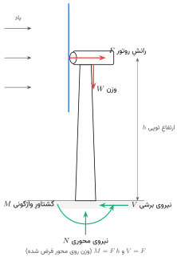
رانشِ روتور. باد روی روتور نیرویی در جهتِ وزش وارد میکند. با ضریبِ بیبُعدِ ضریبِ رانش \(C_T\):
\[ F = \tfrac12 \rho A v^{2} C_T \tag{4.1}\]
\(\rho\) چگالیِ هوا، \(A\) مساحتِ جاروبشده و \(v\) تندیِ باد است. عبارتِ \(\tfrac12\rho v^{2}\) فشارِ دینامیکی است (بخش 4.2.4)؛ پس رانش «فشارِ باد ضربِ مساحت ضربِ یک ضریب» است.
مثال 4.1 (رانش و گشتاورِ واژگونیِ توربینِ نیروگاهِ P) پرسش. برای توربینِ WT-5.0-150 (روتورِ 150 m، توپی در 100 m) در تندیِ 11 m/s، چگالیِ 1.05 kg/m³ و \(C_T = 0.8\) (فرضی، A-046)، رانش و گشتاورِ پای برج را بیابید. وزنِ روتور و ناسل ۳۵۰ تن (فرضی) است.
پاسخ.
rotor area pi (150/2)^2 = 17,671 m2; rho 1.05 kg/m3, v 11.0 m/s, C_T 0.8
(A-046)
thrust F = 1/2 rho A v^2 C_T = 898 kN
overturning moment at the tower base F x 100 m = 89.8 MN m
weight of rotor and nacelle 350 t x 9.81 = 3.43 MN (downward)
check: the moment of the weight about the base is zero only if the mass sits
on the axis; an offset of 2 m adds 6.9 MN mتفسیر. حدودِ ۹۰۰ کیلونیوتن رانش، به وزنِ ۹۰ تن، در ارتفاعِ صد متری؛ گشتاورِ حاصل حدودِ 90 MN·m است و همین عدد است که ضخامتِ پای برج، پیچهای فلنج و ابعادِ فونداسیون را تعیین میکند (فصلِ ۳۰). وزن فشاری عمودی است و اگر جرم کمی از محور جلوتر باشد، گشتاورِ اضافهای میسازد. وارسی: یکاها \(\text{kg/m}^3 \cdot \text{m}^2 \cdot \text{m}^2/\text{s}^2 = \text{kg}\cdot\text{m/s}^2 = \text{N}\). محدودیت: بیشینهٔ رانش معمولاً نزدیکِ تندیِ اسمی رخ میدهد و بارهای طراحی از شبیهسازیِ هوا-کشسانی و حالتهای حدی (تندباد، توقفِ اضطراری) میآیند، نه از این فرمولِ ساده.
4.2.2 گشتاور، توانِ مکانیکی و چرخش
گشتاور اثرِ چرخانندهٔ نیروست: نیرو ضربِ فاصلهٔ عمودی تا محور، \(T = F\,r\)، با یکای نیوتنمتر. در چرخش، توان حاصلضربِ گشتاور و سرعتِ زاویهای است:
\[ P = T\,\omega, \qquad \omega = \frac{2\pi n}{60} \tag{4.2}\]
\(n\) دور در دقیقه است. نتیجهٔ مهم: برای توانِ ثابت، هر چه دور کمتر، گشتاور بیشتر. روتورِ بزرگ کُند میچرخد و گشتاورِ عظیمی روی محورِ اصلی میگذارد؛ گیربکس دور را بالا و گشتاور را پایین میآورد تا ژنراتورِ کوچکتری کافی باشد (فصلِ ۸).
مثال 4.2 (گشتاورِ محورِ اصلی) پرسش. توربین در توانِ اسمیِ 5 MW با بازدهِ زنجیرهٔ انتقالِ 0.94 و دورِ روتورِ 10.5 rpm و نسبتِ گیربکسِ ۱ به ۱۱۰ کار میکند (فرضی، A-047). گشتاورِ روتور و ژنراتور، تندیِ نوکِ پره و نسبتِ تندیِ نوک را بیابید.
پاسخ.
rated 5 MW electrical, drivetrain efficiency 0.94 (A-047): mechanical 5.32 MW
rotor speed 10.5 rpm = 1.0996 rad/s; torque T = P / omega = 4.84 MN m
gearbox 1:110: generator 1155 rpm, torque 44.0 kN m (losses ignored)
blade tip speed omega R = 82.5 m/s; tip-speed ratio at 10 m/s: 8.25تفسیر. گشتاورِ 4.8 MN·m روی محورِ اصلی، معادلِ آویختنِ ۴۹۰ تن از یک بازوی یکمتری است. گیربکس آن را به 44 kN·m میرساند. نوکِ پره با 82.5 m/s، حدودِ ۳۰۰ کیلومتر بر ساعت، حرکت میکند؛ صدا، فرسایشِ لبهٔ پره و ایمنی به همین تندی وابستهاند (فصلِ ۱۱).
لختیِ دورانی. همانطور که جرم در برابرِ تغییرِ سرعت مقاومت میکند، ممانِ لختی \(I = \int r^{2}\,\mathrm{d}m\) در برابرِ تغییرِ سرعتِ زاویهای مقاومت میکند و انرژیِ جنبشیِ دورانی \(E = \tfrac12 I\omega^{2}\) است. جرمی که دورتر از محور است سهمِ بسیار بیشتری دارد (\(r^{2}\)).
مثال 4.3 (انرژیِ ذخیره در روتورِ چرخان) پرسش. سه پرهٔ ۲۰ تنی و ۷۳ متری (فرضی، A-048) را یک بار میلهٔ یکنواخت و یک بار با جرمِ خطی که به نوک صفر میرسد مدل کنید. ممانِ لختی، انرژیِ جنبشی در 10.5 rpm و ثابتِ لختی \(H = E/S\) (با توانِ ظاهریِ 5.5 MVA) را بیابید.
پاسخ.
three blades of 20 t, 73 m (A-048); hub and generator neglected
uniform rod about the root: I = 3 m L^2 / 3 = 1.066e+08 kg m2
mass tapering linearly to zero at the tip: I = 3 m L^2 / 6 = 5.329e+07 kg m2
(numerical 5.329e+07)
kinetic energy at 10.5 rpm: 1/2 I omega^2 = 32.2 MJ = 8.9 kWh
inertia constant H = E / S = 32.2 MJ / 5.5 MVA = 5.9 s
a converter-connected rotor does not share this energy with the grid by
itselfتفسیر. فرضِ توزیعِ جرم ممانِ لختی را دو برابر عوض میکند: پرههای واقعی در ریشه سنگینترند. انتگرالِ عددی (بخش 3.5.4) فرمولِ بسته را تأیید میکند. ثابتِ لختیِ حدودِ ۶ ثانیه یعنی انرژیِ ذخیره برای ۶ ثانیه کارِ توربین در توانِ نامی کافی است؛ اما چون توربینِ امروزی با مبدل به شبکه وصل است، این انرژی خودبهخود به پایداریِ بسامدِ شبکه کمک نمیکند، مگر کنترلِ مبدل آن را بخواهد (فصلهای ۲۰ و ۲۸).
4.2.3 کار، انرژی و بازده
کار انتقالِ انرژی با نیرو در طولِ جابهجایی است: \(W = F\,d\) (ژول). انرژی توانِ انجامِ کار است و شکلهای بسیار دارد: جنبشی (\(\tfrac12 m v^{2}\))، پتانسیلِ گرانشی (\(m g h\))، گرمایی، الکتریکی، شیمیایی و تابشی. قانونِ پایستگیِ انرژی میگوید انرژی ساخته یا نابود نمیشود، فقط شکلش عوض میشود. بازده نسبتِ انرژیِ مفیدِ خروجی به انرژیِ ورودی است و بقیه معمولاً به گرما تبدیل میشود. در زنجیرهای از تبدیلها، بازدهها ضرب میشوند:
\[ \eta_\text{total} = \eta_1\,\eta_2\,\cdots\,\eta_n \tag{4.3}\]
مثال 4.4 (از باد تا شبکه در تندیِ ۱۰ متر بر ثانیه) پرسش. توانِ بادی را که از سطحِ روتور میگذرد حساب کنید و گام به گام با ضریبِ توانِ 0.45 و بازدههای گیربکس، ژنراتور، مبدل و ترانسفورماتورِ توربین (فرضی، A-047) تا خروجیِ توربین دنبال کنید.
پاسخ.
energy chain at 10 m/s, rho 1.05 kg/m3 (efficiencies assumed, A-047):
after wind through the rotor area 9.278 MW
after rotor (C_p 0.45) 4.175 MW
after gearbox 4.050 MW
after generator 3.928 MW
after converter 3.830 MW
after turbine transformer 3.792 MW
overall wind -> grid 0.409; product of the electrical stages 0.908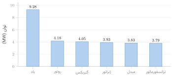
تفسیر. بزرگترین «افت» در روتور است: بیش از نیمی از انرژیِ باد از روتور عبور میکند و میماند، و این ناکارآمدی نیست بلکه فیزیک است (حدِ بتز، بخش 4.2.5). گیربکس و مرحلههای الکتریکی با هم حدودِ ۹ درصد تلفات دارند که گرما میشود و باید با خنککاری دفع شود: حدودِ 380 kW گرما در ناسل، به اندازهٔ صدها بخاری. هر درصد بهبودِ بازده هم انرژیِ بیشتر میدهد و هم گرمای کمتر.
- جرم و وزنِ یک ماژولِ ۲۸ کیلوگرمی را با یکای درست بنویسید.
- چرا در نمودارِ جسمِ آزادِ برج، واکنشِ پای برج یک گشتاور هم دارد؟
- اگر رانش با مجذورِ تندی بالا رود، رانش در 13 m/s چند برابرِ 11 m/s است (با \(C_T\) ثابت)؟
- توانِ 3 MW در 12 rpm چه گشتاوری لازم دارد؟
- چرا جرمِ نوکِ پره بیشتر از جرمِ ریشه در ممانِ لختی اثر دارد؟
- اگر بازدهِ گیربکس از 0.97 به 0.98 برسد، خروجیِ مثال 4.4 چقدر زیاد میشود؟
- تلفاتِ الکتریکیِ یک توربین به چه شکلی از انرژی تبدیل میشود و چه پیامدِ طراحیای دارد؟
- انرژیِ پتانسیلِ ۱۰۰ تن آب در ارتفاعِ ۱۰۰ متر چند کیلوواتساعت است؟
4.2.4 شارهها: چگالیِ هوا، فشار و هوای متحرک
هوا یک گاز است. مولکولهای هوا بیوقفه حرکت میکنند و به هر سطح میخورند؛ برآیندِ این برخوردها فشار است (نیرو بر مساحت، پاسکال). برای هوا، قانونِ گازِ کامل فشار، دما و چگالی را به هم پیوند میدهد:
\[ \rho = \frac{p}{R_\text{d}\,T} \tag{4.4}\]
\(R_\text{d} = 287.05\ \text{J/(kg}\cdot\text{K)}\) ثابتِ ویژهٔ گازِ هوای خشک و \(T\) دمای مطلق (کلوین) است. پیامدها: در فشارِ ثابت هوای گرم رقیقتر است؛ در دمای ثابت هوای کمفشار رقیقتر است. بخارِ آب سبکتر از هوای خشک است، پس هوای مرطوب در همان فشار و دما کمی رقیقتر است؛ این اثر با «دمای مجازی» در نظر گرفته میشود.
فشار با ارتفاع کم میشود. هر لایهٔ هوا وزنِ لایههای بالاتر را تحمل میکند: \(\mathrm{d}p/\mathrm{d}z = -\rho g\). با جایگذاریِ معادلهٔ 4.4 و دمایی که با آهنگِ ثابتِ \(L\) با ارتفاع کم میشود، به فرمولِ فشارسنجی میرسیم:
\[ p(z) = p_0\left(1 - \frac{L z}{T_0}\right)^{g/(R_\text{d} L)} \tag{4.5}\]
با مقدارهای جوِ استاندارد (\(p_0 = 1013.25\ \text{hPa}\)، \(T_0 = 288.15\ \text{K}\)، \(L = 6.5\ \text{K/km}\))، نما حدودِ \(5.26\) است.
چرا چگالی مهم است؟ توانِ باد با چگالی متناسب است (\(P = \tfrac12\rho A v^{3}\)). منحنیِ توانِ توربین برای 1.225 kg/m³ (هوای استانداردِ کنارِ دریا) داده میشود و ساختگاهِ نیروگاهِ P در ارتفاعِ ۱۲۰۰ متری است. اصلاحِ سادهلوحانه «ضربِ توان در \(\rho/1.225\)» است؛ اما توربینِ دارای کنترلِ زاویهٔ پره در بالای تندیِ اسمی همان توانِ نامی را میدهد، چگالی هر چه باشد. روشِ مرسوم این است که تندیِ همارز را حساب کنیم: تندیای که در هوای استاندارد همان توان را میآورد،
\[ v_\text{eq} = v\left(\frac{\rho}{1.225}\right)^{1/3} \tag{4.6}\]
و سپس منحنیِ توانِ استاندارد را در \(v_\text{eq}\) بخوانیم. این روش در زیرِ تندیِ اسمی با ضربِ ساده یکی است و در بالای آن بهدرستی به توانِ نامی میرسد. جزئیاتِ روشِ رسمیِ آزمونِ عملکرد در فصلهای ۱۱ و ۱۵ میآید.
مثال 4.5 (چگالیِ هوا در نیروگاهِ P و اثرش بر انرژیِ بادی) پرسش. (الف) فشارِ جوِ استاندارد در ۱۲۰۰ متر چیست؟ (ب) با فشار و دمای ساعتیِ بستهٔ داده، چگالیِ ساعتی را در ارتفاعِ 2 m و در ارتفاعِ توپی حساب کنید؛ اثرِ رطوبتِ ۴۰ درصدی (فرضی) را هم ببینید. (پ) انرژیِ سالانهٔ مزرعه را بدونِ اصلاح، با تندیِ همارزِ ساعتی، با چگالیِ میانگین، با رطوبت، و با ضربِ ساده بیابید.
پاسخ.
standard atmosphere at 1200 m: p = 877.2 hPa; rho at 15 C would be 1.090 kg/m3
data pack, hourly: rho at 2 m mean 1.056 (range 0.972 .. 1.153) kg/m3
moved to 100 m (lapse 6.5 K/km): mean 1.046; with 40 % humidity 1.042 kg/m3
annual wind energy of the farm (12 turbines, 0.88 losses):
power curve at 1.225 kg/m3 (no correction): 192.5 GWh
equivalent speed v (rho/1.225)^(1/3), hourly rho: 176.1 GWh (-8.5 %)
same with the annual mean density: 176.1 GWh (-8.5 %)
with 40 % relative humidity: 175.7 GWh (-8.7 %)
power scaled by rho/1.225 at every speed (wrong): 165.2 GWh (-14.2 %)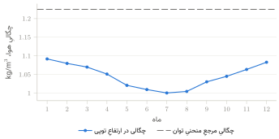
تفسیر. هوای ساختگاه حدودِ ۱۵ درصد رقیقتر از هوای مرجع است و انرژیِ بادی را 8.5 % کم میکند: همان عددی که بازبینیِ فصلِ ۲ (یادداشتِ C-05 و محدودیتِ L-2) گزارش کرد، این بار با فیزیکِ کامل. کاهشِ انرژی کمتر از کاهشِ چگالی است چون در ساعتهای بالای تندیِ اسمی اثری ندارد. ضربِ ساده 14.2 % میدهد و تولید را حدودِ ۶ درصد کمبرآورد میکند؛ رطوبت فقط 0.2 درصدِ دیگر اثر دارد. چگالی در زمستان حدودِ ۹ درصد بیشتر از تابستان است (شکل 4.3). در این داده، چگالیِ میانگین و چگالیِ ساعتی تقریباً یک نتیجه میدهند؛ این را باید برای هر ساختگاه وارسی کرد، نه فرض. اثرِ ثبت: فرضِ A-028 و مجهولِ U-013 فصلِ ۲ اکنون با مدلِ فیزیکیِ آزمونشده پاسخ دارند؛ دفترِ مدلها بهروز میشود (بخش 4.11).
فشارِ دینامیکی و بارِ باد. معادلهٔ برنولی برای شارهٔ بیاصطکاک در امتدادِ یک خطِ جریان میگوید \(p + \tfrac12\rho v^{2} + \rho g z\) ثابت است: وقتی هوا تند میشود، فشارش افت میکند. وقتی باد به سطحی میخورد و میایستد، فشارش به اندازهٔ فشارِ دینامیکی \(q = \tfrac12\rho v^{2}\) بالا میرود. بارِ باد روی هر سازه، فشارِ دینامیکی ضربِ مساحت ضربِ یک ضریبِ نیرو است که به شکل بستگی دارد.
مثال 4.6 (باد روی یک ماژولِ خورشیدی) پرسش. فشارِ دینامیکیِ تندبادِ 30 m/s و نیروی آن را روی ماژولِ PVM-550 با ضریبِ نیروی 1.2 (فرضی، A-049) حساب و با وزنِ ماژول مقایسه کنید.
پاسخ.
dynamic pressure q = 1/2 rho v^2 at a 30 m/s gust (A-049, rho 1.225 kg/m3):
q = 551 Pa; module 2.278 x 1.134 m = 2.583 m2; force coefficient 1.2:
F = q A C_f = 1.71 kN against a module weight of 0.27 kN
doubling the gust speed quadruples the load; codes set the design values
(ch. 30)تفسیر. نیروی باد بیش از شش برابرِ وزنِ ماژول است و میتواند بالابرنده باشد؛ پس اتصالِ ماژول به سازه و سازه به زمین برای کشش هم طراحی میشود. چون بار با مجذورِ تندی بالا میرود، تندیِ طراحی (که آییننامهٔ بارگذاری تعیین میکند، فصلِ ۳۰) مهمترین ورودی است. چگالیِ 1.225 اینجا عمداً محافظهکارانه است.
4.2.5 نظریهٔ تکانه و حدِ بتز
پرسش. توربین حداکثر چه کسری از انرژیِ باد را میتواند بگیرد؟ اگر همهٔ انرژی را بگیرد، هوا پشتِ روتور میایستد و هوای تازه دیگر عبور نمیکند؛ اگر هیچ را نگیرد، چیزی به دست نمیآید. پس بهینهای در میان هست.
مدلِ قرصِ محرک. روتور را قرصی نازک فرض میکنیم که تندیِ هوا را از \(v\) دورِ دست به \(v(1 - a)\) روی قرص و \(v(1 - 2a)\) در پشتِ آن (دنباله) میرساند؛ \(a\) ضریبِ القای محوری است. از پایستگیِ جرم و تکانه و انرژی:
\[ \begin{aligned} P &= \tfrac12 \rho A v^{3}\, \underbrace{4a(1 - a)^{2}}_{C_p} \\ F &= \tfrac12 \rho A v^{2}\, \underbrace{4a(1 - a)}_{C_T} \end{aligned} \tag{4.7}\]
با صفر کردنِ مشتقِ \(C_p\) نسبت به \(a\) (بخش 3.2.9): \(\mathrm{d}C_p/\mathrm{d}a = 4(1 - a)(1 - 3a) = 0\)، پس \(a = 1/3\) و \(C_{p,\max} = 16/27 \approx 0.593\): حدِ بتز.
مثال 4.7 (حدِ بتز و جای توربینِ واقعی) پرسش. بیشینهٔ \(C_p\)، مقدارِ \(C_T\) در آن و تندیِ دنباله را بیابید. توربینی با \(C_p = 0.45\) چند درصدِ حدِ بتز را میگیرد؟
پاسخ.
actuator disc: induction a slows the wind to (1 - a) v at the disc, (1 - 2a) v
far behind
C_p = 4 a (1 - a)^2, C_T = 4 a (1 - a)
dC_p/da = 4 (1 - a)(1 - 3a) = 0 -> a = 1/3: C_p = 16/27 = 0.5926, C_T = 8/9
= 0.8889
wake speed at a = 1/3: v/3; a > 1/2 would need a reversed wake (model fails)
the turbine of A-046 (C_p 0.45 at 10 m/s) reaches 76% of the Betz limit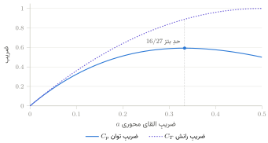
تفسیر. توربینِ خوب حدودِ سهچهارمِ حدِ نظری را میگیرد؛ بقیه به اصطکاکِ پره، چرخشِ دنباله، تعدادِ محدودِ پره و تلفاتِ نوک میرود (فصلِ ۱۱). نزدیکِ بهینه، منحنیِ \(C_p\) تخت است (شکل 4.4) اما رانش هنوز بالا میرود؛ از این رو کنترلِ توربین گاهی کمی کمتر از بهینهٔ توان کار میکند تا بار کم شود. دنبالهٔ کُند (یکسومِ تندی) دلیلِ فاصلهگذاری میانِ توربینهاست (فصلِ ۱۴). محدودیت: مدل بیاصطکاک، یکبعدی و پایاست و برای \(a > 0.5\) دیگر معنا ندارد.
4.2.6 لایهٔ مرزیِ جو و برشِ باد
شهود. زمین با اصطکاک هوا را کُند میکند؛ هر چه بالاتر برویم اثرِ زمین کمتر و باد تندتر است. این لایهٔ نزدیکِ زمین لایهٔ مرزیِ جو است و تغییرِ تندی با ارتفاع برشِ باد. دو مدلِ ساده، قانونِ توانی (سطرِ اول) و قانونِ لگاریتمی (سطرِ دوم):
\[ \begin{aligned} v(z) &= v_\text{ref}\left(\frac{z}{z_\text{ref}}\right)^{\alpha} \\ v(z) &= v_\text{ref}\,\frac{\ln(z/z_0)}{\ln(z_\text{ref}/z_0)} \end{aligned} \tag{4.8}\]
\(\alpha\) نمای برش و \(z_0\) طولِ زبری است (چمنزار چند سانتیمتر، جنگل بیش از یک متر). مدلِ لگاریتمی از فیزیکِ لایهٔ مرزی در هوای «خنثی» میآید؛ مدلِ توانی تقریبی تجربی است. پایداریِ جو هر دو را تغییر میدهد: روزِ آفتابی هوای گرمِ پایین بالا میرود و لایهها را مخلوط میکند (برشِ کم)؛ شبِ آرام هوای سردِ سنگین پایین میماند و لایهها روی هم میلغزند (برشِ زیاد).
مثال 4.8 (برشِ باد در دکلِ نیروگاهِ P) پرسش. با تندیهای ساعتیِ ۶۰، ۸۰ و ۱۰۰ متریِ بستهٔ داده، نمای برش را از میانگینها و ساعت به ساعت حساب کنید، تندیِ میانگین را در بالاترین و پایینترین نقطهٔ روتور برونیابی کنید و طولِ زبری را با مدلِ لگاریتمی بیابید.
پاسخ.
mean speeds 60 / 80 / 100 m: 6.51 / 6.84 / 7.10 m/s
power-law exponent from the means: 0.171
hourly exponent (speeds above 3 m/s), median by hour: night max 0.218, day
min 0.119
extrapolated mean at the blade tip (175 m): 7.82 m/s; at the lowest tip (25
m): 5.60 m/s
log law through the 60 and 100 m means: roughness length z0 = 0.225 m
daytime sun mixes the air (small exponent); calm nights let layers slide
(large)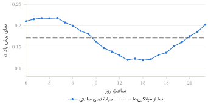
تفسیر. نمای میانگینِ 0.17 در محدودهٔ معمولِ زمینِ باز است. چرخهٔ روزانه روشن است (شکل 4.5): شبها برش تقریباً دو برابرِ نیمروز است. پیامدها: (۱) نوکِ بالای پره و پایینِ آن تندیهای متفاوتی میبینند و پره در هر دور بارِ متناوب میگیرد (خستگی، بخش 4.3.3)؛ (۲) برونیابی از دکلِ کوتاه به توپیِ بلند با نمای میانگین در ساعتهای شب خطا دارد؛ (۳) طولِ زبریِ بهدستآمده با برازشِ دو نقطه، عددی مؤثر است و لزوماً زبریِ واقعیِ زمین نیست. اندازهگیری در چند ارتفاع و تا نزدیکِ توپی دقیقاً به همین دلیل لازم است (فصلِ ۱۳).
- چگالیِ هوا در 850 hPa و 0 °C چیست؟
- چرا هوای مرطوب سبکتر از هوای خشک است؟
- چرا ضربِ ساده در \(\rho/1.225\) برای تندیهای بالای اسمی نادرست است؟
- فشارِ دینامیکیِ بادِ 40 m/s چند برابرِ 20 m/s است؟
- حدِ بتز را با مشتقگیری از \(4a(1 - a)^{2}\) به دست آورید.
- چرا روتوری که هوا را کاملاً متوقف کند هیچ توانی نمیگیرد؟
- با نمای 0.2، تندی در 150 m چند برابرِ 100 m است؟
- چرا برشِ باد شبها بیشتر است؟
- یک پیامدِ برشِ زیاد برای بارِ پره و یکی برای برآوردِ تولید نام ببرید.
4.2.7 گرما، دما و سه راهِ انتقالِ گرما
دما و گرما دو چیزند. دما میزانِ جنبشِ میانگینِ ذرههاست و با کلوین یا درجهٔ سلسیوس سنجیده میشود؛ گرما انرژیای است که به سببِ اختلافِ دما جابهجا میشود (ژول). برای بالا بردنِ دمای جرمِ \(m\) به اندازهٔ \(\Delta T\) گرمای \(Q = m c\,\Delta T\) لازم است (\(c\) ظرفیتِ گرماییِ ویژه). گرما به سه راه منتقل میشود:
- رسانش در جامد و شارهٔ ساکن: شار متناسب با شیبِ دما (قانونِ فوریه)، \(q = -k\,\mathrm{d}T/\mathrm{d}x\)، با \(k\) رسانندگیِ گرمایی. مس حدودِ ۴۰۰ و پلیاتیلن حدودِ ۰٫۴ وات بر متر بر کلوین (هزار برابر اختلاف).
- همرفت از سطح به شارهٔ متحرک: \(q = h\,(T_\text{s} - T_\infty)\) با ضریبِ همرفت \(h\)، که از چند وات (هوای آرام) تا صدها وات بر مترمربع بر کلوین (بادِ تند، آب) تغییر میکند.
- تابش: هر سطحی به نسبتِ توانِ چهارمِ دمای مطلقش تابش میکند، \(q = \varepsilon\sigma T^{4}\) (قانونِ استفان-بولتزمان)، با \(\varepsilon\) گسیلندگی میانِ صفر و یک.
مقاومتِ گرمایی. در حالتِ پایا، هر لایه مثلِ مقاومتِ الکتریکی رفتار میکند: «اختلافِ دما = شارِ گرما × مقاومتِ گرمایی»، با \(R_\text{th} = L/(kA)\) برای رسانش و \(1/(hA)\) برای همرفت. لایههای پشتِ سرِ هم سریاند و جمع میشوند؛ همان ریاضیاتِ مدارهای فصلِ ۶. ثابتِ زمانیِ گرمایی \(\tau = R_\text{th} C_\text{th}\) همان است که در بخش 3.3.7 دیدیم.
4.2.8 دمای ماژولِ خورشیدی
توازنِ انرژی. ماژول بیشترِ تابشِ جذبشده را نه به برق بلکه به گرما تبدیل میکند و دمایش آنقدر بالا میرود که همرفت و تابشِ سطحها همان گرما را دفع کنند. مدلِ سادهٔ رایج از دادهٔ «دمای کارِ اسمیِ سلول» (NOCT) در برگهٔ دادهٔ ماژول استفاده میکند (دما در 800 W/m²، هوای 20 °C و بادِ 1 m/s):
\[ T_\text{cell} = T_\text{air} + \left(\text{NOCT} - 20\right)\frac{G}{800} \tag{4.9}\]
و توانِ ماژول با ضریبِ دماییِ توان \(\gamma\) (منفی) از مقدارِ دمای 25 °C تغییر میکند: \(P \approx P_{25}\,\big(1 + \gamma\,(T_\text{cell} - 25)\big)\). دلیلِ فیزیکیِ افتِ توان با دما در بخش 4.2.13 میآید: ولتاژِ سلول با دما کم میشود.
مثال 4.9 (ماژولِ داغ در روزِ تابستان) پرسش. با دادهٔ روزِ تابستانیِ بستهٔ داده و ماژولِ PVM-550 (NOCT برابرِ 45 °C و \(\gamma = -0.35\,\%/\text{K}\))، دمای سلول و تغییرِ توان را ساعت به ساعت و میانگینِ وزندار با تابش را بیابید.
پاسخ.
summer subset day, NOCT model T_cell = T_air + (45 - 20) G / 800, gamma -0.35
%/K
noon hour 11: G 1038 W/m2, air 34.2 C -> cell 66.6 C, power change -14.6 %
irradiance-weighted change over the day: -11.9 %
hottest cell temperature of the day 68.5 C
NOCT assumes 1 m/s wind and open-rack mounting; roof-mounted modules run
hotter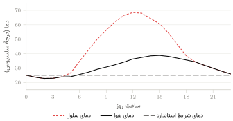
تفسیر. نیمروزِ تابستان سلول حدودِ ۳۰ درجه از هوا داغتر است و ماژول حدودِ ۱۵ درصد کمتر از توانِ برگهٔ داده میدهد؛ در کلِ روز حدودِ ۱۲ درصد. این بزرگترین «تلفاتِ» تابستانیِ نیروگاهِ خورشیدی است و مدلِ غربالگریِ فصلِ ۱ آن را نمیدید (فقط ضریبِ کاراییِ ثابت داشت). نصبِ باز و باد آن را کم میکنند؛ نصبِ چسبیده به سقف بیشترش میکند. مدلهای دقیقترِ دمای ماژول (با باد، نوعِ نصب و ظرفیتِ گرمایی) در فصلهای ۱۰ و ۱۵ میآیند.
4.2.9 انبساطِ گرمایی
بیشترِ مواد با گرم شدن بزرگ میشوند: \(\Delta L = \alpha L\,\Delta T\)، با ضریبِ انبساطِ خطی \(\alpha\) (فولاد حدودِ \(12 \times 10^{-6}\)، آلومینیوم حدودِ \(23 \times 10^{-6}\) بر کلوین). اگر قطعه آزاد باشد فقط بلند میشود؛ اگر مهار شده باشد، تنشی برابرِ \(E\alpha\,\Delta T\) در آن ساخته میشود (\(E\) مدولِ کشسانی، بخش 4.3.1) که میتواند بسیار بزرگ باشد.
مثال 4.10 (ردیفِ ردیاب، شینه و کابل) پرسش. تغییرِ طولِ یک لولهٔ گشتاورِ فولادیِ ۱۰۰ متری میانِ −20 و +70 °C، یک شینهٔ آلومینیومیِ ۳ متری با ۸۰ کلوین گرم شدن و رسانای مسیِ کابلی ۵۰۰ متری با ۵۰ کلوین را بیابید. تنشِ فولادِ کاملاً مهارشده با ۵۰ کلوین چیست؟
پاسخ.
steel torque tube 100 m, alpha 12e-6 /K, -20 .. +70 C: 108 mm
aluminium busbar 3 m, alpha 23e-6 /K, 80 K: 5.5 mm
copper cable conductor 500 m, alpha 17e-6 /K, 50 K: 425 mm
fully restrained steel, 50 K: stress E alpha dT = 126 MPa (a third of S355
yield)
expansion joints, slotted holes and cable snaking exist for this reasonتفسیر. یازده سانتیمتر تغییرِ طول در یک ردیفِ ردیاب، اگر جایی برای حرکت نداشته باشد، پایهها را خم میکند؛ از این رو اتصالها سوراخِ لوبیایی یا بخشِ لغزنده دارند. شینهها اتصالِ انعطافپذیر دارند و کابلها در ترانشه کمی مارپیچ خوابانده میشوند. تنشِ 126 MPa در فولادِ مهارشده یکسومِ تنشِ تسلیمِ فولادِ ساختمانی است: انبساطِ گرمایی یک بارِ طراحی است، نه جزئیات.
4.2.10 گرم شدنِ رسانا: توازنِ انرژی با مقاومتِ وابسته به دما
مسئله. رسانایی با جریانِ \(I\) گرمای ژولِ \(I^{2}R\) تولید میکند و با همرفت و تابش آن را دفع میکند. اما مقاومتِ فلز با دما زیاد میشود: \(R(T) = R_{20}\big(1 + \alpha_R (T - 20)\big)\)، با \(\alpha_R \approx 0.0039\) بر کلوین برای مس. پس گرمتر شدن گرمای بیشتر تولید میکند: یک بازخوردِ مثبت. در حالتِ پایا:
\[ I^{2}R_{20}\big(1 + \alpha_R (T - 20)\big) = hA\,(T - T_\text{amb}) \tag{4.10}\]
که در \(T\) خطی است و پاسخِ بسته دارد. با \(k = I^{2}R_{20}/(hA)\):
\[ T - T_\text{amb} = \frac{k\,\big(1 + \alpha_R (T_\text{amb} - 20)\big)}{1 - k\,\alpha_R} \tag{4.11}\]
اگر \(k\,\alpha_R \ge 1\) باشد، این مدل حالتِ پایا ندارد: فرارِ گرمایی. در واقعیت، تابش با توانِ چهارمِ دما و همرفت با اختلافِ دما قویتر میشوند و از فرار جلوگیری میکنند، اما پیش از آن عایق و اتصالها آسیب دیدهاند.
مثال 4.11 (دمای یک شینهٔ مسی) پرسش. شینهٔ مسیِ ۸۰ در ۱۰ میلیمتر با ضریبِ دفعِ گرمای 10 W/(m²·K) در هوای 40 °C (فرضی، A-051) جریانهای ۵۰۰ تا ۳۰۰۰ آمپر را حمل میکند. دمای پایدار، جریانِ فرارِ مدلِ خطی و همگراییِ روشِ تکرارِ نقطهٔ ثابت را نشان دهید.
پاسخ.
copper busbar 80 x 10 mm: R20 = 21.50 micro-ohm/m, surface 0.18 m2 per m, h =
10.0 W/m2K, ambient 40.0 C (A-051)
500 A: steady 43.3 C (k alpha = 0.012)
1000 A: steady 53.5 C (k alpha = 0.047)
1500 A: steady 72.4 C (k alpha = 0.106)
2000 A: steady 103.4 C (k alpha = 0.188)
2500 A: steady 154.0 C (k alpha = 0.293)
3000 A: steady 240.8 C (k alpha = 0.422)
linear model: no steady state above I = sqrt(h A / (R20 alpha)) = 4,616 A
fixed-point iteration at 2000 A: 103.4 C after 7 steps (converges because k
alpha < 1)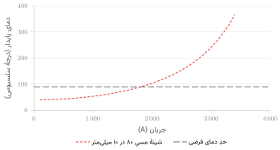
تفسیر. دما با مجذورِ جریان بالا میرود و کمی هم تندتر، به سببِ بازخوردِ مقاومت (شکل 4.7). دو برابر کردنِ جریان از ۱۰۰۰ به ۲۰۰۰ آمپر افزایشِ دما را از 13.5 به 63.4 K میبرد، بیش از چهار برابر. روشِ تکرار (\(T_{n+1} = T_\text{amb} + I^{2}R(T_n)/(hA)\)) در ۷ گام همگرا میشود، چون ضریبِ بازخورد \(k\alpha_R = 0.19\) کوچکتر از یک است: همان شرطِ همگراییِ تکرارِ نقطهٔ ثابت در فصلِ ۳. محدودیت: ضریبِ \(h\) ثابت فرض شده است؛ ظرفیتِ جریانِ رسمیِ شینه و کابل با روشهای استاندارد و شرایطِ نصب تعیین میشود (فصلِ ۲۴).
- تفاوتِ دما و گرما را با یک مثالِ نیروگاهی بگویید.
- سه راهِ انتقالِ گرما را برای یک ترانسفورماتورِ روغنی نام ببرید.
- مقاومتِ گرماییِ یک لایهٔ عایقِ ۱ سانتیمتری با \(k = 0.4\) و سطحِ یک مترمربع چیست؟
- در مثال 4.9، اگر NOCT برابرِ 42 °C بود، دمای سلولِ نیمروز چه میشد؟
- چرا اتصالِ ماژولها به ریل سوراخِ لوبیایی دارد؟
- تنشِ آلومینیومِ مهارشده با ۵۰ کلوین (\(E = 70\ \text{GPa}\)) چیست؟
- چرا در معادلهٔ 4.11 مخرج \(1 - k\alpha_R\) است و صفر شدنش چه معنایی دارد؟
- اگر \(h\) دو برابر شود (بادِ خنک)، جریانِ مجاز برای همان دما چند برابر میشود (تقریبی)؟
4.2.11 بار، میدانِ الکتریکی و عایق
بار و میدان. بارِ الکتریکی (کولن) دو نوع است و بارهای همنام یکدیگر را میرانند. بار در فضای اطرافش میدانِ الکتریکی \(\mathbf{E}\) میسازد: نیرو بر واحدِ بار (ولت بر متر). ولتاژ انرژی بر واحدِ بار برای جابهجا شدن میانِ دو نقطه است و میدان «شیبِ ولتاژ» است. جریان آهنگِ عبورِ بار است (آمپر = کولن بر ثانیه) و مقاومت نسبتِ ولتاژ به جریان در یک رسانا (فصلِ ۶ اینها را کامل میسازد).
عایق و شکستِ الکتریکی. عایق بارِ آزاد ندارد، اما اگر میدان از حدی (استقامتِ دیالکتریک) بیشتر شود، الکترونها از مولکولها کنده میشوند، بهمنی از بار به راه میافتد و عایق میشکند. هوا در شرایطِ عادی حدودِ ۳ کیلوولت بر میلیمتر تحمل میکند. پس طراحیِ عایق یعنی کنترلِ بیشینهٔ میدان، نه میانگینش.
کابلِ هممحور. در کابلِ تکهستهایِ فشارِ متوسط، رسانا در مرکز و پوشش (اسکرین)ِ زمینشده در بیرون است و عایق میانِ آن دو. از قانونِ گاوس، میدان در شعاعِ \(r\) از مرکز:
\[ E(r) = \frac{U_0}{r\,\ln(r_\text{out}/r_\text{in})} \tag{4.12}\]
\(U_0\) ولتاژِ فاز به زمین است. میدان کنارِ رسانا بیشترین است؛ به همین دلیل سطحِ رسانا با لایهٔ نیمهرسانا صاف میشود تا نقطهٔ تیزی میدان را بالا نبرد. ظرفیتِ خازنی کابل \(C = 2\pi\varepsilon_0\varepsilon_r/\ln(r_\text{out}/r_\text{in})\) بر متر است و جریانِ شارژ \(I_c = \omega C U_0\) را حتی بیبار هم میکشد.
مثال 4.12 (میدان در عایقِ کابلِ ۳۳ کیلوولت) پرسش. برای کابلی با شعاعِ زیرِ عایقِ 10 mm، شعاعِ روی عایقِ 18 mm و ضریبِ دیالکتریکِ 2.3 (فرضی، A-052)، میدان در دو سطحِ عایق، نسبتِ بیشینه به میانگین، ظرفیت و جریانِ شارژ را بیابید.
پاسخ.
33 kV cable, U0 = 33/sqrt(3) = 19.05 kV; insulation from r = 10 to 18 mm
(A-052)
E at the conductor screen 3.24 kV/mm; at the insulation screen 1.80 kV/mm
mean field U0 / thickness = 2.38 kV/mm (the peak is 1.36 x the mean)
capacitance 2 pi eps0 eps_r / ln(R/r) = 0.218 microfarad/km; charging
current 1.30 A/km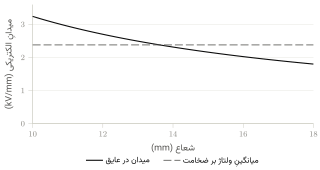
تفسیر. میدانِ کنارِ رسانا 36 % بیشتر از میانگین است (شکل 4.8). حبابِ هوا یا ناخالصیِ کوچکی در این ناحیه، میدان را موضعی بالاتر میبرد و تخلیهٔ جزئی آغاز میشود که عایق را در سالها میفرساید؛ آزمونِ کارخانهایِ تخلیهٔ جزئی (فصلِ ۴۶) دنبالِ همین عیب است. جریانِ شارژِ 1.3 A بر کیلومتر در کابلهای بلند توانِ راکتیوِ چشمگیری میسازد (فصلِ ۲۸).
4.2.12 مغناطیس، نیرو و القا
میدانِ مغناطیسی از بارِ متحرک (جریان) پدید میآید. سیمِ بلندی با جریانِ \(I\) در فاصلهٔ \(d\) چگالیِ شارِ \(B = \mu_0 I/(2\pi d)\) (تسلا) میسازد. رسانای دیگری با جریانِ \(I_2\) در این میدان نیرو حس میکند: \(F = B I_2 L\). پس دو رسانای موازی بر هم نیرو وارد میکنند:
\[ \frac{F}{L} = \frac{\mu_0 I_1 I_2}{2\pi d} \tag{4.13}\]
با جریانهای همجهت یکدیگر را جذب و با جریانهای مخالف دفع میکنند. در کارِ عادی این نیرو ناچیز است، اما جریانِ اتصالِ کوتاه دهها برابرِ جریانِ عادی است و نیرو با مجذورِ جریان بالا میرود.
مواد مغناطیسی. آهن و فولادهای الکتریکی میدان را صدها تا هزاران برابر تقویت میکنند (نفوذپذیریِ زیاد) اما اشباع میشوند (حدودِ ۲ تسلا). تغییرِ متناوبِ میدان دو تلفات دارد: پسماند (چرخهٔ مغناطیسشوندگی) و جریانِ گردابی (جریانهایی که خودِ هسته را گرم میکنند). تلفاتِ گردابی با مجذورِ ضخامتِ ورق متناسب است؛ هستهٔ ترانسفورماتور را از ورقهای نازکِ عایقدار میسازند.
القا. قانونِ فارادی: تغییرِ شارِ مغناطیسیِ گذرنده از یک حلقه، ولتاژ القا میکند، \(e = -N\,\mathrm{d}\Phi/\mathrm{d}t\). ژنراتور با چرخاندنِ میدان و ترانسفورماتور با شارِ متناوب کار میکنند. برای شارِ سینوسی در هستهای با سطحِ \(A\) و بیشینهٔ چگالیِ شارِ \(B\):
\[ V_\text{rms} = 4.44\, f\, N\, A\, B \tag{4.14}\]
پس نسبتِ ولتاژها نسبتِ تعدادِ دورهاست و «ولت بر دور» برای همهٔ سیمپیچهای یک هسته یکی است.
مثال 4.13 (نیروی اتصالِ کوتاه بر شینهها) پرسش. جریانِ اتصالِ کوتاهِ باسِ اتصالِ فصلِ ۳ (21.9 kA) با ضریبِ اوجِ 1.8 (فرضی، A-054) از دو شینهٔ موازی با فاصلهٔ 0.3 m میگذرد. نیرو بر متر و بر هر تکیهگاه را با حالتِ عادی مقایسه کنید.
پاسخ.
fault at bus 1 of chapter 3: I'' = 21.9 kA; peak factor kappa 1.8 (A-054)
peak current i_p = kappa sqrt(2) I'' = 55.7 kA
two parallel bars 0.3 m apart: F/L = mu0 i_p^2 / (2 pi d) = 2.07 kN/m
with supports every 1.2 m: about 2.5 kN per support, for a few milliseconds
at normal current (1750 A peak 2475 A): 4.1 N/mتفسیر. نیرو در اتصالِ کوتاه حدودِ ۵۰۰ برابرِ حالتِ عادی است: 2 kN بر متر، برای چند میلیثانیه. مقرهها، تکیهگاهها و پیچهای شینه برای همین ضربه طراحی و در آزمونِ نوعیِ تابلو سنجیده میشوند (فصلهای ۲۴ و ۴۶). در سهفاز، نیروی شینهٔ میانی کمی متفاوت است و روشِ محاسبهٔ رسمی آن را در نظر میگیرد.
مثال 4.14 (دورهای ترانسفورماتورِ اصلی) پرسش. ترانسفورماتورِ 132/33 kV (ستاره در ولتاژِ بالا، مثلث در ولتاژِ پایین) هستهای با سطحِ 0.5 m² و چگالیِ شارِ 1.7 T دارد (فرضی، A-053). ولت بر دور و تعدادِ دورها را بیابید. با ۱۰ درصد اضافهولتاژ چه میشود؟ نازکتر کردنِ ورق از 0.35 به 0.27 mm تلفاتِ گردابی را چقدر کم میکند؟
پاسخ.
export transformer 132 kV star / 33 kV delta, core 0.5 m2, B 1.7 T (A-053)
volts per turn 4.44 f A B = 188.7 V
HV phase winding 76.2 kV: 404 turns; LV phase winding 33 kV: 175 turns
ratio check 2.309 = 76.2 / 33 = 2.309
flux density at 110 % voltage 1.87 T: near saturation of grain-oriented
steel
eddy loss ~ t^2: 0.27 mm sheet instead of 0.35 mm -> 0.60 xتفسیر. هر دور حدودِ ۱۸۹ ولت دارد؛ ۴۰۴ و ۱۷۵ دور نسبتِ ولتاژها را درست میسازند. ده درصد اضافهولتاژ ده درصد چگالیِ شار را بالا میبرد و هسته را به اشباع نزدیک میکند: جریانِ مغناطیسکننده و گرما و صدا زیاد میشوند (فصلِ ۲۵). ورقِ نازکتر تلفاتِ گردابی را حدودِ ۴۰ درصد کم میکند اما برش و چیدنش گرانتر است: یک مصالحهٔ کلاسیکِ طراحی و ساخت (فصلِ ۴۳).
- چرا طراحِ عایق به بیشینهٔ میدان اهمیت میدهد، نه میانگین؟
- با معادلهٔ 4.12، اگر ضخامتِ عایق دو برابر شود، میدانِ کنارِ رسانا چقدر کم میشود؟
- جریانِ شارژِ یک کابلِ ۲۰ کیلومتری با مشخصاتِ مثال 4.12 چیست؟
- نیروی میانِ دو شینه با جریانِ 1000 A و فاصلهٔ 0.1 m چیست؟
- چرا هستهٔ ترانسفورماتور را از ورقِ نازک میسازند و نه قطعهٔ یکپارچه؟
- ترانسفورماتورِ 400/230 V با ولت بر دورِ 2 V چند دور در هر طرف دارد؟
- اشباعِ هسته چیست و چرا با اضافهولتاژ رخ میدهد؟
4.2.13 نور، فوتون و سلولِ خورشیدی
نور موج است و ذره. نور موجِ الکترومغناطیسی است با طولِ موجِ \(\lambda\)؛ نورِ مرئی از حدودِ ۴۰۰ (بنفش) تا ۷۰۰ نانومتر (سرخ) و تابشِ خورشید از فرابنفش تا فروسرخ گسترده است. اما نور انرژی را در بستههایی به نامِ فوتون میبرد، هر کدام با انرژیِ
\[ E = \frac{h c}{\lambda} \approx \frac{1240}{\lambda\,[\text{nm}]}\ \text{eV} \tag{4.15}\]
گافِ انرژی. در نیمهرسانا، الکترونها فقط وقتی آزاد میشوند (و جریان میسازند) که انرژیای دستکم برابرِ گافِ انرژی \(E_g\) بگیرند؛ برای سیلیسیوم حدودِ 1.12 eV. دو پیامد: (۱) فوتونِ کمانرژیتر از گاف (طولِ موجِ بلندتر از حدودِ ۱۱۰۰ نانومتر) هیچ الکترونی آزاد نمیکند و از سلول میگذرد؛ (۲) فوتونِ پرانرژیتر فقط \(E_g\) از انرژیاش را به الکترون میدهد و بقیه گرما میشود. همین دو اثر بازدهِ سلولِ تکپیوندی را محدود میکنند. افزایشِ دما گاف را کمی کوچکتر و ولتاژِ سلول را کمتر میکند؛ از این رو توان با دما افت میکند (بخش 4.2.8). ساختِ سلول موضوعِ فصلِ ۴۱ در سطحِ کارخانهٔ صنعتی است.
مثال 4.15 (فوتونها، گاف و «بازدهِ نهایی») پرسش. انرژیِ فوتونهای ۴۰۰ تا ۱۱۰۷ نانومتر را حساب کنید. خورشید را جسمِ سیاهِ 5778 K فرض کنید (تقریبِ آموزشی): چه کسری از توانِ آن در فوتونهای بالای گافِ سیلیسیوم است؟ اگر هر فوتونِ بالای گاف دقیقاً \(E_g\) بدهد، بازده چیست و بهترین گاف کدام است؟
پاسخ.
photon energy E = h c / lambda:
400 nm: 3.10 eV
550 nm: 2.25 eV
700 nm: 1.77 eV
1107 nm: 1.12 eV
silicon band gap 1.12 eV -> photons longer than 1107 nm pass through unused
blackbody sun (5778 K): power in photons above 1.12 eV 0.769
'ultimate' efficiency (each photon gives exactly 1.12 eV): 0.438
best gap for this limit: 1.10 eV (0.439)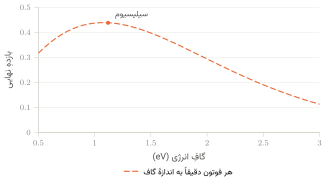
تفسیر. ۷۷ درصدِ توان در فوتونهای قابلِجذب است، اما چون مازادِ انرژیِ هر فوتون گرما میشود، سقفِ این مدل حدودِ ۴۴ درصد است؛ و سیلیسیوم تقریباً روی قلهٔ منحنی نشسته است (شکل 4.9). انتگرالها عددیاند (بخش 3.5.4). حدِ واقعیِ سلول کمتر است، چون الکترونهای آزادشده ممکن است دوباره ترکیب شوند و ولتاژ از گاف کمتر است؛ ماژولِ PVM-550 با بازدهِ 21.3 % حدودِ نیمِ این سقف را میگیرد. محدودیت: طیفِ واقعیِ نورِ خورشید پس از عبور از جو با جسمِ سیاه فرق دارد (فصلِ ۱۲).
بازتاب، جذب و عبور. نوری که به سطح میرسد یا بازتاب میشود، یا جذب، یا عبور میکند و جمعِ این سه یک است. در مرزِ دو ماده با ضریبِ شکستِ \(n_1\) و \(n_2\)، بازتاب در تابشِ عمود \(\big((n_1 - n_2)/(n_1 + n_2)\big)^{2}\) است (روابطِ فرنل) و با زاویه زیاد میشود. لایهٔ ضدبازتاب با ضریبِ شکستِ \(\sqrt{n_1 n_2}\) و ضخامتِ یکچهارمِ طولِ موج، بازتابهای دو سطحش را با تداخل خنثی میکند.
مثال 4.16 (شیشهٔ ماژول و زاویهٔ خورشید) پرسش. بازتابِ مرزِ هوا و شیشه (\(n = 1.5\)) را در زاویههای صفر تا ۸۵ درجه و عبورِ نسبت به تابشِ عمود را بیابید. لایهٔ ضدبازتابِ ایدهآل چه ضریبِ شکست و ضخامتی دارد؟
پاسخ.
air-glass interface, n = 1.5, unpolarised:
0 deg: reflectance 0.040, transmission relative to normal 1.000
30 deg: reflectance 0.042, transmission relative to normal 0.998
45 deg: reflectance 0.050, transmission relative to normal 0.989
60 deg: reflectance 0.089, transmission relative to normal 0.949
70 deg: reflectance 0.171, transmission relative to normal 0.863
80 deg: reflectance 0.388, transmission relative to normal 0.638
85 deg: reflectance 0.613, transmission relative to normal 0.403
quarter-wave anti-reflection layer: n = sqrt(1.5) = 1.225, thickness 550 /
(4 n) = 112 nm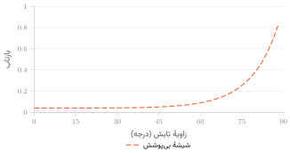
تفسیر. تا ۴۵ درجه بازتاب تقریباً ثابت و ۴ درصد است؛ پس از ۶۰ درجه تند بالا میرود (شکل 4.10). صبح و عصر که خورشید مایل است، بخشِ بزرگی از نور پیش از رسیدن به سلول برمیگردد. این اثر در مدلهای تولید با «ضریبِ اصلاحِ زاویهٔ تابش» وارد میشود (فصلِ ۱۵) و همان ضربِ داخلیِ زاویهٔ تابشِ بخش 3.2.7 ورودیِ آن است.
4.2.14 ارتعاش، تشدید و برج
یادآوری. در بخش 3.3.10 دیدیم که سامانهٔ جرم-فنر بسامدِ طبیعیِ \(f_n = \tfrac{1}{2\pi}\sqrt{k/m}\) دارد و اگر با همان بسامد تحریک شود، دامنه بسیار بزرگ میشود (تشدید). برج توربین یک تیرِ یکسر گیردار است با جرمی سنگین در بالا. سفتیِ نوکِ تیرِ یکسر گیردار \(k = 3EI/L^{3}\) است و جرمِ خودِ برج تقریباً با ضریبِ 0.24 به جرمِ بالا افزوده میشود (روشِ ریلی). روتور با دو بسامدِ اصلی برج را تحریک میکند: \(1P\) (یک بار در هر دور، از ناهمواریِ جرم و پرهها) و \(3P\) (هر بار که پرهای از جلوی برج میگذرد).
مثال 4.17 (بسامدِ طبیعیِ برج و پنجرهٔ «نرم-سفت») پرسش. برجِ لولهایِ ۱۰۰ متری با جرمِ بالای ۳۵۰ تن را با دو طرح (فرضی، A-050) بسنجید: قطرِ 4.25 m و ضخامتِ 30 mm؛ قطرِ 4.5 m و ضخامتِ 45 mm. بسامدِ اول را با \(1P\) و \(3P\) در 10.5 rpm مقایسه کنید.
پاسخ.
tower as a uniform steel tube of 100 m with a 350 t top mass (A-050):
rotor at 10.5 rpm: 1P = 0.175 Hz, 3P = 0.525 Hz
first try: D 4.25 m, t 30 mm: I = 0.885 m4, tower 312 t, k = 3EI/L^3 = 558
kN/m
m_eff = m_top + 0.24 m_tower = 425 t -> f1 = 0.182 Hz; f1/1P = 1.04, 3P/f1
= 2.88
second try: D 4.5 m, t 45 mm: I = 1.563 m4, tower 494 t, k = 3EI/L^3 = 984
kN/m
m_eff = m_top + 0.24 m_tower = 469 t -> f1 = 0.231 Hz; f1/1P = 1.32, 3P/f1
= 2.28
the bare second tube without the top mass: 0.456 Hz
the first try sits 4 % above 1P (resonance risk); the second lies between
1P and 3P with margin ('soft-stiff')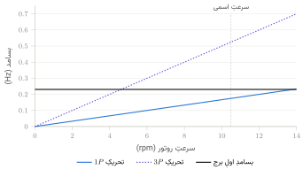
تفسیر. طرحِ اول فقط ۴ درصد بالاتر از \(1P\) است: در تندیِ اسمی برج در آستانهٔ تشدید است. طرحِ دوم میانِ \(1P\) و \(3P\) با فاصلهٔ کافی مینشیند؛ به این طرح «نرم-سفت» میگویند (شکل 4.11). اما در سرعتهای کمترِ روتور، خطِ \(3P\) از روی بسامدِ برج میگذرد؛ کنترلِ توربین آن سرعت را سریع رد میکند یا از آن پرهیز میکند. درس: طراحی تکراری است؛ نخستین پاسخ معمولاً آخرین پاسخ نیست. بسامدِ واقعی به فونداسیون و خاک هم بستگی دارد (فصلِ ۳۰).
4.2.15 صدا
صدا موجِ فشار در هواست. ترازِ توانِ صوتی \(L_W\) مشخصهٔ منبع است و ترازِ فشارِ صوتی \(L_p\) چیزی است که در یک نقطه شنیده میشود؛ هر دو به دسیبل (بخش 3.2.3). در فضای آزاد و دور از منبعِ نقطهای، توان روی سطحِ کرهای به مساحتِ \(4\pi r^{2}\) پخش میشود، پس:
\[ L_p = L_W - 20\log_{10} r - 11 \tag{4.16}\]
(با \(r\) بر حسبِ متر). هر دو برابر شدنِ فاصله شش دسیبل کم میکند. جذبِ هوا، زمین، مانعها و جهتِ باد این عدد را تغییر میدهند و ارزیابیِ رسمیِ صدا روشِ استانداردِ خودش و حدهای محلی را دارد (فصلِ ۳۳).
مثال 4.18 (صدای یک توربین در فاصله) پرسش. ترازِ فشارِ صوتیِ توربینی با ترازِ توانِ 105 dB(A) (فرضی) را در ۱۵۰ تا ۱۰۰۰ متر با گسترشِ کروی بیابید.
پاسخ.
sound power 105 dB(A) per turbine (assumed, as in chapter 3); spherical
spreading only:
150 m: Lp = 105 - 20 log10 r - 11 = 50.5 dB(A)
300 m: Lp = 105 - 20 log10 r - 11 = 44.5 dB(A)
500 m: Lp = 105 - 20 log10 r - 11 = 40.0 dB(A)
1000 m: Lp = 105 - 20 log10 r - 11 = 34.0 dB(A)
every doubling of distance: -6 dB; ground, air absorption, screening and
the governing assessment method change these numbers (chapter 33)تفسیر. در ۵۰۰ متری حدودِ 40 dB(A)، در حدِ یک اتاقِ آرام و بسیار کمتر از گفتوگوی عادی. اما ۱۲ توربین همزمان حدودِ ۱۱ دسیبل بیشتر میسازند (مثال 3.3) و شبِ آرام، که برشِ باد زیاد و صدای زمینه کم است (بخش 4.2.6)، بدترین حالت است. این سادهترین مدل است و فقط برای غربالگریِ فاصلهها بهکار میرود.
4.2.16 پیوند با ذخیرهسازی: انرژی در شکلهای مختلف
انرژی را میتوان به شکلهای گوناگون ذخیره کرد: گرانشی (\(mgh\)، تلمبهذخیره)، جنبشی (\(\tfrac12 I\omega^{2}\)، چرخطیار و روتورِ توربین)، میدانِ الکتریکی (\(\tfrac12 C V^{2}\)، خازن)، و شیمیایی (باتری: ولتاژ ضربِ بار، \(E = V\,Q\)). مقایسهٔ اینها نشان میدهد چرا باتریهای شیمیایی بر ذخیرهسازیِ چندساعتهٔ نیروگاههای تجدیدپذیر چیره شدهاند (فصلِ ۱۹).
مثال 4.19 (۴۰ مگاواتساعت به چهار زبان) پرسش. انرژیِ باتریِ سناریوی S1 (40 MWh) را به آبِ بالابرده تا ۱۰۰ متر، تعدادِ سلولِ 3.2 V و 280 Ah (فرضی)، تعدادِ روتورِ چرخان و ظرفیتِ خازنِ لازم بیان کنید.
پاسخ.
the 40 MWh battery of scenario S1 expressed in other forms of stored energy:
water lifted 100 m: m = E / (g h) = 146,839 t = 146,839 m3
cells of 3.2 V x 280 Ah = 0.896 kWh (assumed): 44,643 cells
turbine rotors at 10.5 rpm hold 32.2 MJ each: 4,470 rotors
a capacitor bank at 800 V storing 1 MWh needs C = 2E/V^2 = 11,250 F
chemical bonds pack energy densely; motion and fields store little per kgتفسیر. همین انرژی ۱۴۷ هزار مترمکعب آب در ارتفاعِ صدمتری (یک استخرِ ۱۰۰ در ۱۰۰ در ۱۵ متر) یا انرژیِ چرخشیِ چهار هزار روتورِ توربین است؛ اما در حدودِ ۴۵ هزار سلولِ باتری جا میگیرد. چگالیِ انرژیِ پیوندهای شیمیایی دلیلِ اصلیِ این تفاوت است. هر شکلِ ذخیره مزیتِ خود را دارد: خازن و چرخطیار پاسخِ بسیار سریع، تلمبهذخیره عمرِ بسیار بلند.
- انرژیِ فوتونِ 500 nm چند الکترونولت است؟
- چرا فوتونِ 1300 nm در سلولِ سیلیسیومی برق تولید نمیکند؟
- چرا مازادِ انرژیِ فوتونهای آبی سلول را گرم میکند؟
- بازتابِ مرزِ هوا و آب (\(n = 1.33\)) در تابشِ عمود چیست؟
- چرا لایهٔ ضدبازتاب یکچهارمِ طولِ موج ضخامت دارد؟
- برج با بسامدِ 0.20 Hz و روتورِ 12 rpm: آیا در خطرِ تشدید با \(1P\) است؟
- ضخیمتر کردنِ دیوارهٔ برج سفتی را بیشتر زیاد میکند یا جرم را؟ بسامد چه میشود؟
- صدای منبعی که در ۲۰۰ متری 45 dB است، در ۸۰۰ متری چقدر است؟
- چرا تلمبهذخیره برای ذخیرهٔ زیاد به حجمهای عظیمِ آب نیاز دارد؟
4.2.17 بارهای چرخشی: گریز از مرکز و چرخهٔ گرانش
شهود. جرمی که روی دایره میچرخد، برای ماندن روی دایره به نیرویی رو به مرکز نیاز دارد: \(F = m\omega^{2} r\). در قابِ چرخانِ پره، این نیرو مثلِ کششی رو به بیرون حس میشود (نیروی گریز از مرکز) و ریشهٔ پره و پیچهایش آن را تحمل میکنند. همزمان، وزنِ پره در هر دور یک بار به جلو و یک بار به عقب گشتاور میدهد: یک چرخهٔ کاملِ خستگی در هر دور، مستقل از باد.
مثال 4.20 (کششِ گریز از مرکز و گشتاورِ گرانشیِ ریشهٔ پره) پرسش. پرهٔ ۲۰ تنی و ۷۳ متریِ مثال 4.3 با جرمِ کاهشی (مرکزِ جرم در یکسومِ طول) در 10.5 rpm میچرخد. نیروی گریز از مرکز، گشتاورِ گرانشیِ ریشه و تعدادِ چرخههای گرانشی در ۲۰ سال را بیابید.
پاسخ.
one blade of 20 t, 73 m, mass tapering to zero at the tip (A-048), 10.5 rpm
centre of mass at L/3 = 24.3 m from the root
centrifugal pull m omega^2 r = 588 kN (blade weight 196 kN)
gravity moment at the root m g r = 4.77 MN m, reversing every turn
turns in 20 years of operation at rated speed: 1.10e+08
every turn is one full gravity cycle: blade roots are designed for fatigueتفسیر. کششِ گریز از مرکز سه برابرِ وزنِ پره است اما ثابت است. گشتاورِ گرانشیِ 4.8 MN·m که در هر دور علامتش عوض میشود، صد میلیون بار در عمرِ توربین تکرار میشود؛ این یکی از بارهای اصلیِ طراحیِ خستگیِ ریشهٔ پره و یاتاقانِ پره است (فصلِ ۴۲). پرهٔ بلندتر و سنگینتر این بار را با توانِ دوم و سوم طول بالا میبرد؛ از این رو کاهشِ جرمِ پره (بخش 4.4.1) فقط برای صرفهجویی در ماده نیست.
4.2.18 مدارِ مغناطیسی و جریانِ مغناطیسکننده
قیاس با مدارِ الکتریکی. شارِ مغناطیسی در هسته مانندِ جریان در مدار است، «نیروی محرکهٔ مغناطیسی» \(N i\) مانندِ ولتاژ، و رلوکتانسِ هر بخش (\(\ell/(\mu A)\)) مانندِ مقاومت. پس برای رسیدن به چگالیِ شارِ \(B\):
\[ N i = B\left(\frac{\ell_\text{fe}}{\mu_0 \mu_r} + \frac{g}{\mu_0}\right) \tag{4.17}\]
\(\ell_\text{fe}\) طولِ مسیرِ آهن، \(\mu_r\) نفوذپذیریِ نسبیِ آن و \(g\) طولِ معادلِ فاصلهٔ هوایی است. چون \(\mu_r\) فولادِ الکتریکی دهها هزار است، یک میلیمتر هوا به اندازهٔ دهها متر آهن «مقاومت» دارد.
مثال 4.21 (اثرِ درزهای هسته) پرسش. برای هستهٔ مثال 4.14 با مسیرِ ۶ متری و نفوذپذیریِ نسبیِ ۳۰ هزار (فرضی، A-063)، جریانِ مغناطیسکننده را بیدرز و با درزِ معادلِ 0.2 و 1.0 mm حساب و با جریانِ نامی مقایسه کنید.
پاسخ.
export transformer core of a_transformer: B 1.7 T, LV winding 175 turns
iron path 6 m, relative permeability 30 000 (assumed, A-063)
joint gap 0.0 mm: magnetising current peak 1.5 A = 0.11 % of rated 1010 A
joint gap 0.2 mm: magnetising current peak 3.1 A = 0.22 % of rated 1010 A
joint gap 1.0 mm: magnetising current peak 9.3 A = 0.65 % of rated 1010 A
a fraction of a millimetre of air needs as much magnetising as metres of
iron: core joints are stacked and interleaved to keep gaps tinyتفسیر. دو دهمِ میلیمتر هوا جریانِ مغناطیسکننده را دو برابر و یک میلیمتر شش برابر میکند. از این رو ورقهای هسته در گوشهها پلهای و یکدرمیان چیده میشوند و فشارِ بستنِ هسته کنترل میشود (فصلِ ۴۳). جریانِ مغناطیسکننده کوچک است اما در همهٔ ساعتها، حتی بیبار، جاری است؛ همراه با تلفاتِ هسته، تلفاتِ بیباری ترانسفورماتور را میسازد که در نیروگاهی با ساعتهای طولانیِ کمبار مهم است (فصلِ ۲۵).
4.2.19 الکتروشیمی برای ذخیرهسازی
باتری انرژی را در پیوندهای شیمیایی ذخیره میکند. در هر الکترود یک واکنشِ اکسایش-کاهش رخ میدهد و الکترونها از مدارِ بیرونی و یونها از الکترولیت جابهجا میشوند. ظرفیتِ نظری یک ماده از قانونِ فارادی میآید: هر مول از مادهٔ فعال \(n\) مول الکترون، یعنی \(nF\) کولن، میدهد. پس ظرفیتِ ویژه بر حسبِ میلیآمپرساعت بر گرم \(nF/(3.6M)\) است. ولتاژِ سلول از تفاوتِ انرژیِ دو واکنش میآید و مقاومتِ درونی باعث میشود ولتاژِ پایانه زیرِ بار کم شود و بخشی از انرژی گرما شود (\(I^{2}R\)). مرز: این کتاب شیمی و فیزیکِ ذخیره را برای فهم و طراحیِ سامانه میآموزد؛ ساختِ سلول کارِ کارخانهٔ صنعتی با کنترلهای ایمنیِ ویژه است (فصلهای ۱۹ و ۴۵).
مثال 4.22 (ظرفیتِ نظری و گرمای یک قفسهٔ باتری) پرسش. ظرفیتِ ویژهٔ نظریِ لیتیومآهنفسفات (جرمِ مولیِ 157.76 g/mol، یک الکترون) چیست؟ اگر هر سلول 0.25 mΩ مقاومتِ درونی داشته باشد و با 140 A کار کند (فرضی، A-064)، گرما در هر سلول و در کلِ باتریِ سناریوی S1 چیست؟
پاسخ.
theoretical specific capacity of LiFePO4 (one electron per formula unit):
F / (3.6 M) = 96485 / (3.6 x 157.76) = 169.9 mAh/g
a 280 Ah cell needs at least 1.65 kg of cathode material (theory only)
cell internal resistance 0.25 milliohm, current 140 A (0.5 C) (A-064):
heat I^2 R = 4.9 W per cell; for 44,643 cells 219 kW to remove
ohmic loss one way 1.09 % of the cell power; round trip about 2.2 %
doubling the current quadruples the heat: fast cycling needs more coolingتفسیر. حدودِ ۲۲۰ کیلووات گرما باید از محفظههای باتری بیرون برده شود، با سامانهٔ تهویه یا خنککنندهٔ مایع که خودش برق مصرف میکند و جزئی از تلفاتِ رفتوبرگشتِ کلِ سامانه است (فصلِ ۱۹). گرما با مجذورِ جریان بالا میرود: باتریای که برای کارِ دوساعته (نرخِ ۰٫۵) طراحی شده، اگر یکساعته کار کند چهار برابر گرما میسازد؛ و دما پیری را تند میکند (بخش 4.3.14). یکنواختیِ دما میانِ سلولها به همان اندازهٔ دمای میانگین مهم است.
4.2.20 خنککاری با هوا و اثرِ ارتفاع
گرما با جریانِ هوا. هوایی که با جریانِ جرمیِ \(\dot{m}\) از یک تجهیز میگذرد و \(\Delta T\) گرم میشود، گرمای \(P = \dot{m} c_p \Delta T\) را میبرد. جریانِ حجمی \(Q = \dot{m}/\rho\) است و توانِ فن \(Q\,\Delta p/\eta_\text{fan}\). در هوای رقیق، برای همان جرم، حجمِ بیشتری لازم است؛ و چون افتِ فشارِ کانالها با \(\rho Q^{2}\) متناسب است، توانِ فن برای همان گرما با \(1/\rho^{2}\) بالا میرود.
مثال 4.23 (اینورتر در ارتفاعِ ۱۲۰۰ متر) پرسش. اینورترِ 4.2 MW با بازدهِ 98.5 % (فرضی، A-064) را با هوایی خنک میکنیم که ۱۵ کلوین گرم شود. جریانِ هوا و توانِ فن را کنارِ دریا و در ساختگاهِ نیروگاهِ P مقایسه کنید.
پاسخ.
inverter 4.2 MW at 98.5 % efficiency: losses 64 kW at full power
air warms 15 K; 300 Pa at sea level; fan efficiency 0.6 (A-064)
sea level rho 1.20: air 3.54 m3/s, fan 1.77 kW
Plant P, 1200 m rho 1.05: air 4.04 m3/s, fan 2.31 kW
thin air: the same heat needs 1.143 x the volume and 1.31 x the fan power
manufacturers derate equipment above a stated altitude for this reasonتفسیر. ۶۴ کیلووات گرما، به اندازهٔ چند ده بخاریِ خانگی، در هر اینورتر. در ارتفاعِ ۱۲۰۰ متری ۱۴ درصد هوای بیشتر و ۳۱ درصد توانِ فنِ بیشتر لازم است. اگر فن همان باشد، تجهیز باید با توانِ کمتری کار کند: کاهشِ ظرفیت با ارتفاع در برگهٔ دادهٔ اینورترها، ترانسفورماتورها و تابلوها از همینجا میآید و باید با ارتفاع و دمای ساختگاه وارسی شود (فصلهای ۹ و ۲۴). هوای رقیق عایقِ ضعیفتری هم هست و فاصلههای عایقیِ هوا با ارتفاع اصلاح میشوند.
- نیروی گریز از مرکزِ جرمِ یک کیلوگرمی در شعاعِ یک متر با 60 rpm چیست؟
- چرا بارِ گرانشیِ پره یک چرخهٔ خستگی در هر دور است؟
- با معادلهٔ 4.17، اگر \(\mu_r\) نصف شود، جریانِ مغناطیسکننده بدونِ درز چه میشود؟
- تلفِ بیباریِ ترانسفورماتور چرا برای نیروگاهِ خورشیدی (شبها بیبار) مهم است؟
- ظرفیتِ ویژهٔ نظریِ مادهای با جرمِ مولیِ 100 g/mol و دو الکترون چیست؟
- اگر جریانِ سلول از ۱۴۰ به ۲۸۰ آمپر برسد، گرما چند برابر میشود؟
- چرا توانِ فن در هوای رقیق بیشتر از نسبتِ چگالی بالا میرود؟
4.2.21 بالابر و پسار: پره چگونه گشتاور میسازد
نظریهٔ تکانه (بخش 4.2.5) میگوید چه مقدار انرژی میتوان گرفت؛ ایرفویل میگوید چگونه. مقطعِ پره شکلی دارد که وقتی هوا با زاویهٔ حملهٔ کوچکی به آن برخورد کند، اختلافِ فشارِ دو رو نیرویی عمود بر بادِ نسبی میسازد (بالابر) و نیروی کوچکتری در امتدادِ آن (پسار):
\[ \begin{aligned} L &= \tfrac12 \rho W^{2} c\, C_L \\ D &= \tfrac12 \rho W^{2} c\, C_D \end{aligned} \tag{4.18}\]
بر واحدِ طولِ پره، با \(c\) طولِ وتر. نکتهٔ کلیدی بادِ نسبی \(W\) است: مقطعی در شعاعِ \(r\) با تندیِ \(\omega r\) در صفحهٔ چرخش حرکت میکند و باد با تندیِ \(v(1 - a)\) از روبهرو میآید؛ مقطع ترکیبِ این دو را میبیند (شکل 4.12). زاویهٔ ورود \(\phi\) میانِ بادِ نسبی و صفحهٔ چرخش است. بالابر که عمود بر \(W\) است، کمی به سمتِ حرکت خم شده: مؤلفهٔ کوچکش در صفحهٔ چرخش گشتاور و مؤلفهٔ بزرگش در امتدادِ باد رانش میسازد.
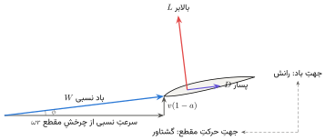
مثال 4.24 (نیروهای یک مقطع در شعاعِ ۵۰ متر) پرسش. مقطعی در شعاعِ ۵۰ متر، با وترِ ۲ متر، \(C_L = 1.0\) و \(C_D = 0.01\) (فرضی، A-069)، در بادِ 10 m/s با القای \(1/3\) و دورِ 10.5 rpm کار میکند. بادِ نسبی، زاویهٔ ورود، بالابر، پسار و نیروهای گشتاورساز و رانشی را بیابید.
پاسخ.
blade section at r = 50 m, wind 10 m/s, induction 1/3, 10.5 rpm (A-069)
axial 6.67 m/s, tangential omega r = 55.0 m/s
relative speed W = 55.4 m/s, inflow angle phi = 6.91 deg
chord 2 m, C_L 1.0, C_D 0.01: lift 3.22 kN/m, drag 32 N/m
force along the rotation (drives torque): 356 N/m
force along the wind (thrust): 3201 N/m
without drag the driving force would be 388 N/m: drag costs 8 %
the section moves 8 x faster than the air reaching the rotor: the lift
points almost along the wind, and only a small part of it turns the rotorتفسیر. زاویهٔ ورود فقط حدودِ ۷ درجه است، پس از بالابرِ 3.2 kN/m تنها 0.36 kN/m گشتاور میسازد و بقیه رانش است. پسارِ کوچک (یکصدمِ بالابر) هشت درصدِ نیروی گشتاورساز را میخورد: کیفیتِ سطحِ پره (آلودگی، سایشِ لبهٔ حمله) به همین دلیل تولید را محسوس کم میکند (فصلهای ۱۱ و ۵۲). زاویهٔ ورود از ریشه تا نوک کم میشود؛ پره پیچش دارد تا زاویهٔ حمله در همهٔ مقطعها نزدیکِ بهینه بماند. نظریهٔ کاملِ «المانِ پره و تکانه» در فصلِ ۱۱ میآید.
4.2.22 تابشِ خورشید در گذر از جو
بالای جو تابشِ خورشید روی صفحهای عمود بر پرتو حدودِ 1361 W/m² است. هر چه نور مسیرِ طولانیتری در جو طی کند، بیشتر پراکنده و جذب میشود. طولِ این مسیر نسبت به مسیرِ عمودی جرمِ هوا است، تقریباً \(1/\sin h\) برای ارتفاعِ خورشیدِ \(h\) (دقیقتر برای خورشیدِ پایین، فرمولهای اصلاحشده). تابشِ مستقیمِ عمود در آسمانِ صاف را یک برازشِ تجربیِ مشهور تقریب میزند:
\[ \text{DNI} \approx 1353 \times 0.7^{\,\text{AM}^{0.678}}\ \text{W/m}^2 \tag{4.19}\]
بخشِ پراکندهشده بهصورتِ تابشِ پخشی از همهٔ آسمان میرسد. جزئیاتِ مدلهای تابش، اندازهگیری و پایگاههای داده در فصلِ ۱۲ است.
مثال 4.25 (تابشِ مستقیم در روزِ تابستان) پرسش. جرمِ هوا و تابشِ مستقیمِ مدل را در ارتفاعهای ۹۰ تا ۱۵ درجه بیابید و منحنیِ روزانهٔ مدل را با تابشِ مستقیمِ روزِ تابستانیِ بستهٔ داده مقایسه کنید.
پاسخ.
clear-sky beam: DNI = 1353 x 0.7^(AM^0.678), AM = 1 / sin(elevation)
(Meinel's empirical fit; solar constant today about 1361 W/m2)
elevation 90 deg: air mass 1.00, model DNI 947 W/m2
elevation 60 deg: air mass 1.15, model DNI 913 W/m2
elevation 30 deg: air mass 2.00, model DNI 765 W/m2
elevation 15 deg: air mass 3.86, model DNI 555 W/m2
summer subset day (day 174), hour 12: elevation 77.8 deg;
model 942 W/m2, data pack 882 W/m2
at 1200 m the air above is thinner (p/p0 = 0.866);
a pressure-corrected air mass lowers the loss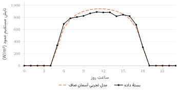
تفسیر. حتی در آسمانِ صاف، بیش از ۳۰ درصدِ تابش پیش از رسیدن به زمین در جو گم میشود و در ارتفاعِ ۱۵ درجه بیش از نیمی. شکلِ منحنیِ مدل با داده میخواند اما مدل حدودِ ۷ درصد بیشتر میدهد (شکل 4.13): بستهٔ داده جوِ واقعیتری (غبار، بخارِ آب) دارد. برای ساختگاهِ مرتفع، جرمِ هوای اصلاحشده با فشار کمتر است و مدل باید آن را ببیند. درس: مدلِ تجربی برای فهمِ شکل و مرتبهٔ بزرگی است؛ برآوردِ تولید دادهٔ اندازهگیریشده یا مدلسازیِ رسمی میخواهد.
4.2.23 اثرِ پوستی در رساناهای جریانِ متناوب
ایده. جریانِ متناوب میدانِ مغناطیسیِ متغیری درونِ خودِ رسانا میسازد که با القا (بخش 4.2.12) جریان را از مرکز به سطح میراند. جریان در لایهای به ضخامتِ تقریبیِ عمقِ پوستی جمع میشود:
\[ \delta = \sqrt{\frac{2\rho}{\omega \mu}} \tag{4.20}\]
و مقاومتِ مؤثرِ متناوب از مقاومتِ مستقیم بیشتر میشود. برای رسانای گردِ تنها، نسبتِ دقیق با توابعِ بسل به دست میآید؛ برای شعاعهای بسیار بزرگتر از \(\delta\)، تقریباً \(r/(2\delta) + 1/4\) است.
مثال 4.26 (چه زمانی رسانای بزرگتر کمک نمیکند؟) پرسش. عمقِ پوستیِ مس و آلومینیوم در 50 Hz و نسبتِ مقاومتِ متناوب به مستقیمِ رساناهای گردِ مسی با سطحهای ۲۴۰ تا ۲۰۰۰ میلیمترمربع را بیابید.
پاسخ.
skin depth sqrt(2 rho / (omega mu0)) at 50 Hz:
copper : 9.33 mm
aluminium: 11.95 mm
R_ac / R_dc of an isolated round solid conductor (Bessel solution):
copper 240 mm2 (radius 8.7 mm): 1.016
copper 630 mm2 (radius 14.2 mm): 1.101
copper 1000 mm2 (radius 17.8 mm): 1.228
copper 2000 mm2 (radius 25.2 mm): 1.612
very large conductors are split into insulated segments to use the coreتفسیر. تا حدودِ ۶۰۰ میلیمترمربع اثرِ پوستی کم است، اما رسانای ۲۰۰۰ میلیمترمربعی ۶۱ درصد مقاومتِ بیشتری از مقدارِ مستقیم دارد: افزودنِ مس به مرکز تقریباً بیفایده است. رساناهای بزرگِ کابلهای پرجریان از قطعههای عایقشده از هم ساخته میشوند و شینههای پهن بهجای میلهٔ گرد بهکار میروند. نزدیکیِ رساناهای دیگر (اثرِ مجاورت) هم توزیعِ جریان را تغییر میدهد؛ روشهای رسمیِ محاسبهٔ مقاومتِ کابل هر دو را در نظر میگیرند (فصلِ ۲۴).
4.2.24 سرعتِ ژنراتور، قطبها و بسامد
ژنراتورِ همگام با میدانی که میچرخد، در سیمپیچِ ثابت ولتاژ القا میکند. هر جفت قطب در هر دور یک چرخهٔ کامل میسازد؛ پس سرعتِ همگام (دور در دقیقه) \(n_s = 120 f/p\) است (\(p\) تعدادِ قطب). ژنراتورِ القایی کمی تندتر از سرعتِ همگام میچرخد (لغزش). سه معماریِ رایجِ توربین: (۱) ژنراتورِ تندگرد با گیربکس؛ (۲) ژنراتورِ القاییِ دوسوتغذیه که با مبدلِ کوچکِ روتور بازهٔ سرعتِ محدودی دارد؛ (۳) ژنراتورِ کُندگردِ پرقطب (مستقیم یا با گیربکسِ کوچک) با مبدلِ کامل. جزئیات در فصلهای ۸ و ۱۱.
مثال 4.27 (چند قطب برای ۵۰ هرتز؟) پرسش. سرعتِ همگامِ ماشینهای ۴، ۶ و ۸ قطب را بیابید. ژنراتورِ ۴ قطبی در 1155 rpm (مثال 4.2) چند درصد از سرعتِ همگام فاصله دارد؟ روتورِ 10.5 rpm بیگیربکس چند قطب لازم دارد؟
پاسخ.
synchronous speed n = 120 f / p at 50 Hz:
4 poles: 1500 rpm
6 poles: 1000 rpm
8 poles: 750 rpm
geared generator at 1155 rpm (a_torque) with 4 poles: slip 23 % below
synchronous
a direct-drive rotor at 10.5 rpm would need 571 poles for 50 Hz
with a full converter the generator frequency is free: the converter makes
50 Hzتفسیر. ژنراتور با ۲۳ درصد فاصله از سرعتِ همگام نمیتواند مستقیم به شبکه وصل شود؛ و ماشینِ بیگیربکس برای ۵۰ هرتز صدها قطب میخواست. پس در توربینهای امروزی، مبدلِ الکترونیکِ قدرت بسامدِ ژنراتور را از بسامدِ شبکه جدا میکند و روتور آزاد است با هر تندیِ باد در بهترین نسبتِ تندیِ نوک بچرخد (مثال 4.2). همین جدایی است که لختیِ روتور را از شبکه پنهان میکند (مثال 4.3).
4.2.25 زنجیرهٔ گرماییِ قطعهٔ قدرت
ایده. گرمای ترانزیستورِ قدرت از پیوند (محلِ تولیدِ گرما) به بدنهٔ ماژول، از بدنه به چاهکِ گرمایی و از چاهک به هوا میرود. هر گام یک مقاومتِ گرمایی است (بخش 4.2.7) و دمای پیوند:
\[ T_j = T_\text{air} + P\,(R_{jc} + R_{ch} + R_{ha}) \tag{4.21}\]
حدِ دمای پیوند را سازندهٔ قطعه تعیین میکند؛ هر کلوین حاشیه عمرِ قطعه را بلندتر میکند (بخش 4.3.14 و بخش 4.3.19).
مثال 4.28 (دمای پیوند در اتاقِ گرم و ارتفاعِ زیاد) پرسش. ماژولِ قدرتی با 2 kW تلفات و مقاومتهای گرماییِ 0.020، 0.010 و 0.015 K/W (فرضی، A-070) را با هوای کابینتِ ۴۰ و ۵۰ درجه، و با افزایشِ مقاومتِ چاهک به هوا به اندازهٔ نسبتِ حجمِ هوای لازم در ارتفاعِ ۱۲۰۰ متر (مثال 4.23) بسنجید.
پاسخ.
power module losses 2 kW; R_jc 0.020, R_ch 0.010, R_ha 0.015 K/W (A-070)
cabinet air 40 C : junction 130 C
cabinet air 50 C : junction 140 C
50 C, 1200 m (R_ha x 1.143) : junction 144 C
the heat-sink-to-air step is where altitude and dust act; a 150 C limit
leaves little margin on a hot day, so the converter derates its currentتفسیر. ده درجه هوای گرمتر ده درجه به پیوند میافزاید و ارتفاع چند درجهٔ دیگر. با حدِ ۱۵۰ درجه، حاشیه در روزِ گرمِ تابستانِ ارتفاعِ ۱۲۰۰ متری تنها چند کلوین است؛ از این رو اینورترها در دمای محیطِ بالا و ارتفاعِ زیاد جریانِ خروجی را کم میکنند (کاهشِ ظرفیت) و این باید در برآوردِ تولید دیده شود (فصلهای ۹ و ۱۵). گرد و غبار روی چاهک مقاومتِ آخر را بالا میبرد؛ تمیزکاریِ فیلتر و چاهک بخشی از نگهداریِ پیشگیرانه است (فصلِ ۵۲).
4.2.26 صدای یک مزرعهٔ کامل
ترازهای صوتیِ چند منبعِ ناهمدوس با جمعِ توانها ترکیب میشوند: \(L = 10\log_{10}\sum 10^{L_i/10}\) (بخش 3.2.3). در یک مزرعه، هر توربین فاصلهٔ خودش را تا گیرنده دارد.
مثال 4.29 (دوازده توربین و یک خانه) پرسش. دوازده توربینِ 105 dB(A) روی شبکهای ۳ در ۴ با فاصلههای ۷۵۰ و ۱۰۵۰ متر چیده شدهاند و خانهای ۸۰۰ متر غربِ ردیفِ میانی است (فرضی). ترازِ هر توربین و ترازِ کل را با گسترشِ کروی بیابید.
پاسخ.
12 turbines on a 3 x 4 grid (750 m x 1050 m, assumed); a house 800 m
west of the middle row; each 105 dB(A), spherical spreading only
nearest turbine 800 m: 35.9 dB(A); farthest 3226 m: 23.8 dB(A)
all twelve together: 40.5 dB(A)
the three nearest alone: 38.3 dB(A)
the nearest few turbines decide the level; distant ones add littleتفسیر. دوازده توربین فقط حدودِ ۵ دسیبل بیشتر از نزدیکترین توربین میسازند و سه توربینِ نزدیک بیشترِ آن را. پس برای کاهشِ صدا در یک خانه، تصمیم دربارهٔ نزدیکترین توربینها (جابهجایی یا کارِ کمصدا در شب) مؤثرترین است (فصلهای ۱۴ و ۳۳).
- چرا بیشترِ نیروی آیرودینامیکیِ پره رانش است و نه گشتاور؟
- اگر پسار دو برابر شود، نیروی گشتاورسازِ مثال 4.24 چه میشود؟
- جرمِ هوا در ارتفاعِ خورشیدِ ۴۵ درجه چیست؟
- چرا ساختگاهِ مرتفع تابشِ مستقیمِ بیشتری میگیرد؟
- عمقِ پوستیِ مس در 400 Hz چیست؟
- سرعتِ همگامِ ماشینِ ۴ قطبی در شبکهٔ 60 Hz چیست؟
- اگر مقاومتِ چاهک به هوا با گرد و غبار ۳۰ درصد زیاد شود، دمای پیوندِ مثال 4.28 در هوای ۵۰ درجه چه میشود؟
- ترازِ کلِ دو منبعِ ۳۵ و ۲۵ دسیبلی چیست؟
4.2.27 مقاومتِ ویژه: بیست و چهار مرتبهٔ بزرگی
مقاومتِ یک قطعه \(R = \rho_e L/A\) است و مقاومتِ ویژه \(\rho_e\) خاصیتِ ماده. هیچ خاصیتِ رایجِ دیگری به اندازهٔ مقاومتِ ویژه گسترده نیست: از نقره تا پلیاتیلن حدودِ ۲۴ مرتبهٔ بزرگی. فلزها الکترونهای آزادِ فراوان دارند؛ عایقها تقریباً هیچ؛ نیمهرساناها حاملهایشان را با دما و ناخالصی تنظیم میکنند (بخش 4.4.5)؛ خاک و آب با یونها رسانا میشوند و مقاومتشان به رطوبت و نمک وابسته است، که برای طراحیِ زمینِ نیروگاه حیاتی است (فصلِ ۲۶).
مثال 4.30 (نقشهٔ مقاومتِ ویژه) پرسش. مقاومتِ ویژهٔ دوازده مادهٔ رایجِ نیروگاه را (در حدِ مرتبهٔ بزرگی، نمایشی، A-075) روی محورِ لگاریتمی مقایسه کنید.
پاسخ.
resistivity, orders of magnitude only (indicative, A-075):
silver 1.6e-08 ohm m
copper 1.7e-08 ohm m
aluminium 2.8e-08 ohm m
structural steel 1.7e-07 ohm m
stainless steel 7.0e-07 ohm m
sea water 2.0e-01 ohm m
moist soil 1.0e+02 ohm m
pure silicon 2.3e+03 ohm m
dry sand 1.0e+05 ohm m
porcelain 1.0e+12 ohm m
glass 1.0e+12 ohm m
polyethylene 1.0e+16 ohm m
from silver to polyethylene: 24 orders of magnitude
no other common property spans such a range: conductors and insulators
are different worlds, and soil sits in between (earthing, chapter 26)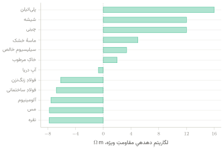
تفسیر. فولاد ده برابرِ مس و فولادِ زنگنزن چهل برابر مقاومت دارد؛ از این رو سیمِ زمین و رسانا از مس یا آلومینیوم است و فولاد فقط جایی که استحکام یا هزینه بخواهد. خاک میانِ رسانا و عایق است و بازهاش در یک ساختگاه میتواند چند مرتبه باشد (شکل 4.14): اندازهگیریِ مقاومتِ ویژهٔ خاک نخستین گامِ طراحیِ زمین است.
4.2.28 اندوکتانسِ خط و کابل از هندسه
جریانِ هر فاز میدانِ مغناطیسیای میسازد که با فازهای دیگر پیوند دارد. برای خطِ سهفازِ جابهجاشده، اندوکتانسِ هر فاز بر متر
\[ L = \frac{\mu_0}{2\pi}\,\ln\frac{D_m}{r'} \tag{4.22}\]
است: \(D_m\) میانگینِ هندسیِ فاصلهٔ فازها و \(r' = 0.7788\,r\) شعاعِ معادلِ رسانای گرد (اثرِ شارِ درونی). هر چه فازها دورتر، اندوکتانس بیشتر؛ اما فقط لگاریتمی. همین است که کابلِ فشرده اندوکتانسِ کم و ظرفیتِ زیاد دارد و خطِ هوایی برعکس.
مثال 4.31 (کابلِ سهگوش و خطِ هوایی) پرسش. راکتانسِ هر فاز در 50 Hz را برای سه کابلِ آلومینیومیِ 240 mm² در آرایشِ سهگوش (فاصلهٔ مرکزها 50 mm) و برای خطِ هواییِ ۳۳ کیلوولت با فاصلهٔ افقیِ یک متر حساب کنید و با فرضِ A-032 مقایسه کنید.
پاسخ.
per-phase inductance mu0/(2 pi) ln(GMD / 0.7788 r):
cable trefoil, centres 50 mm apart, conductor radius 8.74 mm:
L = 0.399 microhenry/m, X = 0.125 ohm/km (A-032 assumed 0.110)
overhead line, flat 1.0 m spacing (GMD 1.26 m), radius 9 mm:
L = 1.038 microhenry/m, X = 0.326 ohm/km
the overhead line has 2.6 x the reactance (wide spacing);
cables have the opposite: more capacitanceتفسیر. هندسهٔ سادهٔ کابل راکتانسی نزدیک به فرضِ فصلِ ۳ میدهد (تفاوت از شعاعِ معادلِ رسانای رشتهای و اثرِ غلاف است) و فرض را پشتیبانی میکند: یک وارسیِ مستقل از اصولِ اولیه. خطِ هوایی ۲٫۶ برابر راکتانس دارد؛ برای انتقالِ توانِ زیاد در فاصلهٔ طولانی، افتِ ولتاژِ راکتیوِ خطِ هوایی بیشتر و ظرفیتِ خازنیاش کمتر است (فصلهای ۲۳ و ۲۸).
4.2.29 بارِ باد روی خودِ برج
باد روی بدنهٔ استوانهای برج هم نیرو وارد میکند: بر هر متر از ارتفاع \(q(z)\,C_d\,D(z)\) که \(q\) با برشِ باد (بخش 4.2.6) با ارتفاع بالا میرود و قطر با ارتفاع کم میشود. نیروی کل و گشتاورِ پای برج انتگرالهای این توزیعاند (بخش 3.2.11):
\[ \begin{aligned} F &= \int_0^{H} q(z)\,C_d\,D(z)\,\mathrm{d}z \\ M &= \int_0^{H} q(z)\,C_d\,D(z)\,z\,\mathrm{d}z \end{aligned} \tag{4.23}\]
مثال 4.32 (پسارِ برج در کار و در طوفان) پرسش. برجی ۱۰۰ متری با قطرِ ۵ تا 3.5 m و ضریبِ پسارِ 0.6 (فرضی، A-076)، در بادِ 11 m/s در توپی با نمای 0.171 را با انتگرالگیریِ عددی بسنجید. با بادِ ۵۰سالهی مثال 3.54 چه میشود؟
پاسخ.
tower 100 m tapering from 5.0 to 3.5 m, C_d 0.6, power-law wind 11 m/s at hub
(A-076): drag 12 kN, base moment 0.64 MN m
rotor thrust 898 kN at 100 m gives 89.8 MN m: the tower adds 1 %
50-year wind 36.6 m/s at hub (p_gumbel), dense air: drag 152 kN, moment 8.3
MN m
in a storm the parked rotor's thrust falls and the tower's own drag matters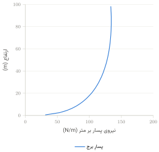
تفسیر. در کارِ عادی، پسارِ برج فقط یک درصدِ گشتاورِ رانشِ روتور است و میتوان آن را در برآوردِ اولیه نادیده گرفت. در طوفانِ ۵۰ساله، روتورِ متوقف با پرههای پرشده رانشِ بسیار کمتری دارد، اما پسارِ برج بیش از ده برابر میشود (مجذورِ تندی و هوای چگالترِ طوفان). درس: اینکه کدام بار حاکم است به حالتِ بار بستگی دارد؛ آییننامهها مجموعهای از حالتها را تعریف میکنند و طراح همهٔ آنها را میسنجد (فصلِ ۳۰).
4.2.30 جداسازیِ ارتعاش
ترانسفورماتور با دو برابرِ بسامدِ شبکه (۱۰۰ هرتز) میلرزد، چون هسته در هر نیمچرخه یک بار منقبض و منبسط میشود. اگر تجهیز روی پایههای کشسان با بسامدِ طبیعیِ \(f_n\) نصب شود، نسبتِ نیروی منتقلشده به زمین (ضریبِ انتقال) در بسامدِ تحریکِ \(f\):
\[ \begin{aligned} T &= \sqrt{\frac{1 + (2\zeta r)^{2}}{(1 - r^{2})^{2} + (2\zeta r)^{2}}} \\ r &= \frac{f}{f_n} \end{aligned} \tag{4.24}\]
جداسازی فقط وقتی کار میکند که \(r > \sqrt{2}\)؛ نزدیکِ \(r = 1\) تقویت رخ میدهد (بخش 3.3.10).
مثال 4.33 (پایههای ترانسفورماتور) پرسش. با میرایی 0.05، ضریبِ انتقالِ صدای ۱۰۰ هرتزی را برای پایههایی با بسامدِ طبیعیِ ۱۰، ۲۵ و ۸۰ هرتز بیابید.
پاسخ.
transformer hum at 100 Hz on resilient pads (damping ratio 0.05):
pad natural frequency 10 Hz: transmissibility 0.014 (-36.9 dB)
pad natural frequency 25 Hz: transmissibility 0.072 (-22.9 dB)
pad natural frequency 80 Hz: transmissibility 1.749 (+4.9 dB)
isolation works only well above the mount's natural frequency; a mount
tuned near 100 Hz would amplify the hum it was meant to stopتفسیر. پایهٔ نرمِ ۱۰ هرتزی ۹۸ درصدِ نیرو را جدا میکند؛ پایهٔ سفتِ ۸۰ هرتزی آن را تقویت میکند. پایهٔ نرمتر جابهجاییِ بیشتری زیرِ بارِ زلزله و ضربه دارد؛ انتخابِ پایه مصالحهٔ صدا و پایداری است (فصلهای ۲۵ و ۳۳).
4.2.31 گرم شدنِ گذرا و اضافهبارِ کوتاه
شینهای که در مثال 4.11 حالتِ پایایش را دیدیم، ظرفیتِ گرمایی دارد و دمایش ناگهانی عوض نمیشود. با ظرفیتِ گرمایی \(C = \rho c A\) بر متر و دفعِ گرمای \(hA\)، معادلهٔ گرما همان معادلهٔ مرتبهٔ اولِ بخش 3.3.7 است با ثابتِ زمانیِ \(\tau = C/(hA)\) (با اثرِ \(R(T)\) کمی بلندتر). پس اضافهبارِ کوتاه با دمای کمتر از حالتِ پایای همان جریان تمام میشود.
مثال 4.34 (ده دقیقه اضافهبار) پرسش. شینهٔ مثال 4.11 از حالتِ پایای 1500 A ناگهان 2500 A میبرد. ثابتِ زمانی و دما پس از ۱۰، ۳۰ و ۶۰ دقیقه را با رونگه-کوتا بیابید.
پاسخ.
copper busbar 80 x 10 mm: rho c A = 2760 J/(K m), h A = 1.8 W/(K m)
thermal time constant C / (h A) = 1533 s = 25.6 min
step from 1500 A (72.4 C) to 2500 A (steady 154.0 C), RK4:
10 min 92.1 C; 30 min 118.4 C; 60 min 138.4 C
short overloads are carried by the thermal mass; a rating for continuous
current is not a rating for a 10-minute overload, and the reverseتفسیر. ثابتِ زمانیِ حدودِ ۲۶ دقیقه یعنی ده دقیقه اضافهبار دما را فقط ۲۰ درجه بالا میبرد، در حالی که حالتِ پایای همان جریان ۸۲ درجه بالاتر است. این همان است که در مثال 4.94 گفتیم: فرضِ «پایا در هر ساعت» محافظهکارانه است. ظرفیتِ اضافهبارِ کوتاهمدتِ تجهیزات (و مدلهای گرماییِ حفاظت که آن را دنبال میکنند) بر همین فیزیک تکیه دارند (فصلهای ۲۴ تا ۲۶).
4.2.32 گرم شدنِ بیدررو در اتصالِ کوتاه
جریانِ اتصالِ کوتاه آنقدر بزرگ و کوتاه است که رسانا فرصتِ دفعِ گرما ندارد: همهٔ گرمای ژول در خودِ فلز میماند. با مقاومتِ ویژهای که با دما خطی بالا میرود (\(\rho_e \propto T + \beta\))، توازنِ انرژیِ \(c_v\,\mathrm{d}T = (I/A)^{2}\rho_e(T)\,\mathrm{d}t\) با جدا کردنِ متغیرها انتگرالپذیر است:
\[ \begin{aligned} I^{2} t &= K^{2} A^{2} \ln\frac{T_f + \beta}{T_i + \beta} \\ K &= \sqrt{\frac{c_v (20 + \beta)}{\rho_{20}}} \end{aligned} \tag{4.25}\]
\(c_v\) ظرفیتِ گرماییِ حجمی و \(\beta\) ثابتی است که شیبِ مقاومت با دما را میدهد (حدودِ ۲۳۰ کلوین برای مس و آلومینیوم). این رابطهٔ «\(I^{2}t\)» پایهٔ تعیینِ ظرفیتِ اتصالِ کوتاهِ رسانا و پوششِ کابل است.
مثال 4.35 (رسانا و پوششِ کابل در خطا) پرسش. ضریبِ \(K\) را برای آلومینیوم و مس از خواصِ فیزیکی حساب کنید. رسانای آلومینیومیِ 240 mm² با 21.9 kA به مدتِ یک ثانیه از 90 °C به چه دمایی میرسد؟ چقدر طول میکشد تا به 250 °C (حدِ فرضی) برسد؟ پوششِ مسیِ 35 mm² با 2 kA خطای زمین (فرضی، A-077) چه میشود؟
پاسخ.
no cooling during a fault: c_v dT = (I/A)^2 rho(T) dt, rho ~ (T + beta)
K = sqrt(c_v (20 + beta) / rho20): aluminium 148, copper 226 A s^0.5 per mm2
240 mm2 Al conductor, 21.9 kA for 1 s from 90 C: ends at 236 C
time to reach 250 C (assumed limit) from 90 C: 1.08 s
35 mm2 Cu screen, 2 kA earth fault for 1 s from 70 C (A-077): 90 C
the protection clearing time is part of the cable's design: a slow relay
can melt what a fast one leaves cold (chapters 24 and 26)تفسیر. ضریبهای 148 و 226 که از چگالی، گرمای ویژه و مقاومتِ ویژه به دست آمدند، همان عددهاییاند که در روشهای مهندسیِ کابل دیده میشوند: فرمولِ آییننامه از فیزیک میآید. رسانا در یک ثانیه به 236 °C میرسد و حدِ فرضیِ ۲۵۰ درجه را پس از 1.08 s رد میکند؛ پس زمانِ رفعِ خطا بخشی از طراحیِ کابل است و حفاظتِ کُند میتواند کابلی را که حفاظتِ تند سالم نگه میدارد، بسوزاند (فصلهای ۲۴ و ۲۶). جریانِ خطای زمین (که از پوشش برمیگردد) به روشِ زمین کردنِ نقطهٔ صفر بستگی دارد و در فصلِ ۲۶ محاسبه میشود.
- مقاومتِ یک متر سیمِ مسیِ 2.5 mm² چیست؟ همان از فولاد؟
- چرا مقاومتِ ویژهٔ خاک برای زمین کردنِ نیروگاه مهم است؟
- دو برابر کردنِ فاصلهٔ فازهای خطِ هوایی اندوکتانس را چقدر زیاد میکند؟
- چرا پسارِ برج در طوفان مهمتر از کار است؟
- پایهای با بسامدِ طبیعیِ ۵۰ هرتز برای صدای ۱۰۰ هرتزی مناسب است؟
- ثابتِ زمانیِ گرماییِ شینهای با دو برابرِ ضخامت (و همان عرض) چه میشود؟
- با معادلهٔ 4.25، اگر زمانِ رفعِ خطا نصف شود، \(I^{2}t\) چه میشود؟
4.2.33 تابشِ گرمایی و گرمانگاری: چرا فلزِ براق دروغ میگوید
تابشِ گرمایی. هر جسم با دمای مطلقِ \(T\) تابش میکند و طولِ موجِ قلهٔ تابشش با دما وارون است (قانونِ وین): \(\lambda_\text{max} = b/T\). خورشید در نورِ مرئی میدرخشد؛ اتصالِ ۸۰ درجه در فروسرخِ دور (حدودِ ۸ میکرومتر)، که چشم نمیبیند اما دوربینِ گرمانگار میبیند. دوربین تابشِ رسیده را میسنجد و با گسیلندگیِ تنظیمشده آن را به دما تبدیل میکند. تابشِ رسیده دو بخش دارد: آنچه خودِ سطح گسیل میکند (\(\varepsilon\sigma T^{4}\)) و آنچه از محیط بازتاب میدهد (\((1 - \varepsilon)\sigma T_\text{refl}^{4}\)). سطحِ براق گسیلندگیِ کم و بازتابِ زیاد دارد: بیشتر «آینهای» است برای اتاق تا نمایشگرِ دمای خودش.
مثال 4.36 (اتصالِ ۸۰ درجه از دیدِ دوربین) پرسش. اتصالی واقعاً در 80 °C در اتاقی 30 °C است و دوربین روی گسیلندگیِ 0.95 تنظیم شده (فرضی، A-080). اگر سطح نوارِ سیاه، مسِ اکسیدشده، آلومینیومِ مات یا مسِ براق باشد، دوربین چه دمایی نشان میدهد؟
پاسخ.
peak emission wavelength (Wien): sun 0.50 um, a 80 C joint 8.2 um (long-wave
infrared)
joint truly at 80 C in a 30 C room; camera emissivity set to 0.95 (A-080):
black tape or paint eps 0.95: camera reads 80.0 C
oxidised copper eps 0.60: camera reads 64.1 C
dull aluminium eps 0.20: camera reads 42.6 C
bright copper eps 0.05: camera reads 33.3 C
shiny metal reflects the room and hides its own heat: survey on painted or
taped spots, or set the emissivity, and record the load at the time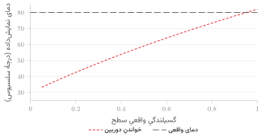
تفسیر. اتصالِ داغِ مسِ براق تقریباً همدمای اتاق دیده میشود (شکل 4.16): خطرناکترین خطای گرمانگاری، چون اتصالِ بد را «سالم» نشان میدهد. پاسخهای عملی: اندازهگیری روی نقطههای رنگشده یا نوارِ با گسیلندگیِ معلوم، تنظیمِ گسیلندگی و دمای بازتاب، مقایسهٔ فازهای همسان (اتصالِ داغتر از دو همتایش) و ثبتِ بارِ هنگامِ بازرسی (مثال 4.95). این بخشی از صلاحیتِ بازرسِ گرمانگاری است (بخش 4.10).
4.2.34 هوای رقیق و عایقِ هوایی
هوا عایقِ میانِ هادیهای تابلو، مقرهها و برقگیرهاست. ولتاژِ شکستِ یک فاصلهٔ هوایی تقریباً با چگالیِ نسبیِ هوا \(\delta = (p/p_0)(T_0/T)\) متناسب است: هوای رقیقتر یعنی مولکولهای کمتر، فاصلهٔ آزادِ بیشتر میانِ برخوردها و بهمنِ آسانترِ یونش.
مثال 4.37 (چگالیِ نسبیِ هوا در ساختگاه) پرسش. با فشار و دمای ساعتیِ بستهٔ داده، چگالیِ نسبیِ هوا را حساب کنید. ولتاژِ شکستِ یک فاصلهٔ هوایی در بدترین ساعت چقدر کمتر از کنارِ دریاست؟
پاسخ.
relative air density delta = (p / 1013.25) (293.15 / T) at the Plant P
station:
mean 0.877, lowest 0.807 (hot summer afternoon)
first order, the flashover voltage of an air gap scales with delta: about 19
% lower
equipment rated for sea level is checked, and clearances corrected, for the
site altitude by the methods of the governing standards (chapters 24 and
25)تفسیر. در بعدازظهرِ داغِ تابستان، فاصلههای هوایی حدودِ ۱۹ درصد از استقامتِ همترازِ کنارِ دریا را از دست میدهند. از این رو تجهیزاتی که برای ارتفاعِ کم آزمون شدهاند، برای ساختگاهِ ۱۲۰۰ متری با روشهای استاندارد اصلاحِ ارتفاع میشوند: فاصلههای بزرگتر یا سطحِ عایقیِ بالاتر (فصلهای ۲۴ و ۲۵). همان هوای رقیقی که انرژیِ باد (مثال 4.5) و خنککاری (مثال 4.23) را کم کرد، عایق را هم ضعیف میکند: ارتفاع یک ورودیِ طراحی است، نه یک جزئیات.
4.2.35 کابلِ هوایی در آفتاب
کابلی که در هوای آزاد زیرِ آفتاب است، علاوه بر گرمای ژولِ رسانا، تابشِ خورشید را جذب میکند: بر هر متر حدودِ \(\alpha_s G D\) وات، با \(\alpha_s\) جذبِ تابشِ خورشیدیِ غلاف، \(G\) تابش و \(D\) قطر.
مثال 4.38 (آفتاب در برابرِ تلفاتِ رسانا) پرسش. کابلی با قطرِ 50 mm و جذبِ 0.6 زیرِ تابشِ 1000 W/m² (فرضی، A-081) چقدر گرما از آفتاب میگیرد؟ با تلفاتِ ژولِ اوجِ فیدر مقایسه کنید.
پاسخ.
cable in free air, diameter 50 mm, sheath absorptance 0.6, sun 1000 W/m2
(A-081)
absorbed sunlight alpha G D = 30 W/m (projected width = diameter)
Joule loss of the feeder cable at peak current 41 W/m
the sun adds 73 % of the conductor's own heat: cables in
the sun are derated or shaded; a light-coloured sheath or a sun shield
helpsتفسیر. آفتاب نزدیک به سهچهارمِ گرمای خودِ رسانا را اضافه میکند. کابلهای DC خورشیدی که روی سازهها در آفتاباند و کابلهای روی سینی در فضای باز به همین دلیل با ضریبِ اصلاح انتخاب میشوند یا با سایهبان محافظت میشوند (فصلهای ۱۰ و ۲۴). همان آفتاب، از راهِ فرابنفش، غلافِ کابل را هم پیر میکند.
4.2.36 دوزِ فرابنفش و آزمونِ شتابیافتهٔ پلیمرها
پلیمرهای بیرونی (غلافِ کابل، بستهای پلاستیکی، پشتپوشِ ماژول، کانکتورها) با فرابنفش پیر میشوند: پیوندهای زنجیرهای میشکنند، سطح ترک و گچی میشود و استحکام و انعطاف کم میشود. دوزِ سالانه را از تابشِ ساختگاه میتوان برآورد کرد و با آزمونِ شتابیافته در محفظهای با لامپِ فرابنفش مقایسه کرد.
مثال 4.39 (یک سالِ آفتاب در محفظهٔ آزمون) پرسش. با تابشِ سالانهٔ بستهٔ داده و سهمِ فرابنفشِ ۵ درصد (فرضی، A-082)، دوزِ سالانهٔ فرابنفش چیست؟ محفظهای با 60 W/m² فرابنفش در چند ساعت یک سالِ ساختگاه را میدهد؟
پاسخ.
data pack: global horizontal irradiation 1,947 kWh/m2 per year
ultraviolet share about 5 % (assumed, A-082): 97 kWh/m2 = 350 MJ/m2 per year
a UV chamber at 60 W/m2 delivers one site-year in 1,623 h (68 days)
25 years outdoors = 4.6 years of chamber time: tests
accelerate dose but not every ageing path (heat, moisture, cycling) at
onceتفسیر. یک سالِ آفتابِ ساختگاه در حدودِ دو ماه محفظه شبیهسازی میشود. اما آزمون دوز را شتاب میدهد، نه لزوماً همهٔ سازوکارها را: گرما، رطوبت و چرخههای دمای واقعی با فرابنفش ترکیب میشوند. از این رو آزمونهای کیفیتسنجی ترکیبی از چند تنشاند و نتیجهٔ آنها «گذر از آزمون» است، نه «عمرِ تضمینشده» (فصلهای ۱۰ و ۴۰). ساختگاهی با تابشِ زیاد مانندِ نیروگاهِ P موادِ بیرونیِ مقاومتر میخواهد.
4.2.37 اصطکاک در اتصالهای لغزشبحرانی
در برخی اتصالهای پیچی (سازههای فولادیِ پست، مهاربندها)، بار با اصطکاکِ سطحهای فشردهشده منتقل میشود، نه با تماسِ بدنهٔ پیچ با دیوارهٔ سوراخ. مقاومتِ لغزش \(\mu\,n\,F_p\) است: ضریبِ اصطکاک ضربِ تعدادِ پیچ ضربِ پیشکشیدگی (برای هر صفحهٔ لغزش).
مثال 4.40 (اتصالی که نباید بلغزد) پرسش. اتصالی با هشت پیچِ M36 پیشکشیده و ضریبِ اصطکاکِ 0.35 (سطحِ آمادهشده؛ فرضی، A-083) را بسنجید. اگر سطحها رنگ شده باشند (ضریبِ 0.2) یا یکچهارمِ پیشکشیدگی رها شود چه؟
پاسخ.
slip-critical joint: 8 preloaded M36 bolts, faying-surface friction 0.35
(A-083)
slip resistance mu n F_p = 1330 kN (one friction plane)
if the surfaces are painted (friction 0.2): 760 kN
if a quarter of the preload relaxes: 997 kN
the joint relies on surface preparation and preload, both recorded at
erection; once it slips, the bolts carry the load in bearing and wear the
holesتفسیر. رنگِ اشتباه روی سطحِ تماس ۴۳ درصد از ظرفیت را میگیرد؛ آمادهسازیِ سطح بخشی از مشخصاتِ نصب است و بازرسی میشود. اگر اتصال بلغزد، پیچها در حالتِ «تکیهگاهی» کار میکنند و بارهای متناوب سوراخها را ساییده و بیضی میکنند. همان درسِ مثال 4.62: پیشکشیدگی و سطح، نه فقط خودِ پیچ، اتصال را میسازند.
- طولِ موجِ قلهٔ تابشِ جسمی در 500 °C چیست؟
- چرا مقایسهٔ سه فازِ همسان در گرمانگاری مطمئنتر از خواندنِ دمای مطلق است؟
- اگر دمای هوای ساختگاه ۴۰ درجه و فشار 870 hPa باشد، چگالیِ نسبیِ هوا چیست؟
- چرا کابلِ با غلافِ تیره در آفتاب بیشتر گرم میشود؟
- چرا گذر از آزمونِ فرابنفش «عمرِ تضمینشده» نیست؟
- مقاومتِ لغزشِ اتصالی با چهار پیچ، پیشکشیدگیِ 200 kN و ضریبِ 0.3 چیست؟
4.2.38 پایداریِ فونداسیون: وزن، شناوری و واژگونی
ایده. فونداسیونِ وزنیِ توربین با وزنِ خودش، خاکِ رویش و خودِ توربین در برابرِ گشتاورِ واژگونیِ مثال 4.1 میایستد. حولِ لبهٔ فونداسیون، گشتاورِ مقاوم \(N\,B/2\) است (\(N\) نیروی قائمِ کل و \(B\) عرضِ پایه) و ضریبِ اطمینان در برابرِ واژگونی نسبتِ آن به گشتاورِ واژگونی. اما پیش از واژگونی، مسئلهٔ ظریفتری هست: نیروی قائم با خروج از مرکزیِ \(e = M/N\) به خاک میرسد و اگر \(e\) از یکششمِ عرض بیشتر شود، بخشی از کفِ فونداسیون از خاک جدا میشود و فشارِ لبهٔ دیگر بالا میرود. آبِ زیرزمینی قانونِ ارشمیدس را وارد میکند: هر مترمکعبِ زیرِ آب ۹٫۸ کیلونیوتن شناوری دارد و از وزنِ مؤثر کم میکند.
مثال 4.41 (فونداسیون در کار و در حالتِ حدی) پرسش. فونداسیونی با ۶۰۰ مترمکعب بتن، ۸۰۰ مترمکعب خاکِ پرکننده و پایهٔ مربعیِ ۲۰ متری (فرضی، A-087) زیرِ گشتاورِ کاری (89.8 MN·m) و یک گشتاورِ حدیِ فرضی (150 MN·m)، خشک و با آبِ زیرزمینی تا نیمهٔ عمق، چه ضریبِ اطمینان و چه خروج از مرکزیای دارد؟
پاسخ.
gravity foundation: 600 m3 concrete (24 kN/m3), 800 m3 backfill (18 kN/m3),
square base 20 m (A-087); B/6 = 3.33 m
weights: concrete 14.4 MN, backfill 14.4 MN, tower and top 8.3 MN
case water FS e (m) base
operating (a_thrust) dry 4.13 2.42 fully pressed
operating (a_thrust) half depth 3.36 2.97 fully pressed
extreme (assumed) dry 2.47 4.05 part lifts
extreme (assumed) half depth 2.01 4.96 part lifts
buoyancy removes weight exactly when it is needed; beyond B/6 part of the
base lifts off: a geotechnical and structural check (chapter 30)تفسیر. در کارِ عادی کفِ فونداسیون کاملاً روی خاک فشرده است؛ در حالتِ حدی بخشی از آن جدا میشود و آبِ زیرزمینی این را بدتر میکند، چون شناوری درست وقتی وزن را میگیرد که لازم است. ضریبِ اطمینانِ واژگونی کافی به نظر میرسد، اما معیارهای واقعیِ طراحی (فشارِ مجازِ خاک، نشست، سفتیِ دورانیِ لازم برای بسامدِ برج مثال 4.17، خستگیِ بتن و میلگرد و فلنجِ مدفون) چند وارسیِ دیگرند که مهندسانِ ژئوتکنیک و سازه با بارهای سازنده انجام میدهند (فصلهای ۲۹ و ۳۰). سطحِ آبِ زیرزمینی در این تصمیمها یک ورودیِ کلیدی از بررسیهای ساختگاه است.
- ضریبِ اطمینانِ واژگونیِ فونداسیونی با نیروی قائمِ 30 MN، عرضِ 18 m و گشتاورِ 90 MN·m چیست؟
- چرا خاکِ پرکنندهٔ روی فونداسیون بخشی از طراحی است؟
- خروج از مرکزیِ بیش از \(B/6\) چه معنایی برای فشارِ خاک دارد؟
- چرا آبِ زیرزمینی در حالتِ حدی بدتر از حالتِ کاری است؟
4.3 ب. رفتارِ مواد
بخشِ الف بارها را شناخت؛ این بخش میپرسد ماده در برابرِ آنها چه میکند: کِش میآید، تسلیم میشود، خسته میشود، ترک برمیدارد، میخزد، میخورد، یا عایق بودنش را از دست میدهد. و میآموزد برگهٔ دادهٔ ماده را چگونه بخوانیم.
4.3.1 تنش، کرنش و منحنیِ کشش
تعریفها. تنش نیرو بر واحدِ سطحِ مقطع است، \(\sigma = F/A\) (پاسکال؛ در مهندسی معمولاً مگاپاسکال، یعنی نیوتن بر میلیمترمربع). کرنش تغییرِ طولِ نسبی است، \(\varepsilon = \Delta L/L\) (بیبُعد). در ناحیهٔ کشسان این دو متناسباند (قانونِ هوک):
\[ \sigma = E\,\varepsilon \tag{4.26}\]
\(E\) مدولِ کشسانی (یانگ) است: فولاد حدودِ ۲۱۰، آلومینیوم ۷۰، بتن حدودِ ۳۰ گیگاپاسکال. با برداشتنِ بار، ماده به طولِ اولش برمیگردد. کششِ طولی معمولاً با باریک شدنِ عرضی همراه است (ضریبِ پواسون، برای فلزها حدودِ ۰٫۳).
آزمونِ کشش. نمونهٔ استانداردی را آهسته میکشند و نیرو و تغییرِ طول را ثبت میکنند. منحنیِ حاصل (شکل 4.17) ویژگیهای اصلیِ ماده را میدهد: مدولِ کشسانی (شیبِ اولیه)، تنشِ تسلیم (آغازِ تغییرِ شکلِ ماندگار؛ برای فلزهایی که تسلیمِ واضح ندارند، تنشِ متناظر با کرنشِ ماندگارِ ۰٫۲ درصد)، استحکامِ کششی (بیشینهٔ منحنی) و ازدیادِ طول تا شکست (شکلپذیری). روشِ آزمونِ کششِ فلزها استانداردِ بینالمللی دارد (بخش 4.10). سختی مقاومت در برابرِ فرورفتگیِ موضعی است و آزمونِ سادهتری دارد که با استحکام همبسته است.
مثال 4.42 (منحنیِ کشش و پیچِ فلنج) پرسش. (الف) از منحنیِ کششِ ساختگیِ یک فولادِ ساختمانی (فرضی، A-056)، تنشِ تسلیمِ ۰٫۲ درصد و استحکامِ کششی را بخوانید. (ب) پیچِ M36 از ردهٔ 10.9 (تنشِ گواهِ فرضیِ 830 MPa، سطحِ تنشِ 817 mm²) تا ۷۰ درصدِ گواه پیشکشیده میشود. نیرو، ازدیادِ طول در طولِ گیرِ 200 mm و گشتاورِ لازم با ضریبِ مهره 0.15 چیست؟ اگر ضریبِ مهره 0.12 یا 0.18 باشد؟
پاسخ.
synthetic tensile curve of an S355-like steel (A-056):
E = 210 GPa; 0.2 % offset yield read from the curve: 364 MPa; maximum 507
MPa at 16 % strain
M36 bolt, grade 10.9 (assumed proof stress 830 MPa, stress area 817 mm2):
preload 70 % of proof: F = 475 kN; elongation over a 200 mm grip 0.553 mm
torque T = K F d with K = 0.15: 2.56 kN m
same torque with K = 0.12: preload 593 kN (+25 %)
same torque with K = 0.18: preload 396 kN (-17 %)
friction controls most of the torque: tension-controlled methods exist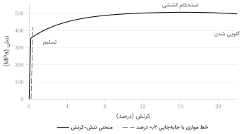
تفسیر. (الف) تنشِ ۰٫۲ درصدِ خواندهشده کمی بیشتر از عددِ اسمی است؛ گواهینامهٔ کارخانهٔ فولاد مقدارِ اندازهگیریشدهٔ همان ذوب را میدهد و طراح با حداقلِ تضمینشده کار میکند. پس از بیشینه، نمونه گلویی میشود و منحنیِ مهندسی پایین میآید. (ب) پیچ فقط نیم میلیمتر کش میآید و همین کشش است که فلنجها را به هم میفشارد. اما بیشترِ گشتاورِ آچار صرفِ غلبه بر اصطکاک میشود و پراکندگیِ اصطکاک پیشکشیدگی را از −17 تا +25 % جابهجا میکند. برای اتصالهای بحرانی (فلنجِ برج، فصلِ ۳۰) روشهای کنترلِ مستقیمِ کشش بهکار میروند.
4.3.2 بارِ محوری و خمش در برج
خمش. تیری که خم میشود در یک طرف کشیده و در طرفِ دیگر فشرده میشود و تنش از محورِ خنثی خطی بالا میرود. بیشینهٔ تنشِ خمشی:
\[ \sigma_b = \frac{M}{S}, \qquad S = \frac{I}{c} \tag{4.27}\]
\(M\) گشتاورِ خمشی، \(I\) ممانِ دومِ سطح (لختیِ سطح، \(\text{m}^4\))، \(c\) فاصلهٔ دورترین تار از محورِ خنثی و \(S\) مدولِ مقطع است. برای لولهٔ جدارنازک با شعاعِ \(r\) و ضخامتِ \(t\)، \(I \approx \pi r^{3} t\): دو برابر کردنِ قطر، سفتیِ خمشی را هشت برابر میکند در حالی که جرم فقط دو برابر میشود. به همین دلیل برجها، دکلها و لولههای گشتاور توخالی و پهناند.
مثال 4.43 (تنش در پای برج) پرسش. پای برج لولهای به قطرِ 5.0 m و ضخامتِ 40 mm است (فرضی، A-050). با گشتاورِ مثال 4.1 و وزنِ برج و ناسل، تنشهای محوری و خمشی و بیشینهٔ تنش را بیابید.
پاسخ.
tower base: steel tube D 5.0 m, t 40 mm (A-050)
A = 0.6233 m2, I = 1.917 m4, S = I / (D/2) = 0.767 m3
axial force (tower 494 t + top 350 t): 8.28 MN -> sigma_a = 13.3 MPa
bending moment 89.8 MN m (thrust example) -> sigma_b = M / S = 117.1 MPa
extreme fibres: 130.4 MPa compression, 103.8 MPa tension
against a yield strength of 355 MPa: utilisation 0.37 before safety factors
thin shells fail first by local buckling and by fatigue at welds (chapter
30)تفسیر. خمش (117 MPa) نُه برابرِ فشارِ وزن (13 MPa) است: برج یک تیرِ خمشی است، نه یک ستونِ فشاری. بهرهوری حدودِ ۰٫۳۷ پیش از ضریبهای اطمینان کم به نظر میرسد، اما سه حالتِ دیگر معمولاً حاکماند: کمانشِ موضعیِ پوستهٔ نازک، خستگی در جوشها و فلنجها (بخش 4.3.3) و بارهای حدیِ بزرگتر از این حالتِ کاری. طراحیِ رسمیِ برج با آییننامههای سازه و ضریبهای جزئیِ بار و مقاومت انجام میشود (فصلِ ۳۰).
مثال 4.44 (لولهٔ گشتاورِ ردیاب زیرِ باد) پرسش. لولهٔ گشتاورِ ردیابِ خورشیدی (قطرِ 140 mm، ضخامتِ 4 mm، دهانهٔ 7 m با دو تکیهگاهِ ساده؛ فرضی، A-057) بارِ بادِ مثال 4.6 را در طولِ عرضِ ماژول حمل میکند. گشتاورِ بیشینه \(wL^{2}/8\)، تنش و خیزِ وسطِ دهانه \(5wL^{4}/(384EI)\) را بیابید.
پاسخ.
tracker torque tube D 140 mm, t 4 mm, simply supported over 7 m (A-057)
I = 395.5 x 10^-8 m4, S = 56.5 x 10^-6 m3
wind load of a_windload spread along the tube: w = q b C_f = 1506 N/m
M_max = w L^2 / 8 = 9.23 kN m -> sigma = 163 MPa
deflection 5 w L^4 / (384 E I) = 57 mm = span / 123
overloaded: a bigger tube, shorter spans or stowing the tracker flat in
high wind are the design options (chapter 30)تفسیر. تنشِ 163 MPa و خیزِ 57 mm (یکصد و بیست و سومِ دهانه) برای تندبادِ 30 m/s بیش از حد است. سه راه: لولهٔ بزرگتر (سفتی با توانِ سومِ قطر)، دهانهٔ کوتاهتر (گشتاور با مجذورِ دهانه، خیز با توانِ چهارم)، یا افقی کردنِ ردیاب در بادِ تند که ضریبِ نیرو را بسیار کم میکند و معمولاً ارزانترین راه است. اینها تصمیمهای طراحِ سازه با بارِ آییننامهایاند.
- میلهای با سطحِ 100 mm² زیرِ نیروی 20 kN چه تنشی دارد؟
- تفاوتِ تنشِ تسلیم و استحکامِ کششی را بگویید. طراح معمولاً با کدام کار میکند؟
- چرا گواهینامهٔ فولاد مقدارِ اندازهگیریشده میدهد و طراح با حداقلِ تضمینشده کار میکند؟
- اگر ضریبِ اصطکاکِ رزوه کمتر از مقدارِ فرضشده باشد، پیچ با گشتاورِ مشخص بیشتر یا کمتر کشیده میشود؟ خطرش چیست؟
- چرا لوله در خمش بهتر از میلهٔ توپرِ هموزن است؟
- دو برابر کردنِ دهانهٔ تیر، گشتاور و خیز را چند برابر میکند؟
- چرا تنشِ وزن در پای برج بسیار کمتر از تنشِ خمشی است؟
4.3.3 خستگی: شکست زیرِ بارهای تکراری
شهود. سیمی را که با یک بار خم کردن نمیشکند، با دهها بار خم و راست کردن میتوان شکست. فلز زیرِ تنشهای تکراری بسیار کمتر از استحکامِ کششیاش، ترکهای ریزی میسازد که آرام رشد میکنند تا قطعه ناگهان بشکند. این خستگی است و مهمترین حالتِ خرابیِ توربینِ بادی است: روتور در عمرش صدها میلیون دور میزند و هر دور بارِ پرهها، محورها، جوشهای برج و پیچها را تغییر میدهد (برشِ باد، وزنِ پره، گذشتن از جلوی برج، تلاطم).
منحنیِ تنش-عمر. آزمونِ نمونهها با گسترههای تنشِ مختلف، رابطهای میانِ گسترهٔ تنش \(\Delta\sigma\) و تعدادِ چرخه تا شکست \(N\) میدهد که روی محورهای لگاریتمی تقریباً خطی است (رابطهٔ باسکوئین):
\[ N = N_\text{ref}\left(\frac{\Delta\sigma_\text{ref}}{\Delta\sigma}\right)^{m} \tag{4.28}\]
نمای \(m\) برای جزئیاتِ جوشی حدودِ ۳ است: ده درصد تنشِ بیشتر، عمر را حدودِ ۲۵ درصد کم میکند. جوشها، سوراخها و تغییرِ ناگهانیِ مقطع تمرکزِ تنش میسازند و منحنیهای پایینتری دارند؛ آییننامهها هر جزئیات را در یک ردهٔ جزئیات با منحنیِ خودش قرار میدهند.
قاعدهٔ پالمگرن-ماینر. بارِ واقعی گسترهٔ تنشِ ثابتی ندارد. اگر \(n_i\) چرخه با گسترهٔ \(\Delta\sigma_i\) رخ دهد و عمر در آن گستره \(N_i\) باشد، آسیبِ انباشته
\[ D = \sum_i \frac{n_i}{N_i} \tag{4.29}\]
است و شکست حدودِ \(D = 1\) انتظار میرود. قاعده ساده و خطی است و ترتیبِ بارها را نمیبیند، اما پایهٔ تقریباً همهٔ محاسبههای خستگیِ مهندسی است. شمارشِ چرخهها از یک سریزمانیِ تنش با روشِ جریانِ باران انجام میشود (بخش 4.8).
مثال 4.45 (آسیبِ خستگیِ یک جوشِ برج در ۲۰ سال) پرسش. جزئیاتی جوشی با گسترهٔ مرجعِ 71 MPa در دو میلیون چرخه و \(m = 3\) (فرضی، A-058) زیرِ یک بافتنگارِ ساختگیِ گسترهٔ تنش در ۲۰ سال قرار دارد. آسیبِ ماینر را حساب کنید. اگر همهٔ گسترهها ده درصد بیشتر باشند چه؟ اگر \(m = 5\) باشد؟
پاسخ.
welded detail: 71 MPa at 2 million cycles, slope m = 3 (A-058)
stress range histogram for 20 years (synthetic):
range (MPa) cycles N allowed n/N
10 2e+08 7.16e+08 0.279
20 3e+07 8.95e+07 0.335
30 6e+06 2.65e+07 0.226
40 1.5e+06 1.12e+07 0.134
50 4e+05 5.73e+06 0.070
60 1e+05 3.31e+06 0.030
70 2e+04 2.09e+06 0.010
80 4e+03 1.4e+06 0.003
Miner sum D = 1.09 (failure expected near D = 1)
all ranges 10 % higher: D x 1.1^3 = 1.45
with slope m = 5 instead of 3: D = 0.18
most damage comes from the many small and medium cycles, not the largest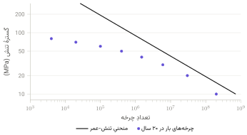
تفسیر. آسیبِ 1.09 یعنی این جزئیات در طولِ عمر نمیماند؛ طرح باید عوض شود (ضخامتِ بیشتر، جزئیاتِ بهتر، یا جوشِ سنگزده). ده درصد خطا در تنش، آسیب را 33 % بالا میبرد: دقتِ برآوردِ بار از دقتِ فرمول مهمتر است. برخلافِ شهود، بیشترِ آسیب از چرخههای کوچک و متوسطِ پرشمار میآید، نه از چند چرخهٔ بزرگ (شکل 4.18). آییننامهها معمولاً شکستگی در شیبِ منحنی و یک «حدِ قطع» برای چرخههای بسیار کوچک دارند که این مثال ندارد. نمای \(m\) نتیجه را چند برابر عوض میکند: انتخابِ ردهٔ جزئیات کارِ آییننامه است، نه سلیقه.
4.3.4 مکانیکِ شکست: ترک تا کجا مجاز است؟
ایده. هر قطعهٔ واقعی عیبهای کوچکی دارد (ترکِ جوش، حفرهٔ ریختهگری). ترک تنش را در نوکِ خود متمرکز میکند و شدتِ این تمرکز را ضریبِ شدتِ تنش \(K = Y\sigma\sqrt{\pi a}\) میسنجد (\(a\) طولِ ترک، \(Y\) ضریبِ هندسه). وقتی \(K\) به چقرمگیِ شکستِ ماده، \(K_{IC}\)، برسد، ترک ناگهان پیش میرود:
\[ a_c = \frac{1}{\pi}\left(\frac{K_{IC}}{Y\sigma}\right)^{2} \tag{4.30}\]
چقرمگی برای بسیاری از فولادها در سرما کم میشود (گذارِ نرم به ترد)؛ از این رو برای سازههای سردسیر فولادهایی با آزمونِ ضربه در دمای پایین مشخص میشوند.
مثال 4.46 (ترکِ بحرانی در زمستان و تابستان) پرسش. ترکِ لبهای (\(Y = 1.12\)) در ورقی با تنشِ 200 MPa را با چقرمگیهای ۱۰۰، ۵۰ و ۳۰ مگاپاسکالجذرِ متر (فرضی) بسنجید.
پاسخ.
edge crack in a plate, K = 1.12 sigma sqrt(pi a):
K_IC 100 MPa sqrt(m), sigma 200 MPa: critical crack 63.4 mm
K_IC 50 MPa sqrt(m), sigma 200 MPa: critical crack 15.9 mm
K_IC 30 MPa sqrt(m), sigma 200 MPa: critical crack 5.7 mm
toughness falls in the cold for many steels: the same crack can be safe in
summer and critical in winter (impact-tested grades, chapter 30)تفسیر. کاهشِ چقرمگی به یکسوم، ترکِ مجاز را یازده برابر کوچک میکند (مجذور). ترکِ ششمیلیمتریای که با بازرسیِ چشمی دیده نمیشود، در فولادی با چقرمگیِ پایین میتواند بحرانی باشد. همین است که بازرسیِ غیرمخرب و احتمالِ آشکارسازیِ آن (بخش 4.5.5) با مکانیکِ شکست گره میخورد: فاصلهٔ بازرسی باید از زمانِ رشدِ ترک از «آشکارپذیر» تا «بحرانی» کمتر باشد.
4.3.5 خزش و رهایشِ تنش
خزش تغییرِ شکلِ آهسته و ماندگار زیرِ بارِ ثابت است که با دما بسیار تند میشود؛ در فلزهای معمولی در دماهای بالا و در پلیمرها و آلومینیوم حتی در دمای نزدیکِ محیط مهم است. رهایشِ تنش روی دیگرِ همین پدیده است: پیچی که با کششِ ثابت بسته شده، با خزیدنِ مادههای زیرش کمکم نیروی فشارش را از دست میدهد. آهنگِ فرایندهای گرمایی معمولاً از رابطهٔ آرنیوس پیروی میکند؛ ضریبِ تندتر شدن میانِ دو دمای مطلقِ \(T_1\) و \(T_2\)، با انرژیِ فعالسازی \(E_a\) و ثابتِ گازها \(R\):
\[ \frac{k(T_2)}{k(T_1)} = \exp\!\left[\frac{E_a}{R}\left(\frac{1}{T_1} - \frac{1}{T_2}\right)\right] \tag{4.31}\]
مثال 4.47 (اتصالِ پیچیِ آلومینیومی که شل میشود) پرسش. پیشکشیدگیِ یک کابلشوی آلومینیومیِ پیچی را با مدلِ \(F = F_0 e^{-t/\tau}\) و ثابتِ زمانیِ ۲۰ سال در 40 °C و انرژیِ فعالسازیِ 70 kJ/mol (همه فرضی، A-058) در دماهای ۴۰، ۶۰ و ۹۰ درجه بسنجید.
پاسخ.
relaxation of a bolted aluminium lug, F(t) = F0 exp(-t / tau) (A-058):
40 C: tau = 20.00 years; preload after 5 years 77.9 %
60 C: tau = 3.98 years; preload after 5 years 28.5 %
90 C: tau = 0.49 years; preload after 5 years 0.0 %
a joint that runs hot loses its clamping force fastest: heat feeds backتفسیر. همان اتصال در ۶۰ درجه پنج برابر و در ۹۰ درجه چهل برابر تندتر شل میشود. اتصالی که به هر دلیل (مقاومتِ تماسِ زیاد، جریانِ زیاد) گرم کار کند، نیروی فشارش را زودتر از دست میدهد، مقاومتِ تماسش بیشتر میشود و گرمتر میشود: یک بازخوردِ مثبت که در مثال 4.95 کامل مدل میشود. واشرهای فنری، کابلشوهای دوفلزی، گشتاورِ درست و بازرسیِ گرمانگاری پاسخهای مهندسیِ این پدیدهاند (فصلهای ۲۴ و ۵۲).
- چرا قطعهای که زیرِ بارِ استاتیکی سالم است، زیرِ بارِ تکراری میشکند؟
- با \(m = 3\)، نصف کردنِ گسترهٔ تنش عمر را چند برابر میکند؟
- آسیبِ ماینرِ ۱۰۰ هزار چرخه در گسترهای با عمرِ یک میلیون چرخه چیست؟
- چرا جوشها نقطههای ضعیفِ خستگیاند؟
- در معادلهٔ 4.30، اگر تنش نصف شود، ترکِ بحرانی چند برابر میشود؟
- گذارِ نرم به ترد چیست و چرا برای ساختگاهِ سردسیر مهم است؟
- تفاوتِ خزش و رهایشِ تنش را با مثالِ پیچ توضیح دهید.
- اگر \(E_a\) بزرگتر باشد، حساسیتِ فرایند به دما بیشتر است یا کمتر؟
4.3.6 خوردگی: الکتروشیمیِ زنگ
شهود. خوردگیِ فلز یک پیلِ الکتروشیمیایی است: در آند فلز اکسید میشود و به یون تبدیل میشود (آهن به یونِ آهن، با دادنِ الکترون)، در کاتد همان الکترونها اکسیژن و آبِ محیط را کاهش میدهند، و الکترولیت (لایهٔ نازکِ رطوبت، خاکِ مرطوب، آبِ نمک) مدار را کامل میکند. بدونِ هر یک از این سه، خوردگی متوقف میشود: همهٔ روشهای حفاظت یکی از آنها را قطع میکنند (پوشش، فلزِ فداشونده، حفاظتِ کاتدی، خشک نگه داشتن).
قانونِ فارادی. چون خوردگی جریانِ الکتریکی است، آهنگِ از دست رفتنِ فلز با چگالیِ جریانِ خوردگی \(i\) متناسب است:
\[ \dot{x} = \frac{i\,M}{n\,F\,\rho} \tag{4.32}\]
\(M\) جرمِ مولی، \(n\) تعدادِ الکترون در هر واکنش، \(F = 96\,485\ \text{C/mol}\) ثابتِ فارادی و \(\rho\) چگالیِ فلز است.
گالوانیزه کردن. پوششِ روی روی فولاد دو کار میکند: سدِ فیزیکی است، و چون روی «فعالتر» از آهن است، اگر پوشش خراش بردارد، روی بهجای فولاد فدا میشود (حفاظتِ کاتدی). عمرِ پوشش تقریباً ضخامتِ آن تقسیم بر آهنگِ خوردگیِ روی در آن محیط است. آهنگِ خوردگی به خورندگیِ جو بستگی دارد: رطوبت، آلایندههای گوگردی و نمکِ هوا. استانداردِ بینالمللیِ ردهبندیِ خورندگیِ جو و استانداردِ پوششهای گالوانیزهٔ گرم در بخش 4.10 معرفی شدهاند؛ عددهای این مثال فرضیاند و جای آنها را نمیگیرند.
خوردگیِ گالوانیک. دو فلزِ متفاوت در تماس و در یک الکترولیت، پیل میسازند و فلزِ فعالتر (آند) تندتر میخورد. آلومینیوم کنارِ مس، و فولادِ ساده کنارِ فولادِ زنگنزن نمونههای رایجاند. نسبتِ سطح بسیار مهم است: جریانِ کاتدی که روی سطحِ بزرگِ کاتد جمع میشود، از سطحِ آند میگذرد؛ آندِ کوچک کنارِ کاتدِ بزرگ بهسرعت میخورد.
مثال 4.48 (عمرِ پوششِ پایهٔ سازهٔ خورشیدی) پرسش. (الف) با قانونِ فارادی، چگالیِ جریانِ 0.1 A/m² چند میکرومتر در سال از روی، فولاد و آلومینیوم میخورد؟ (ب) پوششِ گالوانیزهٔ 85 µm با آهنگهای فرضیِ 0.7، 2.0 و 4.0 µm/yr چند سال دوام دارد (فرضی، A-058)؟ (پ) نسبتِ سطح چه اثری دارد؟
پاسخ.
Faraday's law: thickness loss = i M t / (n F rho)
0.1 A/m2 (10 microamp/cm2): zinc 149.7, steel 116.1, aluminium 108.9
micrometre/yr
hot-dip galvanised coating 85 micrometre (A-058); zinc loss rates assumed:
dry inland 0.7 um/yr -> about 121 years to the steel
industrial 2.0 um/yr -> about 42 years to the steel
coastal 4.0 um/yr -> about 21 years to the steel
the real rates come from measured corrosivity of the site (chapter 29)
galvanic couple: the cathodic current is collected by the anode area,
so the anode current density scales with the cathode/anode area ratio:
ratio 0.1 -> x 0.1; ratio 1 -> x 1; ratio 10 -> x 10 (small anode, large
cathode is the dangerous case: a steel bolt in a copper plate)تفسیر. چگالیِ جریانِ بسیار کوچکی (ده میکروآمپر بر سانتیمترمربع) سالانه بیش از یکدهم میلیمتر فولاد میخورد. عمرِ پوشش از بیش از صد سال تا حدودِ بیست سال تغییر میکند؛ پس اندازهگیریِ خورندگیِ ساختگاه (فصلِ ۲۹) و انتخابِ ضخامتِ پوشش متناسب با آن از تصمیمهای کلیدیِ سازهٔ خورشیدی است. پایهای که در خاک کوبیده میشود، علاوه بر جو با خاک هم درگیر است و خورندگیِ خاک (رطوبت، کلرید، مقاومتِ ویژه) جداگانه سنجیده میشود. پیچِ فولادی در صفحهٔ مسی (آندِ کوچک، کاتدِ بزرگ) ترکیبی است که باید از آن پرهیز کرد؛ عکسِ آن بیخطرتر است.
- سه جزءِ لازم برای خوردگی را نام ببرید و برای هر کدام یک روشِ حفاظت بگویید.
- چرا خراشِ کوچک در پوششِ گالوانیزه به فولادِ زیرش آسیب نمیزند؟
- با معادلهٔ 4.32، اگر چگالیِ جریان دو برابر شود، عمرِ پوشش چه میشود؟
- کابلشوی آلومینیومی روی شینهٔ مسی: کدام آند است و چه باید کرد؟
- چرا آندِ کوچک کنارِ کاتدِ بزرگ خطرناکتر از عکسِ آن است؟
- چه دادهای برای تعیینِ آهنگِ خوردگیِ یک ساختگاه لازم است؟
4.3.7 ویژگیهای گرمایی و ناسازگاریِ انبساط
ویژگیهای گرمایی هر ماده سه عددِ اصلیاند: رسانندگیِ گرمایی \(k\) (چقدر خوب گرما را میبرد)، ظرفیتِ گرماییِ ویژه \(c\) (چقدر گرما ذخیره میکند) و ضریبِ انبساطِ \(\alpha\) (چقدر با دما بزرگ میشود). وقتی دو مادهٔ با \(\alpha\) متفاوت به هم چسبیده باشند (لحیم روی سلول، قابِ آلومینیومی روی شیشه، رسانای مسی در عایقِ پلیمری)، هر تغییرِ دما میانشان کرنشِ ناسازگاری \(\Delta\alpha\,\Delta T\) میسازد. اگر اتصال آن را نتواند جذب کند، تنشی تا \(E\,\Delta\alpha\,\Delta T\) پدید میآید و با هر چرخهٔ دما تکرار میشود: خستگیِ گرمایی.
مثال 4.49 (نوارِ مسی روی سلولِ سیلیسیومی) پرسش. نوارِ اتصالِ مسی (\(\alpha = 17 \times 10^{-6}\)) روی سلولِ سیلیسیومی (\(\alpha = 2.6 \times 10^{-6}\)) لحیم شده است و ماژول میانِ −40 و +60 °C چرخه میزند. کرنش و تنشِ ناسازگاری (مسِ کاملاً مهار با \(E = 110\ \text{GPa}\)) چیست؟
پاسخ.
copper ribbon soldered to a silicon cell, cycling -40 .. +60 C (100 K):
mismatch strain (17 - 2.6) e-6 x 100 = 1.44 x 10^-3
fully restrained copper: E d_alpha dT = 158 MPa, above the yield of annealed
copper
each cycle bends the joint plastically: thermal-cycling tests target thisتفسیر. تنشِ حاصل از استحکامِ تسلیمِ مسِ آنیلشده بیشتر است؛ پس در هر چرخه اتصال کمی تغییرِ شکلِ پلاستیک میدهد و پس از چند صد یا هزار چرخه ممکن است ترک بخورد. آزمونهای چرخهٔ گرماییِ کیفیتسنجیِ ماژول دقیقاً همین را میآزمایند (فصلهای ۱۰ و ۴۱) و طراحی با نوارهای نرم، شکلِ موجدار یا لحیمِ مناسب آن را کم میکند.
4.3.8 ویژگیهای الکتریکی و دیالکتریک
رسانندگی. مقاومتِ ویژهٔ مسِ خالص حدودِ \(1.72 \times 10^{-8}\) و آلومینیوم حدودِ \(2.82 \times 10^{-8}\) اهممتر در 20 °C است؛ ناخالصی و کارِ سرد آن را کمی بالا میبرند. عایقها با سه عدد توصیف میشوند: ضریبِ دیالکتریک \(\varepsilon_r\) (ظرفیت)، استقامتِ دیالکتریک (میدانِ شکست) و ضریبِ تلفات \(\tan\delta\) (کسری از انرژیِ میدان که در هر چرخه گرما میشود). تلفاتِ دیالکتریکِ هر فاز:
\[ P_\text{d} = \omega C U_0^{2}\tan\delta \tag{4.33}\]
برخلافِ تلفاتِ رسانا که به جریان بستگی دارد، این تلفات به ولتاژ بستگی دارد و حتی در بیباری هم هست.
مثال 4.50 (تلفاتِ دیالکتریکِ کابلها) پرسش. با ظرفیتِ مثال 4.12 و \(\tan\delta = 4 \times 10^{-4}\) (فرضی)، تلفاتِ دیالکتریکِ کابلِ ۳۳ کیلوولت و کابلی با همان هندسه در ۱۳۲ کیلوولت را با تلفاتِ رسانای فیدر مقایسه کنید.
پاسخ.
dielectric loss per phase W = omega C U0^2 tan(delta), tan(delta) = 4e-4
(A-052):
33 kV cable of a_coax: 9.9 W/km per phase, 30 W/km for three
same geometry at 132 kV: 159 W/km per phase (U0^2: 16 x)
conductor loss of the feeder at peak was 614 kW over 5 km = 123 kW/km
dielectric loss matters at high voltage and when tan(delta) grows with
ageingتفسیر. در ۳۳ کیلوولت تلفاتِ دیالکتریک چهار هزار برابر کمتر از تلفاتِ رسانا در اوجِ بار است و نادیده گرفتنش موجه است. اما با مجذورِ ولتاژ رشد میکند و در ولتاژهای بالاتر، و وقتی عایق با پیری یا رطوبت \(\tan\delta\) بیشتری میگیرد، مهم میشود. اندازهگیریِ \(\tan\delta\) یکی از آزمونهای تشخیصِ وضعیتِ کابل و ترانسفورماتور است (فصلِ ۵۲).
4.3.9 خواندنِ برگهٔ دادهٔ ماده
برگهٔ دادهٔ ماده مهمترین سندِ ورودیِ طراحِ ماده است و دامهای تکراری دارد:
- مقدارِ «نوعی» با «حداقل» یکی نیست. طراحی با حداقلِ تضمینشده یا مقدارِ آماریِ مشخص (مثلاً با احتمالِ ۹۵ درصد) انجام میشود؛ مقدارِ نوعی برای مقایسه است.
- شرایطِ آزمون جزئی از عدد است: دما، رطوبت، آهنگِ بارگذاری، جهتِ نمونه (در کامپوزیت و ورقِ نوردشده، خواص در جهتهای مختلف فرق دارد)، ضخامت و روشِ آزمون. عددی بیروشِ آزمون، عدد نیست.
- یکاها: برگههای قدیمی یا غیرِمتریک یکاهای دیگری دارند؛ تبدیل را با کد و با نگهداشتنِ یکا انجام دهید (فصلِ ۲).
- پیری و محیط: پلیمرها زیرِ فرابنفش، گرما و رطوبت عوض میشوند؛ عددِ برگه معمولاً مالِ مادهٔ تازه است.
- منبع و وضعیت: ادعای سازنده، گواهیِ آزمایشگاهِ مستقل و گواهینامهٔ ذوب یا محمولهٔ مشخص، سه سطحِ متفاوتِ شاهدند (فصلهای ۲ و ۴۰).
مثال 4.51 (چند دامِ یکا) پرسش. استقامتِ دیالکتریکِ 500 V/mil، استحکامِ کششیِ 3600 psi، رسانندگیِ گرماییِ 0.2 BTU/(h·ft·°F) و مقاومتِ حجمیِ \(10^{16}\ \Omega\cdot\text{cm}\) را به یکاهای SI تبدیل کنید.
پاسخ.
unit traps on material data sheets:
dielectric strength 500 V/mil = 19.7 kV/mm
tensile strength 3600 psi = 24.8 MPa
thermal conductivity 0.2 BTU/(h ft F) = 0.346 W/(m K)
volume resistivity 1e16 ohm cm = 1e+14 ohm m
'typical' is not 'minimum'; values hold at the stated temperature and test
methodتفسیر. «میل» یک هزارم اینچ است، نه میلیمتر؛ اشتباه گرفتنش عدد را ۲۵ برابر جابهجا میکند. استحکامِ 25 MPa برای یک پلیمر معقول است و برای فولاد بیمعنا؛ وارسیِ معقول بودن با شناختِ مرتبهٔ بزرگیِ خواصِ هر رده (بخش 4.4.1) نخستین سدِ خطاست.
- کرنشِ ناسازگاریِ قابِ آلومینیومی (\(23 \times 10^{-6}\)) روی شیشه (\(9 \times 10^{-6}\)) در ۸۰ کلوین چیست؟
- چرا خستگیِ گرمایی با تعدادِ چرخههای دما، و نه با دمای بیشینه، سنجیده میشود؟
- تلفاتِ دیالکتریک با ولتاژ چگونه و تلفاتِ رسانا با جریان چگونه تغییر میکنند؟
- «مقدارِ نوعی» در برگهٔ داده چه معنایی دارد و چرا برای طراحی کافی نیست؟
- چرا خواصِ یک ورقِ نوردشده یا کامپوزیت به جهتِ نمونه بستگی دارد؟
- سه سطحِ شاهد برای یک خاصیتِ ماده را از ضعیف به قوی مرتب کنید.
4.3.10 تنشِ ترکیبی: کشش و پیچش در پیچ
وقتی چند تنش با هماند. قطعهها معمولاً همزمان کشش، خمش و پیچش دارند. برای فلزهای نرم، معیارِ فون میزس همهٔ آنها را به یک تنشِ معادل تبدیل میکند که با تنشِ تسلیم مقایسه میشود؛ برای تنشِ عمودیِ \(\sigma\) همراه با تنشِ برشیِ \(\tau\):
\[ \sigma_\text{eq} = \sqrt{\sigma^{2} + 3\tau^{2}} \tag{4.34}\]
پیچ هنگامِ سفت شدن دقیقاً چنین حالتی دارد: کشش از پیشکشیدگی و پیچش از اصطکاکِ رزوه. بخشی از گشتاورِ آچار که در رزوه میماند، بدنهٔ پیچ را میپیچاند؛ پس پیچ پیش از آنکه به پیشکشیدگیِ هدف برسد، تنشِ معادلِ بیشتری را تجربه میکند.
مثال 4.52 (چرا پیشکشیدگی را تا تنشِ گواه نمیبریم) پرسش. پیچِ M36 ردهٔ 10.9 با پیشکشیدگیِ 475 kN (مثال 4.42) و ضریبِ اصطکاکِ رزوهٔ 0.12 را در نظر بگیرید. گشتاورِ رزوه را با تقریبِ رایجِ \(T_\text{th} \approx F(0.16P + 0.58\mu d_2)\) (\(P\) گام و \(d_2\) قطرِ میانیِ رزوه)، تنشِ پیچشی و تنشِ معادل را بیابید.
پاسخ.
M36 grade 10.9 bolt at 475 kN preload (b_stress), thread friction 0.12:
tensile stress F / A_s = 581 MPa
thread torque F (0.16 P + 0.58 mu d2) = 1408 N m (common approximation)
torsional stress 16 T / (pi d_s^3) = 214 MPa during tightening
von Mises sqrt(s^2 + 3 t^2) = 689 MPa = 83% of the proof stress
the twist adds about a fifth to the stress while tightening: preload targets
leave room for it, and part of the twist relaxes afterwardsتفسیر. پیچش تنشِ معادل را حدودِ ۱۹ درصد بالا میبرد: پیچی که ۷۰ درصدِ گواه کشیده شده، هنگامِ سفت شدن به ۸۳ درصد میرسد. اگر اصطکاک بیشتر یا گشتاور بیشتر باشد، پیچ ممکن است هنگامِ نصب تسلیم شود. پس هدفِ پیشکشیدگی با حاشیهای برای پیچش انتخاب میشود و روشِ سفتکاری (گشتاور، زاویه، کششدهندهٔ هیدرولیکی) بخشی از طراحیِ اتصال است (فصلِ ۳۰).
4.3.11 کمانش: وقتی ستونِ باریک کج میشود
شهود. خطکشِ پلاستیکی را از دو سر فشار دهید: پیش از آنکه ماده آسیب ببیند، ناگهان خم میشود. این کمانش است: ناپایداریِ هندسی، نه شکستِ ماده. بارِ بحرانیِ ستونِ کشسانِ ایدهآل (اویلر):
\[ P_\text{cr} = \frac{\pi^{2} E I}{(K L)^{2}} \tag{4.35}\]
\(K\) ضریبِ طولِ مؤثر به تکیهگاهها بستگی دارد (دو سر مفصلی ۱، یک سر گیردار و یک سر آزاد ۲). بارِ بحرانی با مجذورِ طول کم میشود و به استحکامِ ماده بستگی ندارد، فقط به سفتی و شکل. ستونهای واقعی کجی و تنشِ پسماند دارند و آییننامهها منحنیهایی پایینتر از اویلر بهکار میبرند.
مثال 4.53 (پایهٔ ستبر و مهاربندِ باریک) پرسش. بارِ کمانشِ پایهٔ لولهایِ ردیاب (لولهٔ ۱۵۰ در ۵ میلیمتر، ۲ متر طرّه) و یک نبشیِ مهاربندِ ۵۰ در ۵۰ در ۵ با طولهای ۱ تا ۳ متر را با بارِ تسلیمِ مقطع مقایسه کنید.
پاسخ.
Euler load pi^2 E I / (K L)^2 (ideal elastic column):
tracker post, tube 150 x 5 mm, 2 m free cantilever (K = 2): 776 kN
angle brace 50 x 50 x 5, pinned, 1 m: 95.3 kN (yield load 170 kN)
angle brace 50 x 50 x 5, pinned, 2 m: 23.8 kN (yield load 170 kN)
angle brace 50 x 50 x 5, pinned, 3 m: 10.6 kN (yield load 170 kN)
short stocky parts yield first; long slender ones buckle long before
real columns have imperfections: design curves sit below Euler (chapter 30)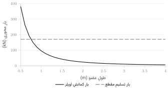
تفسیر. پایهٔ لولهای کوتاه و ستبر است و کمانش برایش مطرح نیست. اما نبشیِ سهمتری در یکشانزدهمِ بارِ تسلیمش کمانش میکند (شکل 4.19): در سازههای فلزیِ پست و سازهٔ خورشیدی، مهاربندهای فشاری اغلب با کمانش طراحی میشوند، نه با استحکام. فولادِ مقاومتر اینجا کمکی نمیکند؛ مقطعِ بزرگتر یا طولِ کوتاهتر (مهارِ میانی) کمک میکند.
4.3.12 کامپوزیتها: الیاف و زمینه
ایده. الیافِ شیشه یا کربن بسیار سفت و مستحکماند اما بهتنهایی شکل نمیگیرند؛ رزینِ پلیمری (زمینه) آنها را کنارِ هم نگه میدارد و بار را میانشان پخش میکند. در امتدادِ الیاف، الیاف و رزین موازی کار میکنند و مدول میانگینِ وزندار است؛ عمود بر الیاف، سری کار میکنند و رزینِ نرم حاکم است:
\[ \begin{aligned} E_\parallel &= V_f E_f + (1 - V_f) E_m \\ \frac{1}{E_\perp} &= \frac{V_f}{E_f} + \frac{1 - V_f}{E_m} \end{aligned} \tag{4.36}\]
\(V_f\) کسرِ حجمیِ الیاف است. این «قاعدهٔ آمیزهها» مدولِ طولی را خوب و مدولِ عرضی را تقریبی پیشبینی میکند.
مثال 4.54 (مدولِ لایهٔ شیشه و کربن) پرسش. با مدولِ الیافِ شیشه 72 GPa، کربن 230 GPa و رزین 3.2 GPa و کسرِ حجمیِ ۵۵ درصد (فرضی)، مدولِ طولی، عرضی و چگالی را بیابید و با جدولِ مثال 4.65 مقایسه کنید.
پاسخ.
unidirectional laminate, rule of mixtures (fibre and resin values assumed):
glass V_f 0.55: E along 41.0 GPa, across 6.7 GPa, density 1920 kg/m3
carbon V_f 0.55: E along 127.9 GPa, across 7.0 GPa, density 1508 kg/m3
stiff along the fibres, weak across: plies run in several directions
where loads demand it; voids and wrinkles cut the resin-dominated values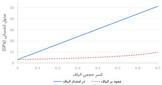
تفسیر. عددهای طولی با مقدارهای نمایشیِ جدولِ شاخصها میخوانند (41 و 128 GPa)، اما مدولِ عرضی شش برابر کمتر است (شکل 4.20). پس پره از لایههایی با جهتهای مختلف ساخته میشود: لایههای یکجهته در تیرِ اصلی برای خمش، لایههای مورب در پوسته برای پیچش و برش. حفرهها، چینها و پختِ ناقص خواصی را که به رزین وابستهاند (عرضی، برشی، فشاری) بیش از همه کم میکنند؛ بازرسیِ پره دنبالِ همینهاست (فصلِ ۴۲).
4.3.13 سختی: آزمونِ سریع و همبستگی با استحکام
سختی مقاومت در برابرِ فرورفتگی است: ساچمه یا هرمی را با نیروی مشخص در سطح فرو میبرند و اندازهٔ اثر را میسنجند. آزمون سریع، ارزان و تقریباً غیرمخرب است و برای فولادها با استحکامِ کششی همبستگیِ تقریبی دارد. سختی برای وارسیِ عملیاتِ حرارتی، شناساییِ موادِ مشکوک، و بازرسیِ جوش (ناحیهٔ بیش از حد سخت در کنارِ جوش خطرِ ترک دارد) بهکار میرود.
مثال 4.55 (استحکام از روی سختی) پرسش. با رابطهٔ تقریبیِ «استحکامِ کششی بر حسبِ مگاپاسکال حدودِ \(3.45\) برابرِ سختیِ برینل» برای فولادها، استحکامِ متناظر با سختیهای ۱۵۰، ۱۸۰ و ۳۰۰ را برآورد کنید.
پاسخ.
hardness as a screening check (steels; UTS ~ 3.45 HB MPa, approximate):
HB 150: tensile strength roughly 518 MPa
HB 180: tensile strength roughly 621 MPa
HB 300: tensile strength roughly 1035 MPa
a quick check on a flange or bolt; the certificate's tensile test decidesتفسیر. اگر گواهینامهٔ یک فلنج استحکامِ ۵۰۰ مگاپاسکال بگوید و سختیسنجیِ میدانی ۳۰۰ برینل بدهد، چیزی درست نیست: یا ماده عوض شده، یا عملیاتِ حرارتی متفاوت بوده است. سختی یک آزمونِ غربالگری است؛ تصمیم با آزمونِ کششِ استاندارد (بخش 4.10) و ردیابیِ ماده است.
4.3.14 پیریِ عایقها: قاعدهٔ آرنیوس در عمر
ایده. عایقهای پلیمری و کاغذی با واکنشهای شیمیاییِ آهسته پیر میشوند و آهنگِ این واکنشها از آرنیوس (معادلهٔ 4.31) پیروی میکند. پس هر ساعت کار در دمای \(T\) به اندازهٔ چند ساعت در دمای مرجع عایق را پیر میکند:
\[ h_\text{eq} = \exp\!\left[\frac{E_a}{R}\left(\frac{1}{T_\text{ref}} - \frac{1}{T}\right)\right] \tag{4.37}\]
و جمعِ این ساعتها در طولِ سال، عمرِ مصرفشده است. نتیجهٔ مشهور: نزدیکِ دمای کار، هر چند کلوین گرمای بیشتر عمر را نصف میکند. مدلهای رسمیِ پیریِ ترانسفورماتور و کابل همین ساختار را با پارامترهای استاندارد دارند (فصلهای ۲۴ و ۲۵).
مثال 4.56 (عمری که شینه در یک سال مصرف میکند) پرسش. با انرژیِ فعالسازیِ 100 kJ/mol و دمای مرجعِ 90 °C (فرضی، A-065)، فاصلهٔ دو برابر شدنِ آهنگ را بیابید. با دماهای ساعتیِ مثال 4.94، عمرِ معادلِ مصرفشدهٔ عایقِ شینههای تک و دوتایی در یک سال و سهمِ صد ساعتِ داغتر را حساب کنید.
پاسخ.
insulation ageing, Arrhenius with Ea = 100 kJ/mol, reference 90 C (A-065):
near 90 C the rate doubles every 7.8 K
Cu 80 x 10 : 289 equivalent hours at 90 C per year (hottest 100 h:
47 % of it)
Cu 2 x (80 x 10) : 44 equivalent hours at 90 C per year (hottest 100 h:
10 % of it)
a few hot hours use most of the life: ageing follows the peaks, not the meanتفسیر. هر حدودِ ۸ کلوین، آهنگِ پیری دو برابر میشود. شینهٔ تک در یک سال معادلِ ۲۸۹ ساعت کار در ۹۰ درجه پیر میشود و نیمی از آن در صد ساعتِ داغِ سال است؛ شینهٔ دوتایی کمتر از یکششمِ آن. پیری از قلهها پیروی میکند، نه از میانگین؛ همان درسِ «میانگینِ تابع با تابعِ میانگین برابر نیست» در فصلِ ۳. دادههای ساعتی، و نه یک دمای «نوعی»، برای برآوردِ عمر لازماند.
- تنشِ معادلِ کششِ ۳۰۰ و برشِ ۱۰۰ مگاپاسکال چیست؟
- چرا پیچ هنگامِ سفت شدن تنشِ بیشتری از حالتِ پس از نصب دارد؟
- دو برابر کردنِ طولِ یک ستون، بارِ کمانش را چند برابر میکند؟
- چرا فولادِ مستحکمتر به ستونِ باریک کمک نمیکند؟
- مدولِ طولیِ لایه با کسرِ الیافِ ۶۰ درصد و الیافِ ۷۲ و رزینِ ۳ گیگاپاسکال چیست؟
- چرا پره لایههای مورب هم دارد؟
- سختیسنجی کِی کافی است و کِی نه؟
- اگر عمرِ عایق هر ۸ کلوین نصف شود، کارِ دائمی در ۱۶ کلوین بالاتر از مرجع عمر را چند برابر کم میکند؟
4.3.15 تمرکزِ تنش
تنشِ «اسمی» (\(F/A\)) تنشِ میانگین است. کنارِ سوراخ، شیار، گوشهٔ تیز یا پنجهٔ جوش، جریانِ نیرو دور میزند و تنشِ موضعی چند برابر میشود. نسبتِ تنشِ بیشینهٔ موضعی به تنشِ اسمی ضریبِ تمرکزِ تنش \(K_t\) است؛ برای سوراخِ گرد در ورقِ پهنِ زیرِ کشش، نظریهٔ کشسانی \(K_t = 3\) میدهد.
مثال 4.57 (سوراخ در ورقِ کششی) پرسش. ورقی پهن با تنشِ اسمیِ 100 MPa سوراخی گرد دارد. تنشِ لبهٔ سوراخ چیست و چه پیامدی برای خستگی دارد؟
پاسخ.
stress concentration at a round hole in a wide plate under tension: Kt = 3
nominal 100 MPa -> 300 MPa at the edge of the hole
for fatigue the local stress counts: holes, door openings, weld toes and
sharp corners are where cracks start; generous radii and reinforcement
helpتفسیر. در بارِ استاتیک، فلزِ نرم با تسلیمِ موضعی تنش را پخش میکند و تمرکزِ تنش کماهمیتتر است. اما در خستگی تنشِ موضعی تعیینکننده است: ترکهای خستگیِ برج تقریباً همیشه از پنجهٔ جوش، لبهٔ درِ برج یا سوراخِ پیچ آغاز میشوند. درِ برج با قابِ تقویتی و گوشههای گرد ساخته میشود و پنجهٔ جوشهای بحرانی گاه سنگزده میشود تا شعاعش بزرگ شود.
4.3.16 کابلِ دفنشده: خاک بهعنوانِ مقاومتِ گرمایی
گرمای کابلِ دفنشده از خاک به سطحِ زمین میرود. برای استوانهای به قطرِ \(D\) در عمقِ \(u\) زیرِ سطحِ همدما، روشِ تصویر (قضیهٔ کنلی) مقاومتِ گرماییِ خاک را بر واحدِ طول میدهد:
\[ R_\text{th} = \frac{\rho_\text{soil}}{2\pi}\,\cosh^{-1}\!\left(\frac{2u}{D}\right) \tag{4.38}\]
\(\rho_\text{soil}\) مقاومتِ گرماییِ ویژهٔ خاک (کلوینمتر بر وات) است که به رطوبت و نوعِ خاک بسیار وابسته است. خاکِ اطرافِ کابلِ پربار گرم و خشک میشود و مقاومتش بالا میرود: بازخوردی شبیهِ مثال 4.95.
مثال 4.58 (دمای خاکِ دورِ کابلِ فیدر) پرسش. کابلی با قطرِ 50 mm در عمقِ 0.8 m تلفاتِ اوجِ فیدرِ فصلِ ۳ را دارد. افزایشِ دمای خاک را برای مقاومتهای ویژهٔ 0.7، 1.0 و 2.5 K·m/W (فرضی) بیابید.
پاسخ.
buried cable, depth 0.8 m, diameter 50 mm: R_th = (rho / 2 pi) acosh(2u/D)
peak loss of one feeder cable 572^2 x 0.125 milliohm/m = 40.9 W/m
moist soil rho 0.7 K m/W: R_th 0.46 K m/W, soil rise 19 K
design value (assumed) rho 1.0 K m/W: R_th 0.66 K m/W, soil rise 27 K
dried-out sand rho 2.5 K m/W: R_th 1.65 K m/W, soil rise 68 K
heat dries the soil around a loaded cable: the rating rests on the driest
caseتفسیر. همان کابل در خاکِ مرطوب ۱۹ درجه و در ماسهٔ خشک ۶۸ درجه گرمتر از زمینِ دور است: ظرفیتِ جریانِ کابل بیش از هر چیز به خاک وابسته است. از این رو مقاومتِ گرماییِ خاکِ مسیر اندازهگیری میشود و گاهی کابل در خاکِ پرکنندهٔ مهندسیشده خوابانده میشود (فصلهای ۲۴ و ۲۹). اینجا یک کابلِ تنها و حالتِ پایا حساب شد؛ سه کابلِ کنارِ هم یکدیگر را گرم میکنند و پاسخِ گذرا همان معادلهٔ گرمای بخش 3.3.16 است.
4.3.17 حفاظتِ کاتدی با آندِ فداشونده
اگر به فلزی که باید محافظت شود جریانی برسانیم که آن را کاتد کند، خوردگیاش متوقف میشود. سادهترین راه، اتصالِ آن به فلزی فعالتر (روی، منیزیم، آلومینیوم) است که بهجایش بخورد: آندِ فداشونده. جرمِ آند از قانونِ فارادی و جریانِ لازم در عمرِ طرح به دست میآید. روشِ دیگر، جریانِ اعمالی از یک منبعِ مستقیم است. هر دو با پوشش همراهاند، چون پوشش جریانِ لازم را بسیار کم میکند.
مثال 4.59 (آندِ رویِ بیستساله) پرسش. سازهای مدفون 0.5 A جریانِ حفاظتی لازم دارد (فرضی، A-071). ظرفیتِ نظریِ روی، و جرمِ آند برای ۲۰ سال با بازدهِ ۹۵ و ضریبِ بهرهبرداریِ ۸۵ درصد را بیابید.
پاسخ.
sacrificial zinc anodes for 0.5 A over 20 years (assumed demand, A-071)
zinc n F / M = 820 Ah/kg (theory); efficiency 0.95, utilisation 0.85
charge needed 0.5 A x 20 x 8760 h = 87,600 Ah -> 132 kg of zinc
the demand comes from coating quality and soil: a coated structure needs
far less; cathodic protection is designed and monitored by specialistsتفسیر. حدودِ ۱۳۰ کیلوگرم روی برای بیست سال. عددِ تعیینکننده جریانِ لازم است که به مساحتِ برهنه (کیفیتِ پوشش) و مقاومتِ خاک بستگی دارد و با آزمونِ میدانی سنجیده میشود. حفاظتِ کاتدی با تداخل با سامانهٔ زمینِ نیروگاه و لولههای مجاور پیچیده میشود و طراحی و پایشِ آن کارِ متخصص است (فصلهای ۲۶ و ۲۹).
4.3.18 استحکامِ آماریِ شیشه
مواد ترد (شیشه، سرامیک، چینیِ مقره) از بزرگترین ترکِ ریزِ سطحشان میشکنند و اندازهٔ این ترک از قطعهای به قطعهٔ دیگر فرق دارد. پس استحکام یک عدد نیست، یک توزیع است؛ معمولاً توزیعِ وایبول (بخش 3.4.2):
\[ P_f = 1 - \exp\!\left[-\left(\frac{\sigma}{\sigma_0}\right)^{m}\right] \tag{4.39}\]
\(\sigma_0\) استحکامِ مشخصه و \(m\) مدولِ وایبول (پراکندگی؛ \(m\) بزرگتر یعنی رفتارِ یکنواختتر). سکوریت کردن (سرد کردنِ تندِ سطحِ شیشهٔ داغ) تنشِ فشاریِ ماندگاری در سطح میگذارد که باید پیش از باز شدنِ ترکها جبران شود.
مثال 4.60 (شیشهٔ معمولی و سکوریت زیرِ بار) پرسش. با استحکامِ مشخصهٔ ۵۰ و ۱۵۰ مگاپاسکال و \(m = 7\) (فرضی، A-072)، احتمالِ شکستِ شیشهٔ معمولی و سکوریت را در تنشهای ۳۰ و ۶۰ مگاپاسکال بیابید.
پاسخ.
brittle strength is statistical: P_f = 1 - exp(-(sigma / sigma0)^m) (A-072)
annealed glass sigma0 50 MPa, tempered glass sigma0 150 MPa, m = 7 (assumed)
at 30 MPa: annealed 0.028, tempered 1.3e-05
at 60 MPa: annealed 0.972, tempered 0.0016
tempering locks compression into the surface: a crack must first overcome it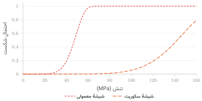
تفسیر. در ۳۰ مگاپاسکال، از هر ۳۶ شیشهٔ معمولی یکی میشکند و از سکوریت تقریباً هیچ (شکل 4.21). شیشهٔ ماژولِ خورشیدی سکوریت (یا نیمهسکوریت) است تا تگرگ، بارِ برف و باد و تنشِ گرمایی را تحمل کند. اما شیشهٔ سکوریتِ شکسته کاملاً خرد میشود؛ ماژولی با شیشهٔ ترکخورده رطوبت میگیرد و خطرِ برقی دارد و باید جدا و جایگزین شود (فصلهای ۳۲ و ۵۲).
4.3.19 خستگیِ گرماییِ اتصالهای لحیمی
در مثال 4.49 دیدیم که چرخههای دما اتصالِ لحیمی را پلاستیک تغییرِ شکل میدهند. عمرِ چنین خستگیِ کمچرخهای را رابطهٔ کافین-منسون توصیف میکند: تعدادِ چرخه تا شکست با توانی منفی از گسترهٔ کرنشِ پلاستیک کم میشود. اگر کرنش با گسترهٔ دما متناسب باشد، نسبتِ عمر در دو گسترهٔ دما \((\Delta T_2/\Delta T_1)^{\beta}\) است. آزمونِ شتابیافته همین را بهکار میبرد: چرخههای دمای بزرگ در آزمایشگاه، چرخههای کوچکِ سالها کار را نمایندگی میکنند.
مثال 4.61 (عمرِ اتصال در چرخههای کوچک و بزرگ) پرسش. با نمای 2 (فرضی)، عمرِ اتصال در چرخههای ۶۰ کلوینی چند برابرِ چرخههای ۱۰۰ کلوینی است؟ یک آزمونِ ۲۰۰ چرخهای در برابرِ چرخههای روزانهٔ میدان چه معنایی دارد؟
پاسخ.
solder joint fatigue, Coffin-Manson N ~ (plastic strain range)^(-beta), beta 2
strain ~ temperature swing: cycles to failure at 60 K vs 100 K swing: x 2.78
one daily cycle per year in the field = 365; a 200-cycle chamber test at a
larger swing stands in for many field years (acceleration factor)
the exponent comes from tests of the real joint; this is the idea onlyتفسیر. کاهشِ گسترهٔ دمای روزانه (مثلاً با خنککاریِ بهتر یا کارِ کمتر در ساعتهای داغ) عمرِ اتصالها را چند برابر میکند. همین منطق در طراحیِ ماژولهای قدرتِ اینورتر و اتصالهای سلولهای خورشیدی بهکار میرود (فصلهای ۴۱ و ۴۴). نمای واقعی و «ضریبِ شتاب» از آزمونِ همان اتصال میآید؛ برونیابیِ بیآزمون، حدس است.
- چرا تمرکزِ تنش در بارِ استاتیکِ فلزِ نرم کماهمیتتر از خستگی است؟
- تنشِ لبهٔ سوراخی در ورقی با تنشِ اسمیِ ۵۰ مگاپاسکال چیست؟
- با معادلهٔ 4.38، اگر عمقِ کابل دو برابر شود، مقاومتِ گرمایی تقریباً چقدر زیاد میشود؟
- چرا خاکِ اطرافِ کابل خشک میشود و چه پیامدی دارد؟
- چرا پوشش جریانِ حفاظتِ کاتدی را کم میکند؟
- مدولِ وایبولِ بزرگتر یعنی چه برای طراح؟
- چرا شیشهٔ سکوریتِ شکسته خرد میشود؟
- با نمای کافین-منسونِ ۲، نصف کردنِ گسترهٔ دما عمر را چند برابر میکند؟
4.3.20 اتصالِ پیچیِ پیشکشیده: چرا پیچ بارِ کمی حس میکند
ایده. پیچِ پیشکشیده و قطعههای میانش مانندِ دو فنرِ موازی رفتار میکنند: پیچ کشیده و قطعهها فشردهاند. وقتی نیروی کششیِ بیرونی \(F_A\) به اتصال وارد شود، بخشی از آن کششِ پیچ را زیاد میکند و بقیه فقط فشارِ قطعهها را کم. سهمِ پیچ ضریبِ بار است:
\[ \Phi = \frac{k_b}{k_b + k_c} \tag{4.40}\]
\(k_b\) سفتیِ پیچ و \(k_c\) سفتیِ قطعههای فشرده است. چون قطعهها معمولاً چند برابر سفتترند، پیچ تنها کسرِ کوچکی از بارِ متغیر را میبیند؛ به شرطِ آنکه پیشکشیدگی بماند. اگر بارِ بیرونی از پیشکشیدگی بیشتر شود یا پیشکشیدگی از دست برود (مثال 4.47)، درز باز میشود و پیچ همهٔ بار را حمل میکند.
مثال 4.62 (پیچهای فلنجِ برج زیرِ گشتاورِ متناوب) پرسش. فلنجِ برج ۱۴۰ پیچِ M36 روی دایرهای به قطرِ 4.7 m دارد و گشتاورِ پای برج حدودِ \(\pm 20\) مگانیوتنمتر نوسان میکند (فرضی، A-078). قطعههای فشرده پنج برابر سفتتر از پیچاند. نوسانِ تنشِ پیچ را با و بدونِ پیشکشیدگی بیابید و اثرش را بر آسیبِ خستگی بسنجید.
پاسخ.
tower flange: 140 bolts M36 on a 4.7 m circle; moment swings +-20 MN m (A-078)
load change per bolt 4 dM / (n D) = 122 kN
bolt stiffness E A / L = 858 MN/m; clamped parts 5 x stiffer
load factor k_b / (k_b + k_c) = 0.167: the bolt feels 16.7% of the change
bolt stress swing: preloaded 24.8 MPa; preload lost 148.8 MPa
with S-N slope 3, losing the preload multiplies bolt fatigue damage by 216
preload is not a detail: it is what makes the joint survive (re-tightening
and checks in chapters 49 and 52)تفسیر. پیچِ پیشکشیده فقط حدودِ 25 MPa نوسان میبیند و پیچِ شلشده شش برابر؛ با نمای ۳، آسیبِ خستگی ۲۱۶ برابر میشود. این دلیلِ اصلیِ بازرسی و بازسفتکاریِ پیچهای فلنج پس از نصب و در نگهداریِ دورهای است (فصلهای ۴۹ و ۵۲)، و پیوندی میانِ بخش 4.3.1 (پیشکشیدگی)، بخش 4.3.5 (رهایش) و بخش 4.3.3 (خستگی).
4.3.21 جوشِ گوشهای
جوشِ گوشهای رایجترین جوشِ سازه است: دو ورقِ عمود یا روی هم را از گوشه به هم میچسباند. بار از گلوگاهِ جوش میگذرد که برای جوشِ با ساقهای برابرِ \(s\)، حدودِ \(a = 0.707\,s\) است. تنشِ میانگینِ گلوگاه \(F/(aL)\) است و با استحکامِ طراحیِ جوش با ضریبهای جزئی مقایسه میشود. در خستگی، شکلِ پنجهٔ جوش (بخش 4.3.15) مهمتر از اندازهٔ آن است.
مثال 4.63 (جوشِ یک براکت) پرسش. براکتی با نیروی 50 kN با جوشِ گوشهایِ ۶ میلیمتری و طولِ ۲۰۰ میلیمتر بسته شده است. تنشِ گلوگاه را بیابید. اگر طولِ جوش دو برابر شود چه؟
پاسخ.
fillet weld: leg 6 mm, throat 0.707 x 6 = 4.24 mm, 200 mm long, 50 kN
throat stress F / (a L) = 59 MPa; with 400 mm of weld 29 MPa
the code check compares this with the design strength of the weld with
partial factors; size, length and the toe detail (fatigue) all matterتفسیر. 59 MPa در برابرِ استحکامِ فلزِ جوشِ ساختمانی حاشیهٔ زیادی دارد؛ اما وارسیِ رسمی با آییننامه، ضریبهای جزئی و ترکیبِ برش و کشش انجام میشود. جوشِ بزرگتر از لازم نه فقط هزینه، بلکه گرمای ورودیِ بیشتر (مثال 4.68) و اعوجاج میآورد. اندازهٔ ساقِ جوش با ابزارِ ساده در بازرسیِ چشمی سنجیده میشود (جدول 4.4).
- اگر قطعههای فشرده سه برابر سفتتر از پیچ باشند، ضریبِ بار چیست؟
- چرا پیچِ شلشده بسیار زودتر خسته میشود؟
- گلوگاهِ جوشِ گوشهای با ساقِ ۸ میلیمتر چند میلیمتر است؟
- چرا جوشِ بزرگتر همیشه بهتر نیست؟
4.3.22 سایش و سایشِ لبهٔ حملهٔ پره
ایده. قطرهٔ باران که با تندیِ زیاد به لبهٔ حملهٔ پره میخورد، در لحظهٔ برخورد فشاری از مرتبهٔ فشارِ ضربهٔ آب \(p \approx \rho_w c_w v\) میسازد (\(c_w\) سرعتِ صوت در آب). این فشار بسیار بیشتر از فشارِ دینامیکیِ هواست و با تکرارِ میلیونها برخورد، پوشش و لایهٔ رویی را خسته و کنده میکند: فرسایشِ بارانی. آهنگِ فرسایش با توانِ بالایی از تندیِ برخورد زیاد میشود؛ نمای دقیق را آزمونهای چرخانِ باران برای هر پوشش میدهند. سایش در اتصالهای لغزنده (یاتاقان، سوراخِ پیچِ لغزیده) و سایشِ ذرهای (گرد و غبار روی شیشهٔ ماژول) خانوادههای دیگرِ همین پدیدهاند.
مثال 4.64 (نوکِ پره زیرِ باران) پرسش. با تندیهای مقطع در شعاعهای ۲۵، ۵۰ و ۷۵ متر در 10.5 rpm، فشارِ ضربهٔ قطره و آهنگِ نسبیِ فرسایش (با نمای فرضیِ ۷، A-084) را بیابید. روتوری با تندیِ نوکِ 90 m/s چه میکند؟
پاسخ.
raindrop impact on the leading edge: water-hammer pressure p = rho c v
erosion rate taken as proportional to v^7 (assumed exponent, A-084);
erosion is shown relative to the section at r = 50 m
r 25 m: speed 27.5 m/s, impact 41 MPa, erosion x 0.01
r 50 m: speed 55.0 m/s, impact 82 MPa, erosion x 1.00
r 75 m: speed 82.5 m/s, impact 124 MPa, erosion x 17.09
a rotor with 90 m/s tip speed erodes 1.84 x faster
the outer tenth of the blade takes most of the wear: tip protection, and
inspection of the leading edge, focus there (chapters 42 and 52)تفسیر. نوکِ پره هفده برابرِ میانهٔ پره فرسایش میگیرد و فشارِ ضربه در آن از استحکامِ بسیاری از رزینها بیشتر است. از این رو محافظِ لبهٔ حمله (نوار یا پوستهٔ الاستومری) در بخشِ بیرونیِ پره نصب و در بازدیدهای دورهای بازرسی میشود؛ فرسایش زبری میسازد و همان پسارِ مثال 4.24 را بالا میبرد و تولید را کم میکند (فصلهای ۴۲ و ۵۲). روتورهای بزرگتر با تندیِ نوکِ بیشتر بهشدت حساسترند: یک مصالحهٔ طراحی میانِ بازدهِ آیرودینامیکی، صدا و فرسایش.
یادداشت: تردیِ هیدروژنی. فولادهای پراستحکام (پیچهای ردهٔ بالا) اگر در فرایندهایی مانندِ اسیدشوییِ پیش از آبکاری یا گالوانیزه هیدروژن جذب کنند، ممکن است زیرِ پیشکشیدگی با تأخیر و بیهشدار بشکنند. از این رو پوششدهیِ پیچهای پراستحکام محدودیتها و روشهای ویژه دارد که در استانداردِ محصولِ پیچ و مشخصاتِ خرید آمده است؛ جایگزین کردنِ پیچی با پوششِ «بهتر» بدونِ تأییدِ طراح خطرناک است (فصلهای ۳۹ و ۴۷).
4.4 پ. انتخابِ ماده و فرایند
4.4.1 ردههای ماده و جایشان در نیروگاه
موادِ مهندسی را در شش ردهٔ بزرگ میشناسیم. هر رده «شخصیتی» دارد که از ساختارِ اتمیاش میآید: فلزها پیوندِ فلزی و الکترونهای آزاد دارند (رسانا، شکلپذیر)؛ سرامیکها و شیشه پیوندِ یونی و کووالانسیِ سخت (سخت، ترد، عایق، مقاوم در گرما)؛ پلیمرها زنجیرههای بلندِ مولکولی (سبک، عایق، نرم، حساس به گرما و نور)؛ نیمهرساناها گافِ انرژیِ کوچک (بخش 4.2.13)؛ کامپوزیتها ترکیبِ الیافِ سفت در زمینهٔ پلیمری؛ و بتن یک کامپوزیتِ سرامیکیِ ارزان با مقاومتِ فشاریِ خوب و کششیِ ناچیز.
| رده | نمونه در نیروگاهِ P | نقطهٔ قوت | نقطهٔ ضعف |
|---|---|---|---|
| فولادِ ساختمانی | برج، شمع، سازهٔ خورشیدی، شاسی | استحکام، چقرمگی، جوشپذیری، ارزانی | خوردگی، سنگینی |
| فولادِ الکتریکی | هستهٔ ترانسفورماتور و ژنراتور | تلفاتِ مغناطیسیِ کم | گرانی، شکنندگیِ برش |
| مس و آلومینیوم | سیمپیچ، کابل، شینه، قابِ ماژول | رسانایی | خزشِ آلومینیوم، گرانیِ مس |
| پلیمرها | عایقِ کابل، پشتپوشِ ماژول، کانکتور | عایق، سبک، شکلپذیر | فرابنفش، گرما، خزش |
| سرامیک و شیشه | مقره، شیشهٔ ماژول، برقگیر | عایق، سخت، پایدار | تردی |
| نیمهرسانا | سلولِ خورشیدی، ترانزیستورِ قدرت | تبدیلِ نور و کلیدزنی | گرانی، حساسیت به دما |
| کامپوزیت | پرهٔ توربین، پوششِ ناسل | سفتی و استحکامِ ویژهٔ زیاد | بازیافت، بازرسیِ دشوار |
| بتن | فونداسیونِ توربین و پست | فشار، ارزانی، جرم | کشش؛ به میلگرد نیاز دارد |
شاخصِ ماده. وقتی هدف «کمترین جرم برای یک کارکردِ مشخص» است، ریاضیات یک ترکیب از خواص را برجسته میکند. برای میلهٔ کششی با سفتیِ مشخص، جرم با \(\rho/E\) متناسب است؛ پس \(E/\rho\) را بیشینه میکنیم. برای تیرِ خمشی با سفتیِ مشخص که میتوان ضخامتش را آزادانه انتخاب کرد، شاخص \(E^{1/2}/\rho\) است و برای تیر با استحکامِ مشخص، \(\sigma^{2/3}/\rho\). این شاخصها نشان میدهند چرا پرهها کامپوزیتیاند و چرا چوب، با وجودِ مدولِ کم، تیرِ سبکِ خوبی است. اشبی (به انگلیسی Ashby) این روش را با نمودارهای لگاریتمیِ خواص نظاممند کرد.
مثال 4.65 (پرهٔ سبک و سفت از چه مادهای؟) پرسش. با خواصِ نمایشیِ شش ماده (فرضی، A-059)، سه شاخصِ \(E/\rho\)، \(E^{1/2}/\rho\) و \(\sigma^{2/3}/\rho\) را حساب و رتبهبندی کنید.
پاسخ.
material indices in SI units (bigger is better; indicative data, A-059):
material E/rho (x 1e6) E^0.5/rho sigma^(2/3)/rho
structural steel 26.8 58.4 63.9
aluminium alloy 25.9 98.0 150.9
GFRP (along fibres) 21.5 105.1 478.0
CFRP (along fibres) 87.1 237.0 845.4
spruce (along grain) 24.4 233.1 340.6
concrete (tension) 13.3 74.5 8.7
tie of given stiffness: E/rho; beam of given stiffness: E^0.5/rho;
beam of given strength: sigma^(2/3)/rho (minimum mass in each case)
steel and aluminium tie on E/rho; for bending, lighter and fatter wins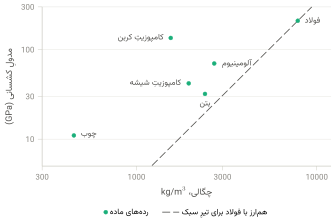
تفسیر. برای میلهٔ کششی، فولاد و آلومینیوم و چوب تقریباً همارزند (\(E/\rho\) نزدیک). اما برای تیرِ خمشیِ سبک، کامپوزیتِ کربن و چوب چهار برابرِ فولادند و کامپوزیتِ شیشه دو برابر: هر مادهای که بالای خطِ همارزی در شکل 4.22 باشد، از فولاد بهتر است. برای استحکام، کامپوزیتها بسیار جلوترند. پرهٔ توربین عمدتاً از کامپوزیتِ شیشه است و در پرههای بلند، تیرِ اصلی گاهی از کربن (هزینه و ساخت تعیینکنندهاند، فصلِ ۴۲). هشدار: این عددها نمایشیاند؛ انتخابِ واقعی با دادهٔ گواهیشدهٔ تأمینکننده و آزمون انجام میشود.
4.4.2 رسانا، عایق، سازه، و محیطِ خورنده: یک روشِ انتخاب
مس یا آلومینیوم؟ برای مقاومتِ برابر، آلومینیوم ۶۴ درصد سطحِ بیشتر لازم دارد اما چون چگالیاش یکسومِ مس است، جرمش حدودِ نصف است. انتخاب به هزینه، جرم، ابعاد، و دشواریِ اتصال بستگی دارد: آلومینیوم لایهٔ اکسیدِ نارسانا میسازد، زیرِ فشارِ پیچ میخزد (بخش 4.3.5) و کنارِ مس پیلِ گالوانیک میسازد (بخش 4.3.6).
ماتریسِ تصمیمِ وزندار. وقتی چند معیار در کار است، روشِ رایج این است: (۱) گزینهها و معیارها را بنویسید؛ (۲) به هر معیار وزنی بدهید که جمعشان یک شود و دلیلش را ثبت کنید؛ (۳) هر گزینه را در هر معیار امتیاز دهید، با شاهد؛ (۴) مجموعِ وزندار را حساب کنید؛ (۵) حساسیت را بسنجید: اگر یک وزن کمی جابهجا شود، برنده عوض میشود؟ معیارهای «حتماً لازم» (مثلاً دمای کارِ کافی) پیش از امتیازدهی فیلتر میشوند، نه اینکه با امتیاز جبران شوند.
مثال 4.66 (آلومینیوم بهجای مس) پرسش. برای مقاومتِ برابر، سطح، قطر، جرم و هزینهٔ فلزِ آلومینیوم را با مس مقایسه کنید (قیمتها ساختگی، A-060). رسانای آلومینیومیِ 240 mm² با چه سطحی از مس برابر است؟
پاسخ.
aluminium instead of copper for the same resistance per metre:
area x 1.64, diameter x 1.28, mass x 0.494
metal cost x 0.14 (prices 9.0 and 2.6 units/kg, A-060)
but: a fatter conductor needs more insulation, screen and sheath; aluminium
creeps under bolts and grows an oxide skin, so terminations need care
a 240 mm2 Al conductor matches about 146 mm2 of copperتفسیر. با این قیمتهای ساختگی، فلزِ آلومینیوم یکهفتمِ هزینه دارد؛ از این رو کابلهای فشارِ متوسطِ شبکهٔ جمعآوری معمولاً آلومینیومیاند. اما قطرِ بزرگتر عایق و غلاف و حجمِ ترانشهٔ بیشتری میخواهد و سرکابلها و اتصالها باید برای آلومینیوم طراحی شده باشند. در فضاهای تنگ (تابلو، سیمپیچ) و اتصالهای زیاد، مس هنوز رایج است.
مثال 4.67 (چهار نقش، چهار انتخاب، و شاهدِ لازم) پرسش. برای چهار نقش در نیروگاهِ P گزینهها را با ماتریسِ وزندار مقایسه کنید (امتیازها و وزنها فرضی، A-059): (۱) رسانای کابلِ فشارِ متوسط (رسانایی)؛ (۲) عایقِ آن (عایق)؛ (۳) شمعِ سازهٔ خورشیدی در خاکِ خورنده (سازهای)؛ (۴) پیچ و مهرههای نزدیکِ ساحل (محیطِ خورنده).
پاسخ.
weighted selection, scores 1 (poor) .. 5 (good), weights sum to 1 (A-059):
MV cable conductor: Al 4.20, Cu 3.20 -> Al
criteria cost, mass, jointing, size; weights 0.40, 0.20, 0.25, 0.15
cable insulation: XLPE 4.20, EPR 3.60, PVC 2.55 -> XLPE
criteria dielectric loss, max temp, cost, flexibility; weights 0.35, 0.30,
0.20, 0.15
PV pile in corrosive soil: HDG steel 3.65, thicker HDG 4.00, stainless 3.40
-> thicker HDG
criteria strength, corrosion life, cost, supply; weights 0.30, 0.35, 0.25,
0.10
fasteners near the coast: HDG 3.60, stainless A4 3.40, zinc-flake 3.80 ->
zinc-flake
criteria corrosion, galling risk, cost, preload control; weights 0.40,
0.20, 0.20, 0.20
scores are judgements: record who scored, on what evidence, and test
whether the winner changes when a weight moves by 0.1تفسیر و شاهدِ لازم. نتیجه فقط به اندازهٔ امتیازها معتبر است؛ برای هر انتخاب، شاهدی که امتیاز را پشتیبانی کند باید در پرونده باشد:
| نقش | انتخابِ این مثال | شاهدِ لازم پیش از پذیرش |
|---|---|---|
| رسانای کابل | آلومینیوم | گواهیِ آزمونِ نوعیِ کابل، مقاومتِ رسانا در آزمونِ جاری، تأییدِ سازگاریِ سرکابل و اتصال |
| عایقِ کابل | پلیاتیلنِ شبکهای | ردهٔ ولتاژ و دمای کار، آزمونِ تخلیهٔ جزئی و ولتاژ، سوابقِ پیری |
| شمعِ خورشیدی | فولادِ گالوانیزه با پوششِ ضخیمتر | اندازهگیریِ خورندگیِ خاک و جو، ضخامتِ پوشش در بازرسی، محاسبهٔ کاهشِ مقطع در عمرِ طرح |
| پیچِ نزدیکِ ساحل | پوششِ پولکیِ روی | آزمونِ مهِ نمک یا سابقهٔ میدانی، سازگاری با روشِ سفتکاری، ضریبِ اصطکاکِ اندازهگیریشده |
در مثالِ پیچها، فاصلهٔ سه گزینه کم است (3.4 تا 3.8)؛ و در مثالِ شمع، اگر ده درصد از وزنِ «عمرِ خوردگی» به «هزینه» برود، دو گزینهٔ گالوانیزه تقریباً همامتیاز میشوند (تمرین 4.78). پس تصمیم باید با آزمون یا تجربهٔ میدانی قطعی شود، نه با ماتریس. ماتریس فکر را منظم میکند، جایگزینِ شاهد نیست.
- شش ردهٔ ماده را نام ببرید و برای هر کدام یک قطعه در نیروگاهِ P بیاورید.
- چرا بتن را با میلگرد میسازند؟
- شاخصِ \(E^{1/2}/\rho\) را برای تیرِ خمشی از کجا به دست میآوریم؟ (راهنما: جرم و سفتیِ تیرِ مربعی)
- چرا پرهٔ توربین فولادی نیست؟
- اگر قیمتِ مس نصف شود، نتیجهٔ مثال 4.66 چه میشود؟
- تفاوتِ «فیلتر» و «امتیاز» در ماتریسِ تصمیم چیست؟
- چرا برای هر امتیاز باید شاهد ثبت شود؟
4.4.3 خانوادههای فرایندِ ساخت
نگاهِ کلی. هر قطعه از مسیری از فرایندها میگذرد: شکلدهیِ اولیه (ریختهگری، آهنگری، نورد، اکستروژن، قالبگیری، لایهچینیِ کامپوزیت)، شکلدهیِ ثانویه و برداشتِ ماده (ماشینکاری، شکلدهیِ ورق)، اتصال (جوشکاری، پیچ، لحیم، چسب)، عملیاتِ حرارتی (تغییرِ ریزساختار برای استحکام یا چقرمگی) و پوشش و پرداخت (گالوانیزه، رنگ، آبکاری). هر فرایند محدودهٔ شکل، اندازه، دقت، تیراژ و هزینهٔ خودش را دارد و عیبهای مشخصِ خودش؛ و هر عیب روشِ بازرسیِ مناسبِ خودش را (بخش 4.5.5).
| خانواده | اصل | نمونه در نیروگاهِ P | عیبِ نوعی | بازرسیِ نوعی |
|---|---|---|---|---|
| ریختهگری | ریختنِ فلزِ مذاب در قالب | توپی، شاسیِ ناسل | حفره، انقباض، ترک | فراصوتی، پرتونگاری |
| آهنگری | شکل دادنِ فلزِ داغ با فشار | محورِ اصلی، فلنج | ترکِ سطحی، چین | ذرهٔ مغناطیسی، فراصوتی |
| نورد | عبور از میانِ غلتکها | ورقِ برج، حلقهٔ فلنج، ریلِ سازه | لایهلایهشدن | فراصوتی، گواهیِ کارخانه |
| ماشینکاری | برداشتنِ براده | نشیمنگاهِ یاتاقان، سطحِ فلنج | خطای ابعاد، زبری | اندازهگیریِ ابعاد |
| شکلدهیِ ورق | خم و پرسِ ورقِ سرد | پروفیلِ سازهٔ خورشیدی، بدنهٔ تابلو | ترکِ خم، برگشتِ فنری | چشمی، ابعادی |
| جوشکاری | ذوبِ موضعی و اتصال | درزهای برج، اسکلتها | ترک، تخلخل، نفوذِ ناقص | چشمی، فراصوتی، پرتونگاری |
| عملیاتِ حرارتی | گرم و سرد کردنِ کنترلشده | محور، چرخدنده | سختیِ نامناسب، تابیدگی | آزمونِ سختی |
| پوشش | لایهٔ محافظ یا عایق | گالوانیزهٔ سازه، رنگِ برج | ضخامتِ کم، چسبندگیِ بد | ضخامتسنج، آزمونِ چسبندگی |
| اکستروژن | فشردنِ ماده از قالب | قابِ آلومینیومیِ ماژول، عایقِ کابل | ناهممحوری، حفره | ابعادی، آزمونِ ولتاژ |
| قالبگیریِ تزریقی | تزریقِ پلیمرِ مذاب | کانکتور، جعبهٔ اتصال | پرنشدن، تنشِ پسماند | چشمی، ابعادی |
| لایهچینیِ کامپوزیت | الیاف در قالب، تزریق و پختِ رزین | پرهٔ توربین | چین، حفرهٔ هوا، پختِ ناقص | فراصوتی، سختیسنجیِ پخت |
| لمینیت | فشار و گرما روی لایهها | لمینیتِ ماژولِ خورشیدی، هستهٔ ترانسفورماتور | حباب، جداشدگی | چشمی، تصویربرداری |
| سیمپیچی | پیچیدنِ رسانای عایقدار | ترانسفورماتور، ژنراتور | اتصالِ کوتاهِ دور، رطوبت | آزمونِ نسبت، عایق، تخلیهٔ جزئی |
| مونتاژِ الکترونیکی | نصب و لحیمِ قطعهها روی برد | مبدل، کنترلکننده | لحیمِ سرد، اتصالِ کوتاه | بازرسیِ نوری و پرتو، آزمونِ کارکرد |
مرز. این جدول سواد میدهد، نه دستورِ کار: هر فرایند در کارخانه با تجهیزاتِ مناسب، روشِ اجراییِ تأییدشده، کارکنانِ صلاحیتدار و کنترلِ کیفیت انجام میشود. جوشکاری و کارِ گرم، فرایندهای فشار و خلأ، و آزمونهای ولتاژِ بالا خطرهای جدیِ انسانی دارند. فصلهای ۴۰ تا ۴۸ برای هر محصول مسیرِ کاملِ ساخت، کنترل و آزمون را میآورند.
جوشکاری و گرمای ورودی. در جوشکاریِ قوسی، گرمای ورودی بر واحدِ طولِ جوش
\[ Q = \eta\,\frac{V I}{v} \tag{4.41}\]
است (\(V\) ولتاژ، \(I\) جریان، \(v\) سرعتِ پیشروی، \(\eta\) بازدهِ انتقالِ گرما). گرمای ورودیِ بیشتر یعنی سرد شدنِ آهستهتر، ناحیهٔ متأثر از گرمای پهنتر و ممکن است چقرمگیِ کمتر؛ گرمای کمتر یعنی سرد شدنِ تند و خطرِ ترکِ سرد. پنجرهٔ مجاز را دستورالعملِ جوشکاریِ تأییدشده تعیین میکند و جوشکار برای آن صلاحیت دارد (فصلهای ۴۲ و ۴۷).
مثال 4.68 (گرمای ورودیِ دو جوش) پرسش. گرمای ورودیِ جوشِ زیرپودریِ درزِ ورقِ برج و جوشِ گوشهای با سیمِ محافظتشده با گاز را با پارامترهای فرضی حساب کنید.
پاسخ.
heat input Q = eta V I / v (assumed parameters):
submerged arc, tower plate seam: 32 V, 650 A, 8 mm/s, eta 1.0 -> 2.60 kJ/mm
gas-shielded wire, bracket fillet: 25 V, 220 A, 4 mm/s, eta 0.8 -> 1.10
kJ/mm
more heat input: slower cooling, larger heat-affected zone, possible loss of
toughness; qualified procedures fix the window (chapters 42 and 47)تفسیر. جوشِ زیرپودریِ ورقِ ضخیم دو و نیم برابرِ گرمای جوشِ کوچک را دارد؛ این گرما برای پر کردنِ پخِ ورقِ ضخیم لازم است، اما ریزساختارِ کنارِ جوش را تغییر میدهد. از این رو برای فولادهای برج آزمونِ ضربهٔ ناحیهٔ متأثر از گرما بخشی از تأییدِ دستورالعمل است.
پختِ کامپوزیت. رزینِ پره با واکنشِ شیمیایی سفت میشود و آهنگِ واکنش با دما از رابطهٔ آرنیوس پیروی میکند (بخش 4.3.5). گرمِ بیشتر یعنی پختِ تندتر، اما واکنش خودش گرما میدهد (گرمازا) و در لایههای ضخیم ممکن است دمای درون از کنترل خارج شود.
مثال 4.69 (زمانِ پخت در دماهای مختلف) پرسش. اگر پختِ کامل در 70 °C هشت ساعت طول بکشد و انرژیِ فعالسازی 60 kJ/mol باشد (فرضی)، زمانِ همارز در ۵۰ تا ۹۰ درجه چیست؟
پاسخ.
resin cure, time to the same degree of cure (Arrhenius, Ea 60 kJ/mol assumed):
50 C: 29.4 h (8 h at 70 C as reference)
60 C: 15.0 h (8 h at 70 C as reference)
70 C: 8.0 h (8 h at 70 C as reference)
80 C: 4.4 h (8 h at 70 C as reference)
90 C: 2.5 h (8 h at 70 C as reference)
thick laminates heat themselves while curing (exotherm): the core can
run far hotter than the mould, so curing is controlled, not just timedتفسیر. هر ده درجه گرمِ بیشتر زمان را تقریباً نصف میکند (قاعدهٔ سرانگشتیِ رایج، که اینجا از آرنیوس درآمد). اما کاهشِ زمانِ چرخهٔ قالب با گرمِ بیشتر، با خطرِ گرمازایی و تنشِ پسماند معامله میشود؛ از این رو پخت با پایشِ دما در چند نقطه کنترل میشود، نه فقط با ساعت (فصلِ ۴۲).
4.4.4 هزینهٔ فرایند و تیراژ
مدلِ ساده. هزینهٔ هر قطعه = مواد + (نرخِ ساعتیِ ماشین × زمان) + (هزینهٔ ابزار و قالب ÷ تعداد). فرایندهایی که قالبِ گران دارند (ریختهگری، آهنگری، قالبگیریِ تزریقی) در تیراژِ بالا ارزاناند؛ فرایندهای بیقالب (ماشینکاری، جوشکاریِ دستی) در تیراژِ پایین. نقطهٔ سربهسر تعدادی است که دو مسیر هزینهٔ برابر دارند:
\[ N^{*} = \frac{T_B - T_A}{c_A - c_B} \tag{4.42}\]
\(T\) هزینهٔ ابزار و \(c\) هزینهٔ متغیرِ هر قطعه است.
مثال 4.70 (پوستهٔ کانکتور: تراشیدن یا قالبگیری؟) پرسش. پوستهٔ یک کانکتور را میتوان از شمشِ پلیمری تراشید یا با قالبِ تزریقیِ ۲۵ هزار واحدی ساخت (هزینهها ساختگی، A-060). نقطهٔ سربهسر و هزینهٔ هر قطعه در ۱۰۰، ۱۰۰۰ و ۱۰ هزار عدد چیست؟
پاسخ.
connector housing: machining vs injection moulding (fictional costs, A-060)
machining: 4.0 + 60.0 x 0.25 h = 19.00 per part, no tooling
moulding: 0.8 + 80.0 x 0.01 h = 1.60 per part + tool 25,000
break-even volume 1,437 parts
100 parts: machining 19.00, moulding 251.60 per part
1,000 parts: machining 19.00, moulding 26.60 per part
10,000 parts: machining 19.00, moulding 4.10 per part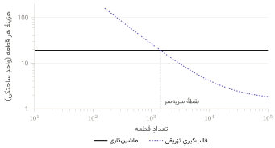
تفسیر. زیرِ حدودِ ۱۴۰۰ قطعه، تراشیدن ارزانتر است و بالای آن قالب (شکل 4.23). یک نیروگاهِ ۶۰ مگاواتی دهها هزار کانکتور دارد؛ پس کانکتورها قالبگیری میشوند، اما قطعهٔ یدکیِ خاصِ یک دستگاه ممکن است تراشیده شود. هزینه تنها معیار نیست: فرایند خواص را هم تعیین میکند (قطعهٔ قالبگیریشده خطِ جوشِ جریان و تنشِ پسماند دارد، قطعهٔ تراشیده نه).
- برای هر یک از توپی، محورِ اصلی، ورقِ برج و قابِ ماژول یک فرایندِ ساخت و یک عیبِ نوعی نام ببرید.
- چرا جوشکار و دستورالعملِ جوشکاری هر دو باید تأیید شوند؟
- با معادلهٔ 4.41، اگر سرعتِ جوشکاری دو برابر شود، گرمای ورودی چه میشود؟
- گرمازایی در پختِ کامپوزیت چه خطری دارد؟
- اگر قالبِ مثال 4.70 چهل هزار واحد باشد، نقطهٔ سربهسر کجاست؟
- یک عاملِ غیرِهزینهای در انتخابِ میانِ ریختهگری و ماشینکاری از شمش نام ببرید.
4.4.5 نیمهرساناهای قدرت: چرا گافِ پهن؟
ایده. در نیمهرسانا، شمارِ حاملهایی که گرما بهتنهایی آزاد میکند (حاملهای ذاتی) با دما به شکلِ \(T^{3/2} e^{-E_g/(2kT)}\) بالا میرود. قطعهٔ قدرت (ترانزیستورِ اینورتر) در حالتِ خاموش باید ولتاژِ زیادی را سد کند؛ اگر حاملهای ذاتی زیاد شوند، جریانِ نشتی بالا میرود، گرما بیشتر میشود و قطعه ممکن است دچارِ فرارِ گرمایی شود. هر چه گاف پهنتر، ماده در دمای بالا «عایقتر» میماند. سیلیسیومکاربید و گالیومنیترید با گافهای حدودِ سه الکترونولت، قطعههایی با ولتاژِ سدِ بیشتر، کلیدزنیِ تندتر و دمای کارِ بالاتر میدهند؛ و تولیدشان دشوارتر و گرانتر است (فصلهای ۹ و ۴۴).
مثال 4.71 (سیلیسیوم و سیلیسیومکاربید در ۱۵۰ درجه) پرسش. نسبتِ حاملهای ذاتی در 150 °C به 25 °C را برای سیلیسیوم (1.12 eV) و سیلیسیومکاربید (3.26 eV) با ضریبِ پیشینِ یکسان بیابید. حاملهای سیلیسیومکاربید در ۱۵۰ درجه چند برابرِ سیلیسیوم در ۲۵ درجهاند؟
پاسخ.
intrinsic carriers grow as T^1.5 exp(-Eg / 2kT); ratio 150 C / 25 C:
silicon Eg 1.12 eV: x 1.06e+03
silicon carbide Eg 3.26 eV: x 2.33e+08
SiC at 150 C has 1.9e-10 x the intrinsic carriers of Si at 25 C
a wide gap keeps the material insulating when hot: higher blocking voltage
and junction temperature for wide-gap power devices (chapters 9 and 44)تفسیر. سیلیسیوم با رفتن از ۲۵ به ۱۵۰ درجه هزار برابر حاملِ ذاتیِ بیشتر دارد. نسبتِ سیلیسیومکاربید بزرگتر است، اما از پایهای دهها مرتبه کوچکتر شروع میکند: در ۱۵۰ درجه هنوز میلیاردها بار کمتر از سیلیسیومِ سرد حامل دارد. این است که مادههای گافِ پهن در دما و ولتاژِ بالا برتری دارند. محدودیت: ضریبهای پیشین و جرمهای مؤثر در دو ماده متفاوتاند؛ این مثال فقط اثرِ گاف را جدا میکند.
4.4.6 بتن: مقاومتِ فشاری، گرمای آبگیری و ترک
بتن آمیزهای از سیمان، آب، سنگدانه و گاه افزودنی است. واکنشِ سیمان با آب (آبگیری) خمیری میسازد که سنگدانهها را میچسباند. چند اصل: (۱) نسبتِ آب به سیمانِ کمتر بتنِ مستحکمتر و کمنفوذتر میدهد، اما کارایی را کم میکند؛ (۲) بتن در فشار قوی و در کشش ضعیف است (حدودِ یکدهم)، پس کشش را میلگرد حمل میکند؛ (۳) آبگیری گرمازاست؛ در قطعههای حجیم (فونداسیونِ توربین) گرما در مغز میماند و سطح سرد میشود و اختلافِ دمای مغز و سطح ترکِ حرارتی میسازد؛ (۴) بتن با زمان مقاومت میگیرد و باید عملآوری شود (مرطوب و محافظتشده بماند).
مثال 4.72 (گرمای مغزِ فونداسیون) پرسش. با سیمانِ 380 kg/m³ و گرمای آبگیریِ 330 kJ/kg (فرضی، A-066)، افزایشِ دمای بیدررو (مغزِ کاملاً عایق) را بیابید. اگر بتن در 25 °C ریخته شود، دمای مغز چقدر میشود؟
پاسخ.
turbine foundation concrete: 380 kg/m3 cement, 330 kJ/kg heat of hydration
(A-066)
fully insulated core would rise 52 K; placed at 25 C -> about 77 C
the surface cools to the air: a large core-surface difference cracks it
mitigations: lower-heat binders, cooling pipes, night placement,
insulation, and a measured temperature-difference limit in the specificationتفسیر. مغزِ فونداسیونی چند متری عملاً بیدررو است و به حدودِ ۷۷ درجه میرسد، در حالی که سطح با هوای شب سرد میشود. مشخصاتِ بتنریزیِ قطعههای حجیم معمولاً حدِ اختلافِ دمای مغز و سطح و حدِ بیشینهٔ دمای مغز دارند و با حسگرهای دما در بتن پایش میشوند (فصلهای ۲۹ و ۴۷). این همان معادلهٔ گرمای بخش 3.3.16 است، با منبعِ گرمای درونی.
4.4.7 انرژیِ نهفته و چرخهٔ عمرِ مواد
ایده. ساختنِ هر ماده انرژی میبرد: استخراج، ذوب، نورد، حمل. این انرژیِ نهفته (و انتشارِ متناظرِ آن) بخشی از ارزیابیِ چرخهٔ عمرِ نیروگاه است. مقدارها به فناوریِ تولید، منبعِ انرژی و مرزِ مطالعه بستگی دارند و پایگاههای داده عددهای متفاوتی میدهند؛ پس هر عدد باید با منبع و مرزش گزارش شود. در پایانِ عمر، بازیافت (فولاد و مس و آلومینیوم بهآسانی، کامپوزیتِ پره و ماژولها دشوارتر) بخشی از این ترازنامه است (فصلِ ۵۳).
مثال 4.73 (بازگشتِ انرژیِ یک توربین (غربالگری)) پرسش. با شدتهای نمایشیِ انرژیِ نهفته (فرضی، A-067) و جرمهای فرضشدهٔ برج، روتور-ناسل و فونداسیون، انرژیِ نهفتهٔ یک توربین و زمانِ سادهٔ بازگشتِ انرژی با تولیدِ مثال 4.93 را بیابید.
پاسخ.
embodied energy of one turbine with INDICATIVE intensities (A-067):
steel 25, composite 100, copper 60, concrete 1.5 MJ/kg; tower 494 t,
rotor-nacelle 350 t (255 t steel, 60 t blade composite, 35 t copper),
foundation 600 m3 concrete and 60 t of reinforcement
total about 30,485 GJ; yearly electricity 60,048 GJ (int_wind)
simple energy payback 6.1 months; no conversion factors,
transport, installation or end of life: a screening number onlyتفسیر. با این فرضها توربین انرژیِ نهفتهاش را در حدودِ شش ماه برمیگرداند. اما این عدد غربالگری است: برق و انرژیِ اولیه همارز گرفته شدهاند، حمل و نصب و برچیدن نیامدهاند و شدتها نمایشیاند. مطالعهٔ رسمیِ چرخهٔ عمر روشِ استاندارد، مرزِ تعریفشده و دادهٔ منبعدار میخواهد (فصلِ ۳۳). درس: مرزِ مطالعه را همیشه کنارِ نتیجه بنویسید.
مثال 4.74 (پایانِ عمرِ یک توربین: چه چیزی بازیافت میشود؟) پرسش. با جرمهای فرضشدهٔ همین فصل، فهرستِ مواد اصلیِ یک توربین را بسازید و برای هر کدام مسیرِ پایانِ عمر را بنویسید.
پاسخ.
one turbine's main materials (masses from this chapter's assumptions):
tower steel 494 t (21.1 %) easy
nacelle and hub iron and steel 255 t (10.9 %) easy
copper (generator, cables) 35 t ( 1.5 %) easy
blade composite (3 x 20 t, A-048) 60 t ( 2.6 %) difficult
foundation concrete 1440 t (61.4 %) crushed, reused as
aggregate
reinforcement steel 60 t ( 2.6 %) easy once separated
metals 844 t = 93 % of everything except the concrete
by mass the blades are small, by difficulty they are the main problem:
thermoset composites do not melt and are hard to separate (chapter 53)تفسیر. بیش از ۹۰ درصدِ مواد بهجز بتن فلز است و بازارِ بازیافتِ جاافتادهای دارد. پرهها فقط دو و نیم درصدِ جرماند، اما چون کامپوزیتِ گرماسخت ذوب نمیشود و جدا کردنِ الیاف و رزین دشوار است، مسئلهٔ اصلیِ پایانِ عمرند؛ ماژولهای خورشیدی هم با شیشه، آلومینیوم، سیلیسیوم، نقره و پلیمرهای لایهلایه همین چالش را دارند. طراحی برای پایانِ عمر (انتخابِ ماده، اتصالهای جداشدنی، مستندسازیِ مواد) از همین فصل آغاز میشود و در فصلِ ۵۳ کامل میشود.
- چرا جریانِ نشتیِ یک ترانزیستورِ قدرت با دما تند بالا میرود؟
- دو مزیت و یک عیبِ نیمهرساناهای گافِ پهن را بگویید.
- چرا بتن را با میلگرد مسلح میکنند؟
- گرمای آبگیری در بتنِ حجیم چه خطری دارد و چگونه کنترل میشود؟
- افزایشِ دمای بیدرروی بتنی با ۳۰۰ کیلوگرم سیمان و ۳۰۰ کیلوژول بر کیلوگرم چیست؟
- چرا هر عددِ انرژیِ نهفته باید با «مرزِ مطالعه» گزارش شود؟
4.4.8 چند حسابِ کارگاهی: ریختهگری، ماشینکاری، پوشش و سیمپیچی
فرایندها فقط نام نیستند؛ هر کدام چند رابطهٔ سادهٔ کمّی دارند که مهندسِ طراحی و بازرسی باید بشناسد تا با سازنده همزبان شود. این بخش چهار نمونه را میآورد.
ریختهگری و قاعدهٔ شورینوف. فلزِ مذاب از سطح سرد میشود؛ زمانِ انجماد با مربعِ «حجم به سطح» متناسب است: \(t = B\,(V/A)^{2}\). بخشهای ضخیم دیرتر منجمد میشوند و چون فلز در انجماد منقبض میشود، اگر تغذیهای نداشته باشند، حفرهٔ انقباضی میگیرند. طراحِ قالب با تغذیهها (منبعهای فلزِ مذاب که دیرتر منجمد میشوند) این بخشها را تغذیه میکند.
مثال 4.75 (زمانِ انجمادِ بخشهای توپی) پرسش. با ضریبِ 2.5 min/cm² (فرضی، A-073)، زمانِ انجمادِ ورقهای ۵۰ و ۱۰۰ میلیمتری و بخشی ۲۰۰ میلیمتری را بیابید.
پاسخ.
Chvorinov's rule t = B (V/A)^2, B = 2.5 min/cm2 (assumed, A-073):
plate 50 mm thick V/A = 2.5 cm: 15.6 min to solidify
plate 100 mm V/A = 5.0 cm: 62.5 min to solidify
section 200 mm V/A = 10.0 cm: 250.0 min to solidify
thick parts freeze last and shrink: risers feed them, and ultrasonic
testing looks there for shrinkage porosityتفسیر. دو برابر شدنِ ضخامت، زمانِ انجماد را چهار برابر میکند. در توپیِ ریختگی، فلنجهای ضخیم و محلِ اتصالِ دیوارهها آخرین جاهاییاند که منجمد میشوند؛ همانجاها هدفِ اصلیِ بازرسیِ فراصوتیِ قطعهٔ ریختگیاند (فصلِ ۴۲).
ماشینکاری. در تراشکاری، سرعتِ برش (متر بر دقیقه) سرعتِ سطح نسبت به ابزار است و پیشروی (میلیمتر بر دور) گامِ حرکتِ ابزار. آهنگِ برداشتِ ماده حاصلضربِ سرعتِ برش، پیشروی و عمقِ برش است. زبریِ سطح تقریباً با مربعِ پیشروی بالا میرود؛ پس پرداختِ نهایی با پیشرویِ کم و زمانِ بیشتر انجام میشود.
مثال 4.76 (روتراشیِ فلنجِ حلقوی) پرسش. روی یک فلنجِ حلقوی به قطرِ ۶۰۰ و ۴۰۰ میلیمتر، با سرعتِ برشِ 150 m/min و پیشرویِ 0.4 mm/rev، زمانِ یک گذر و آهنگِ برداشتِ ماده با عمقِ ۲ میلیمتر چیست؟
پاسخ.
facing a ring flange 600 / 400 mm: cutting speed 150 m/min, feed 0.4 mm/rev
face area 0.157 m2 -> time per pass area / (f v) = 2.6 min
material removal rate v f d (2 mm depth) = 120 cm3/min
a finer feed gives a smoother face (roughness ~ f^2) at the price of timeتفسیر. چند دقیقه برای هر گذر؛ اما تخت بودنِ فلنجِ برج (که پیشکشیدگیِ یکنواختِ پیچها به آن وابسته است) به دقتِ ماشین، گیرهٔ قطعه و جلوگیری از تابیدگیِ گرمایی بستگی دارد، نه فقط زمانِ برش. فلنجهای بزرگِ برج پس از جوشکاری تراشیده یا وارسی میشوند (فصلِ ۴۷).
جرمِ پوشش. ضخامتِ پوششِ روی را میتوان با جرم بر سطح هم بیان کرد: ضخامت ضربِ چگالی. برگههای مشخصات گاهی یکی و گاهی دیگری را میگویند؛ مهندس باید هر دو را به هم تبدیل کند.
مثال 4.77 (روی در شمعهای نیروگاه) پرسش. پوششِ 85 µm چند گرم روی بر مترمربع است؟ برای شمعی با 2.4 m² سطح و ۸ هزار شمع (فرضی) چقدر روی لازم است؟
پاسخ.
zinc 85 micrometre x 7.14 g/cm3 = 607 g/m2
a pile with 2.4 m2 of surface carries 1.46 kg of zinc
8,000 piles (assumed) carry 11.7 t of zinc
coating mass per area and thickness are two ways to state one requirementتفسیر. نزدیک به دوازده تن روی، فقط برای شمعها. این عدد در برآوردِ هزینه، زنجیرهٔ تأمین و ارزیابیِ چرخهٔ عمر وارد میشود؛ و ضخامتسنجیِ پوشش در بازرسیِ ورودی همان را در مقیاسِ هر قطعه وارسی میکند (جدول 4.5).
سیمپیچی. مقاومتِ هر سیمپیچ طولِ رسانا (تعدادِ دور ضربِ طولِ میانگینِ یک دور) تقسیم بر سطحِ مقطع، ضربِ مقاومتِ ویژه در دمای کار است. چگالیِ جریانِ طراحی (آمپر بر میلیمترمربع) سطحِ مقطع را تعیین میکند و میانِ تلفات و جرمِ مس مصالحه میسازد؛ همان مسئلهٔ کلوینِ بخش 3.5.14، این بار درونِ ترانسفورماتور.
مثال 4.78 (سیمپیچِ ولتاژِ پایینِ ترانسفورماتورِ اصلی) پرسش. سیمپیچِ ۳۳ کیلوولتِ مثال 4.14 با ۱۷۵ دورِ ۲٫۵ متری و چگالیِ جریانِ 3 A/mm² (فرضی، A-074) را حساب کنید: سطحِ مقطع، طول، مقاومت در 75 °C، تلفِ بار و جرمِ مس.
پاسخ.
LV winding of the export transformer: 175 turns of 2.5 m, 3 A/mm2 (A-074)
rated phase current 1010 A -> conductor 337 mm2
conductor length 438 m, resistance at 75 C 27.2 milliohm
load loss I^2 R per phase 27.7 kW, three phases 83 kW
copper mass 3.96 t (LV winding only)
at 2.5 A/mm2 instead of 3: loss x 0.833, copper x 1.20
a lower current density cuts the loss but adds copper: the Kelvin
trade-off of chapter 3 again, inside the transformerتفسیر. حدودِ ۸۳ کیلووات تلفات در بارِ نامی فقط در این سیمپیچ و چهار تن مس. کاهشِ چگالیِ جریان به 2.5 A/mm² تلفات را حدودِ ۱۷ درصد کم و مس را ۲۰ درصد زیاد میکند. انتخابِ میانِ این دو به ارزشِ تلفات در عمرِ ترانسفورماتور بستگی دارد، که در مشخصاتِ خرید با «ارزشگذاریِ تلفات» به سازنده اعلام میشود (فصلهای ۲۵ و ۳۹).
- با قاعدهٔ شورینوف، اگر ضخامت سه برابر شود زمانِ انجماد چند برابر میشود؟
- چرا قطعهٔ ریختگی در بخشهای ضخیم حفره میگیرد؟
- اگر پیشروی نصف شود، زمانِ روتراشی و زبری چه میشوند؟
- پوششِ 600 g/m² روی چند میکرومتر است؟
- چرا چگالیِ جریانِ کمتر در سیمپیچ همیشه بهتر نیست؟
4.4.9 تزریقِ رزین در پره: قانونِ دارسی
ایده. پوستهٔ پره با چیدنِ لایههای خشکِ الیاف در قالب، پوشاندن با کیسهٔ خلأ و مکیدنِ رزین به درونِ الیاف ساخته میشود. رزین از میانِ الیافِ متخلخل مانندِ آب از میانِ خاک جریان مییابد و قانونِ دارسی سرعتش را میدهد: سرعت با نفوذپذیریِ بستر و اختلافِ فشار متناسب و با گرانروی وارون است. برای جریانِ یکبعدی از یک خطِ ورودی، زمانِ رسیدنِ جبهه به فاصلهٔ \(L\):
\[ t = \frac{\mu\,\phi\,L^{2}}{2 K \Delta P} \tag{4.43}\]
\(\mu\) گرانروی، \(\phi\) تخلخل، \(K\) نفوذپذیری و \(\Delta P\) اختلافِ فشار (حداکثر یک بار در خلأ). نکتهٔ کلیدی مجذورِ طول است: دو برابر کردنِ فاصلهٔ پرشدن، زمان را چهار برابر میکند.
مثال 4.79 (چند خطِ ورودی لازم است؟) پرسش. با گرانرویِ 0.25 Pa·s، تخلخلِ 0.5، نفوذپذیریِ \(2 \times 10^{-10}\ \text{m}^2\) و خلأِ 0.9 bar (فرضی، A-079)، زمانِ پرشدن را برای طولهای ۰٫۵ تا ۳ متر بیابید. اگر رزین پس از حدودِ دو ساعت سفت شود، چه طرحی لازم است؟
پاسخ.
resin infusion of a blade shell, Darcy flow t = mu phi L^2 / (2 K dP) (A-079):
viscosity 0.25 Pa s, porosity 0.5, permeability 2e-10 m2, vacuum 0.9 bar
flow length 0.5 m: 14 min
flow length 1.0 m: 58 min
flow length 2.0 m: 231 min
flow length 3.0 m: 521 min
the resin thickens after about two hours (assumed): one inlet line cannot
fill a wide shell; many inlets and flow media cut the flow lengthتفسیر. یک متر در یک ساعت پر میشود اما سه متر نُه ساعت میبرد، بسیار بیش از عمرِ کاریِ رزین. پس پوستهٔ پهنِ پره با چندین خطِ ورودی، لایهٔ توزیعکنندهٔ جریان و ترتیبِ باز کردنِ ورودیها پر میشود تا جبههها پیش از سفت شدن به هم برسند؛ و جایی که جبههها به هم میرسند، خطرِ حبابِ هوای محبوس هست که بازرسیِ پره دنبالش میگردد (فصلِ ۴۲). دما گرانروی را کم و زمانِ کار را هم کم میکند (مثال 4.69): مصالحهای که با آزمایش روی قالبِ واقعی تنظیم میشود.
- با معادلهٔ 4.43، اگر نفوذپذیری دو برابر شود، زمانِ پرشدن چه میشود؟
- چرا خلأ بیش از یک بار اختلافِ فشار نمیدهد؟
- حبابِ هوای محبوس معمولاً کجا تشکیل میشود؟
4.5 ت. از نیتِ طراحی تا محصولِ بازرسیشده
طراح چیزی را در ذهن دارد؛ سازنده چیزی میسازد؛ بازرس چیزی را میسنجد. این سه وقتی به یک چیز اشاره میکنند که زبانِ مشترکی داشته باشند: نقشهٔ مهندسی، رواداری، مشخصاتِ ماده و فرایند، و معیارِ پذیرش. این بخش آن زبان را میآموزد.
4.5.1 نقشهٔ مهندسی
نقشه سندِ حقوقیِ شکلِ قطعه است. نقشه با نماها (روبهرو، بالا، کنار) شکلِ سهبعدی را روی کاغذ میآورد؛ دو قراردادِ رایجِ زاویهٔ اول و زاویهٔ سوم جای نماها را نسبت به هم تعیین میکنند و نقشه باید بگوید کدام بهکار رفته است. برشها درونِ قطعه را نشان میدهند. اندازهها با یکای مشخص (معمولاً میلیمتر) و رواداری هر اندازه (یا رواداریِ عمومی) آمدهاند. رواداریهای هندسی (تختی، عمود بودن، موقعیت، هممحوری) در قابِ رواداری با اشاره به مبناها (سطحها یا محورهای مرجع) نوشته میشوند. جدولِ عنوان شمارهٔ سند، بازنگری، مقیاس، ماده، پرداختِ سطح و امضاها را دارد. شمارهگذاری و بازنگریِ نقشه همان نظامِ اسنادِ فصلِ ۲ است.
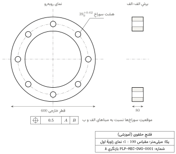
خواندنِ شکل 4.24. قطرِ خارجیِ ۶۰۰ میلیمتر بیرواداری آمده، پس رواداریِ عمومیِ جدولِ عنوان بر آن حاکم است. هشت سوراخ با قطرِ ۳۹ و رواداریِ «صفر تا +0.62» آمدهاند: هیچ سوراخی نباید کوچکتر از ۳۹ باشد. قابِ رواداری میگوید محورِ هر سوراخ باید درونِ استوانهای به قطرِ 0.5 mm حولِ جای درستش باشد، جایی که نسبت به مبناهای الف (سطحِ فلنج) و ب (محورِ قطعه) تعریف شده است. زبانِ نمادها و قاعدههای تفسیرِ رواداریهای هندسی در استانداردِ بینالمللیِ مربوط آمده است (بخش 4.10).
4.5.2 رواداری و انطباق
رواداری اختلافِ مجازِ میانِ بزرگترین و کوچکترین اندازهٔ قابلِپذیرش است. هیچ فرایندی اندازهٔ دقیق نمیسازد؛ رواداریِ تنگتر یعنی فرایندِ دقیقتر، بازرسیِ بیشتر و هزینهٔ بیشتر. پس رواداری باید فقط به اندازهٔ کارکرد تنگ باشد.
انطباق رابطهٔ دو قطعهای است که در هم میروند (سوراخ و محور). سه حالت داریم (شکل 4.25):
- لقیدار: کوچکترین سوراخ از بزرگترین محور بزرگتر است؛ همیشه بازی هست (پیچ در سوراخِ فلنج).
- تداخلی: بزرگترین سوراخ از کوچکترین محور کوچکتر است؛ همیشه با فشار یا گرم کردن جا میرود (یاتاقان روی محور).
- انتقالی: بسته به قطعههای واقعی، ممکن است کمی بازی یا کمی تداخل باشد (پینِ راهنما).
نظامِ بینالمللیِ رواداریها و انطباقها اندازهها را با کدِ حرف و عدد مشخص میکند و جدولهای استانداردِ خودش را دارد (بخش 4.10)؛ مثالهای این فصل حدها را مستقیم میدهند.
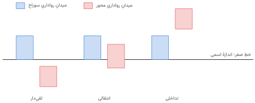
مثال 4.80 (سه انطباق در نیروگاهِ P) پرسش. با حدهای فرضیِ سوراخ و محور، نوعِ انطباق و دامنهٔ لقی یا تداخل را برای پیچِ M36 در سوراخِ فلنج، نشیمنگاهِ یاتاقانِ ۶۰۰ میلیمتری و یک پینِ راهنما بیابید. اگر موقعیتِ هر سوراخ تا 0.5 mm خطا داشته باشد، آیا پیچ از دو فلنجِ روی هم میگذرد؟
پاسخ.
hole and shaft limits (mm, assumed) and the resulting fit:
M36 bolt in a 39 mm flange hole: clearance +3.000 .. +4.240 mm -> clearance
bearing seat (shaft pressed in): clearance -0.124 .. -0.010 mm ->
interference
locating pin: clearance -0.015 .. +0.019 mm -> transition
two flanges, each hole position within 0.5 mm of nominal: the holes may
disagree by up to 1.0 mm; the 3.0 mm minimum clearance still passes
the bolt (a worst-case stack, chapter 2)تفسیر. لقیِ بزرگِ سوراخِ فلنج عمدی است: خطای موقعیتِ سوراخها در دو قطعه را جذب میکند (یک انباشتِ رواداریِ بدترین حالت، فصلِ ۲). در یاتاقان، تداخلِ 0.010 تا 0.124 mm یعنی همیشه با فشار جا میرود و نمیلغزد؛ بیش از حد تداخل، حلقه را ترک میدهد و کمتر از آن، میگذارد حلقه بچرخد و نشیمنگاه را بساید. پینِ راهنما گاهی آزاد و گاهی سفت است؛ برای جایابی خوب است، برای انتقالِ گشتاور نه.
4.5.3 پرداختِ سطح
هیچ سطحی صاف نیست؛ زیرِ میکروسکوپ کوه و دره دارد. زبری را با پارامترهای نیمرخِ سطح میسنجند؛ رایجترین آنها میانگینِ حسابیِ انحراف از خطِ میانه است:
\[ R_a = \frac{1}{L}\int_0^{L} |z(x)|\,\mathrm{d}x \tag{4.44}\]
و ریشهٔ میانگینِ مربعِ آن، \(R_q\). زبری بر اصطکاک، سایش، آببندی، خستگی (ترک از درّههای تیز آغاز میشود)، چسبندگیِ رنگ و مقاومتِ تماسِ اتصالهای الکتریکی اثر دارد. تعریفِ پارامترهای نیمرخ، فیلترها و طولِ ارزیابی در استانداردِ بینالمللیِ بافتِ سطح آمده است (بخش 4.10).
مثال 4.81 (زبریِ یک نیمرخِ اندازهگیریشده) پرسش. نیمرخی ساختگی (سینوسیِ 2 µm با طولِ موجِ 0.25 mm بهعلاوهٔ نوفه) را در طولِ 4 mm در نظر بگیرید. \(R_a\) و \(R_q\) را حساب و با مقدارهای تحلیلیِ یک سینوسیِ خالص مقایسه کنید.
پاسخ.
synthetic profile: 2 micrometre sine of 0.25 mm wavelength plus 0.5 micrometre
noise
Ra = mean |z| = 1.30 micrometre; Rq = rms = 1.49 micrometre
pure sine: Ra = 2A/pi = 1.27, Rq = A/sqrt(2) = 1.41
very different surfaces can share one Ra value: a drawing states the
parameter, the filter and the evaluation length together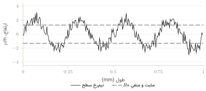
تفسیر. نوفه \(R_a\) را فقط کمی بالا برده است (1.30 در برابرِ 1.27 µm)، اما قلههای تیزِ نوفه (شکل 4.26) برای سایش و تماسِ الکتریکی مهماند و \(R_a\) آنها را نمیبیند. سطحهایی با شکلهای کاملاً متفاوت میتوانند یک \(R_a\) داشته باشند؛ از این رو نقشه پارامتر، فیلتر و طولِ ارزیابی را با هم میگوید.
- تفاوتِ نمای زاویهٔ اول و سوم را بگویید و چرا نقشه باید آن را اعلام کند.
- اندازهای که رواداریِ جداگانه ندارد، از کجا رواداری میگیرد؟
- قابِ رواداریِ موقعیت با قطرِ 0.5 mm چه میگوید؟ مبنا چیست؟
- سوراخِ 30.000 تا 30.021 و محورِ 29.980 تا 29.993: چه انطباقی است؟ کمترین و بیشترین لقی؟
- چرا رواداری را بیدلیل تنگ نمیکنیم؟
- \(R_a\) سینوسیِ با دامنهٔ 1 µm چیست؟
- چرا زبری بر مقاومتِ تماسِ اتصالِ الکتریکی اثر دارد؟
4.5.4 توانِ فرایند و نمودارِ کنترل
مسئله. فرایند هرگز دو قطعهٔ یکسان نمیسازد؛ اندازهها توزیعی دارند. پرسش این است: چه کسری از قطعهها بیرون از حدهای مشخصات میافتند؟ توانِ فرایند این را با دو شاخص میسنجد:
\[ \begin{aligned} C_p &= \frac{\text{USL} - \text{LSL}}{6\sigma} \\ C_{pk} &= \frac{\min(\text{USL} - \mu,\ \mu - \text{LSL})}{3\sigma} \end{aligned} \tag{4.45}\]
USL و LSL حدِ بالا و پایینِ مشخصاتاند، \(\mu\) میانگین و \(\sigma\) انحرافِ معیارِ فرایند. \(C_p\) فقط پهنای توزیع را با پهنای مشخصات مقایسه میکند؛ \(C_{pk}\) جای میانگین را هم میبیند. با توزیعِ نرمال، \(C_{pk} = 1\) یعنی حدودِ یک در هزار بیرون از یک حد، و \(C_{pk} = 1.33\) حدودِ سی در میلیون. شاخصها فقط برای فرایندی معنا دارند که پایدار باشد.
نمودارِ کنترل. برای اینکه بدانیم فرایند پایدار است، نمونههای کوچکی (مثلاً ۵ قطعه) را در فاصلههای منظم میسنجیم و میانگینِ هر زیرگروه (\(\bar{x}\)) را روی نمودار میگذاریم. حدهای کنترل از دادهٔ خودِ فرایند (نه از مشخصات) حساب میشوند: \(\bar{\bar{x}} \pm A_2\bar{R}\) که \(\bar{R}\) میانگینِ گسترهٔ زیرگروهها و \(A_2\) ضریبی وابسته به اندازهٔ زیرگروه است (\(0.577\) برای ۵). نقطهٔ بیرون از حدها یا الگوهای غیرِتصادفی یعنی «علتِ خاصی» وارد شده است. این همان آزمونِ فرضِ فصلِ ۳ است که پیوسته اجرا میشود.
مثال 4.82 (پیشکشیدگیِ پیچها در کارگاهِ نصب) پرسش. پیشکشیدگیِ پیچهای یک فلنج در ۲۵ زیرگروهِ پنجتایی اندازهگیری شده است (ساختگی، A-060). مشخصات 475 ± 47.5 kN است. از زیرگروهِ ۱۹ به بعد، ابزار عوض شده است. توانِ فرایند را پیش و پس از تغییر و نمودارِ کنترل را بسازید.
پاسخ.
bolt preload measured on 25 subgroups of 5 bolts (kN; synthetic, A-060)
specification 475 +- 47.5 kN; first 18 subgroups: Cp 1.27, Cpk 1.15,
expected 299 ppm outside
last 7 subgroups (mean moved +15 kN): Cp 1.11, Cpk 0.71, 16,725 ppm
X-bar chart from the first 18: centre 479.7, limits 462.8 .. 496.5 (A2 =
0.577 for n = 5)
subgroups outside the limits: 21, 23
Cp ignores where the mean is; Cpk punishes an off-centre process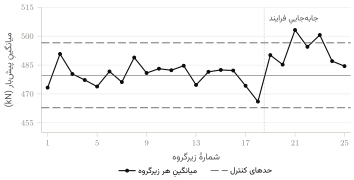
تفسیر. پیش از تغییر، \(C_{pk} = 1.15\) (حدودِ ۳۰۰ در میلیون بیرون): قابلِقبولِ مرزی. پس از جابهجاییِ 15 kN، پهنا تقریباً همان است اما \(C_{pk}\) به 0.71 میافتد و حدودِ ۱٫۷ درصد پیچها بیرون از مشخصاتاند. نمودارِ کنترل تغییر را در زیرگروههای ۲۱ و ۲۳ نشان میدهد (شکل 4.27)، پیش از آنکه کسی همهٔ پیچها را دوباره بسنجد. برای سریهای کوچک، نمونهٔ ۹۰ عددی برآوردِ \(\sigma\) را کمدقت میکند؛ بازهٔ اطمینانِ شاخصها را هم باید دید (فصلِ ۳).
4.5.5 بازرسیِ غیرمخرب و احتمالِ آشکارسازی
آزمونِ غیرمخرب عیبها را بیآسیب به قطعه پیدا میکند. هر روش اصلِ فیزیکیِ خودش، عیبهایی که خوب میبیند و محدودیتهایش را دارد:
| روش | اصلِ فیزیکی | خوب میبیند | محدودیت |
|---|---|---|---|
| چشمی | نور و چشمِ آموزشدیده | عیبهای سطحی، شکلِ جوش | فقط سطح |
| مایعِ نافذ | مویینگی در ترکِ باز | ترکِ سطحی در هر مادهی نامتخلخل | ترکِ بسته یا زیرِ سطح |
| ذرهٔ مغناطیسی | نشتِ شار در ترک | ترکِ سطحی و نزدیکِ سطح در فولاد | فقط مواد مغناطیسی |
| فراصوتی | بازتابِ موجِ صوتی | عیبهای درونی، ضخامت | نیاز به اپراتورِ ماهر و سطحِ مناسب |
| پرتونگاری | جذبِ پرتو | حفره و تخلخل در جوش | ترکِ عمود بر پرتو (صفحهٔ ترک موازیِ فیلم)؛ ایمنیِ پرتو |
| جریانِ گردابی | تغییرِ امپدانسِ پیچه | ترکِ سطحی در رساناها | عمقِ کم |
هیچ روشی هر عیبی را با اطمینانِ کامل نمییابد. احتمالِ آشکارسازی تابعی از اندازهٔ عیب است و با آزمایش روی نمونههای دارای عیبِ معلوم سنجیده میشود؛ عددِ کلیدی \(a_{90}\) است: اندازهای که با احتمالِ ۹۰ درصد آشکار میشود. نتیجهٔ بازرسی به صلاحیتِ بازرس هم بستگی دارد؛ استانداردِ بینالمللیِ صلاحیت و گواهیدهیِ کارکنانِ آزمونِ غیرمخرب در بخش 4.10 آمده است.
مثال 4.83 (آیا بازرسی ترکِ بحرانی را پیش از شکست میبیند؟) پرسش. منحنیِ آشکارسازیِ لگ-لجستیک با \(a_{50} = 1.5\ \text{mm}\) و پهنای \(0.4\) (فرضی) را در نظر بگیرید. \(a_{90}\) و احتمالِ یافتنِ ترکِ یکمیلیمتری چیست؟ با ترکهای بحرانیِ مثال 4.46 مقایسه کنید.
پاسخ.
probability of detection POD(a) = 1 / (1 + exp(-(ln a - ln a50) / s))
(assumed)
a50 = 1.5 mm, s = 0.4: a90 = a50 exp(s ln 9) = 3.61 mm
a crack of 1 mm is found with probability 0.27
compared with the critical cracks of b_fracture (5.7 .. 63 mm), a90 leaves a
margin for growth between inspections; for the 5.7 mm case the margin is
thin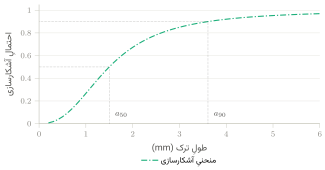
تفسیر. ترکِ یکمیلیمتری فقط با احتمالِ ۲۷ درصد دیده میشود و \(a_{90}\) حدودِ 3.6 mm است (شکل 4.28). اگر ترکِ بحرانی ۶۳ میلیمتر باشد، فرصتِ زیادی برای کشف هست؛ اگر ۶ میلیمتر (فولادِ کمچقرمه در سرما)، فاصلهٔ «قابلِ آشکارسازی» تا «بحرانی» تنها دو و نیم میلیمتر است و بازههای بازرسی باید بسیار کوتاه یا ماده بهتر باشد. این پیوندِ مکانیکِ شکست، آمار و بازرسی است: معیارِ پذیرش، روشِ بازرسی و بازهٔ آن با هم طراحی میشوند.
4.5.6 اتصالها و دسترسی برای بازرسی
اتصالها جاییاند که بیشترِ خرابیها آغاز میشوند: جوش (تمرکزِ تنش، عیبِ جوش، تغییرِ ریزساختار)، پیچ (پیشکشیدگیِ نادرست، شل شدن، خستگی)، اتصالِ الکتریکی (مقاومتِ تماس، خوردگی، خزش)، و چسب (آمادهسازیِ سطح، پیری). دو اصلِ طراحی: (۱) طراحی برای ساخت: شکلی که فرایندِ انتخابشده بتواند با کیفیتِ پایدار بسازد (پخِ مناسبِ جوش، فضای آچار، شعاعِ خمِ مجاز)؛ (۲) طراحی برای بازرسی: جایی برای پروبِ فراصوتی، دیدِ چشمی، دسترسیِ گرمانگاری و اندازهگیری. جوشی که نمیتوان بازرسی کرد، از نظرِ کیفیت جوشِ «نامعلوم» است.
از نیت تا شاهد. زنجیرهٔ کاملِ یک قطعه: نیازمندی (چه کاری، در چه محیطی، چه مدت) ← طراحی (ماده، شکل، رواداری، پرداخت) ← مشخصات (ماده، فرایند، معیارِ پذیرش) ← برنامهٔ بازرسی و آزمون (چه چیزی، با چه روشی، کِی، توسطِ چه کسی، با چه معیاری، چه سندی) ← سوابق (گواهینامهٔ ماده، گزارشِ بازرسی، نامنطبقها و تصمیمها). فصلهای ۳۸ تا ۴۸ این زنجیره را برای هر تجهیز کامل میکنند؛ اینجا اسکلتش را برای یک قطعه میسازیم (بخش 4.11).
- \(C_p\) و \(C_{pk}\) فرایندی با \(\sigma = 0.01\) و مشخصاتِ \(10.00 \pm 0.05\) که میانگینش 10.02 است، چیست؟
- چرا حدهای کنترل از دادهٔ فرایند حساب میشوند و نه از مشخصات؟
- برای یافتنِ ترکِ سطحی در یک قطعهٔ آلومینیومی کدام روشها مناسباند و کدام نه؟
- چرا پرتونگاری ترکی را که صفحهاش عمود بر پرتو است خوب نمیبیند، اما ترکِ موازی با پرتو را میبیند؟
- \(a_{90}\) چیست و چرا از \(a_{50}\) مهمتر است؟
- «طراحی برای بازرسی» را با یک مثال از برج یا تابلو توضیح دهید.
- پنج حلقهٔ زنجیرهٔ «از نیت تا شاهد» را نام ببرید.
4.5.7 توانِ اندازهگیری: آیا ابزار میتواند تصمیم بگیرد؟
مسئله. بازرس با ابزاری اندازه میگیرد که خودش عدمِ قطعیت دارد (فصلِ ۲). اگر عدمِ قطعیتِ ابزار با رواداری قابلِ مقایسه باشد، اندازهگیری نمیتواند خوب را از بد جدا کند. شاخصِ ساده نسبتِ رواداری به عدمِ قطعیتِ آزمون است: پهنای رواداری تقسیم بر دو برابرِ عدمِ قطعیتِ گسترده. هدفِ رایج چهار یا بیشتر است. اگر کمتر باشد، یا ابزار را عوض میکنیم، یا نوارِ محافظ میگذاریم: فقط قطعهای را میپذیریم که اندازهاش به اندازهٔ عدمِ قطعیت از حدها دور باشد (قاعدهٔ تصمیمِ محافظتشدهٔ فصلِ ۲). مطالعهٔ تکرارپذیری و بازتولیدپذیریِ سنجه (همان ابزار، چند بازرس، چند بار) این عدمِ قطعیت را در عمل میسنجد.
مثال 4.84 (سه ابزار برای یک سوراخِ دقیق) پرسش. سوراخی با رواداریِ 0.021 mm را با کولیس (±0.030 mm)، میکرومترِ داخلی (±0.004 mm) و دستگاهِ اندازهگیریِ مختصاتی (±0.002 mm) (عدمِ قطعیتهای گستردهٔ فرضی) بسنجید. نسبت و پهنای منطقهٔ پذیرشِ محافظتشده چیست؟
پاسخ.
hole tolerance 0.021 mm; test uncertainty ratio TUR = tolerance / (2 U):
caliper U = 0.030 mm: TUR 0.35; guarded acceptance zone 0.000 mm
micrometer U = 0.004 mm: TUR 2.62; guarded acceptance zone 0.013 mm
coordinate machine U = 0.002 mm: TUR 5.25; guarded acceptance zone 0.017 mm
a ratio of 4 or more is a common aim; below 1 the instrument cannot decideتفسیر. کولیس برای این رواداری بیفایده است: عدمِ قطعیتش بیش از کلِ رواداری است و هیچ قطعهای را نمیتوان با اطمینان پذیرفت. میکرومتر کار میکند اما منطقهٔ پذیرش را به 0.013 mm میرساند و قطعههای خوبِ نزدیکِ حد رد میشوند. انتخابِ ابزار بخشی از برنامهٔ بازرسی است، نه سلیقهٔ بازرس؛ و رواداریای که ابزارِ مناسب برای سنجشش نیست، عملاً وجود ندارد.
4.5.8 نمونهگیریِ پذیرش
مسئله. وقتی هزاران قطعه (پیچ، کانکتور، ماژول) میرسد، همه را نمیتوان آزمود. در نمونهگیریِ یکمرحلهای، \(n\) قطعه را بهتصادف برمیداریم و اگر شمارِ معیوبها حداکثر \(c\) باشد، انباشته را میپذیریم. احتمالِ پذیرشِ انباشتهای با کسرِ معیوبِ \(p\) از توزیعِ دوجملهای (بخش 3.4.7) میآید:
\[ P_a(p) = \sum_{k=0}^{c} \binom{n}{k} p^{k}(1 - p)^{n-k} \tag{4.46}\]
نمودارِ \(P_a\) بر حسبِ \(p\)، منحنیِ مشخصهٔ عملیاتی برنامه است. برنامهٔ ایدهآل انباشتهٔ خوب را همیشه میپذیرد و بد را همیشه رد میکند (منحنیِ پلهای)؛ برنامههای واقعی شیب دارند و دو خطا دارند: رد کردنِ انباشتهٔ خوب (خطرِ تولیدکننده) و پذیرفتنِ انباشتهٔ بد (خطرِ خریدار).
مثال 4.85 (سه برنامهٔ نمونهگیری برای کانکتورها) پرسش. احتمالِ پذیرش را برای برنامههای (۲۰، صفر)، (۵۰، یک) و (۱۲۵، سه) در کسرهای معیوبِ نیم، یک، دو و پنج درصد بیابید.
پاسخ.
single sampling plans: accept the lot if the sample has at most c defectives
plan p = 0.5 % 1 % 2 % 5 %
n 20, c 0 0.905 0.818 0.668 0.358
n 50, c 1 0.974 0.911 0.736 0.279
n 125, c 3 0.996 0.963 0.759 0.124
bigger samples separate good and bad lots more sharply (steeper curve)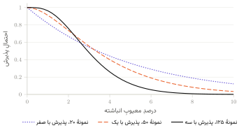
تفسیر. برنامهٔ کوچکِ «۲۰ با صفر» انباشتهای با ۵ درصد معیوب را با احتمالِ ۳۶ درصد میپذیرد؛ برنامهٔ ۱۲۵تایی فقط ۱۲ درصد. اما همان برنامهٔ بزرگ انباشتهٔ خوبِ نیمدرصدی را تقریباً همیشه میپذیرد (شکل 4.29). نمونهگیری کیفیت نمیسازد؛ فقط انباشتههای بد را با احتمالی کنار میگذارد. کیفیتِ پایدار از کنترلِ فرایند نزدِ سازنده میآید (بخش 4.5.4) و نمونهگیری وارسیِ آن است. جدولهای استانداردِ نمونهگیری این برنامهها را نظاممند کردهاند (فصلِ ۴۰).
4.5.9 انباشتِ رواداری در مونتاژ
در فصلِ ۲ دیدیم رواداریها در زنجیره جمع میشوند: بدترین حالت (جمعِ مطلقها) همیشه امن است اما گران؛ جمعِ ریشهٔ مربعی فرض میکند انحرافها مستقلاند و همزمان بدترین نمیشوند. در مونتاژِ واقعی، پرسشِ طراحی این است که کدام حلقه را تنگ کنیم و کجا تنظیم (سوراخِ لوبیایی، واشرِ پرکننده) بگذاریم.
مثال 4.86 (زنجیرهٔ نصبِ سازهٔ خورشیدی) پرسش. جای ماژول روی سازه از چهار حلقه اثر میپذیرد: جای شمع (±20 mm)، براکت (±3)، سوراخِ ریل (±2) و گیره (±1.5 mm) (فرضی، A-068). انباشتِ بدترین حالت، جمعِ ریشهٔ مربعی و شبیهسازیِ مونتکارلو با توزیعِ یکنواخت را مقایسه کنید.
پاسخ.
PV mounting chain (A-068): pile +-20, bracket +-3, rail hole +-2, clamp +-1.5
mm
worst case 26.5 mm; root-sum-square 20.4 mm
Monte Carlo (uniform parts): 99.73 % of assemblies within +-23.4 mm
the pile dominates: slotted brackets absorb it; tighter parts elsewhere
buy almost nothing (a tolerance budget spends on the largest term first)تفسیر. شمع ۷۵ درصدِ بدترین حالت را میسازد؛ تنگ کردنِ سه حلقهٔ دیگر تقریباً هیچ اثری ندارد. راهِ ارزان این است که براکت سوراخِ لوبیایی با بازهٔ تنظیمِ بیش از ۲۰ میلیمتر داشته باشد تا خطای کوبشِ شمع در نصب جذب شود. این بودجهبندیِ رواداری است: رواداری را آنجا خرج کنید که بزرگترین سهم را دارد.
- نسبتِ رواداری به عدمِ قطعیت برای رواداریِ 0.1 mm و عدمِ قطعیتِ گستردهٔ 0.01 mm چیست؟
- نوارِ محافظ چه هزینهای دارد؟
- احتمالِ پذیرشِ انباشتهای با یک درصد معیوب در برنامهٔ (۲۰، صفر) چیست؟
- «خطرِ تولیدکننده» و «خطرِ خریدار» را تعریف کنید.
- چرا نمونهگیری جایگزینِ کنترلِ فرایند نیست؟
- در مثال 4.86، اگر رواداریِ شمع به ±۱۰ برسد، بدترین حالت و جمعِ ریشهٔ مربعی چه میشوند؟
4.5.10 موقعیتِ واقعیِ سوراخ: دایره، نه مربع
رواداریِ موقعیت در قابِ شکل 4.24 یک استوانه به قطرِ 0.5 mm است، نه مربعی با ضلعِ 0.5. اگر محورِ سوراخ به اندازهٔ \(\Delta x\) و \(\Delta y\) از جای درست فاصله داشته باشد، قطرِ موقعیت \(2\sqrt{\Delta x^{2} + \Delta y^{2}}\) است و با قطرِ رواداری مقایسه میشود. دلیلِ این تعریف کارکرد است: پیچ در هر جهتی که سوراخ جابهجا شده باشد، به اندازهٔ لقی جا دارد؛ منطقهٔ مجاز گرد است.
مثال 4.87 (چهار سوراخِ اندازهگیریشده) پرسش. جابهجاییِ چهار سوراخ اندازهگیری شده است. قطرِ موقعیت را حساب کنید و رأیِ پذیرش بدهید.
پاسخ.
true position = 2 sqrt(dx^2 + dy^2), tolerance diameter 0.5 mm:
hole 1: dx +0.10, dy +0.12 mm -> 0.312 mm accept
hole 2: dx +0.18, dy -0.20 mm -> 0.538 mm reject
hole 3: dx -0.05, dy +0.22 mm -> 0.451 mm accept
hole 4: dx +0.21, dy +0.17 mm -> 0.540 mm reject
hole 4 fails though each coordinate is within +-0.25: position is a circle,
not a square, around the true locationتفسیر. سوراخهای ۲ و ۴ با وجودِ اینکه هر مختصهشان کمتر از 0.25 mm خطا دارد، رد میشوند: گوشههای مربع بیرون از دایرهاند. بازرسی که فقط مختصهها را جداگانه با «±۰٫۲۵» بسنجد، قطعهٔ نامنطبق را میپذیرد. زبانِ رواداریهای هندسی برای همین دقیق تعریف شده است (بخش 4.10). اگر رواداری در بیشینهٔ ماده تعریف شده باشد، سوراخِ بزرگتر رواداریِ موقعیتِ بیشتری میگیرد؛ این ظرافت در فصلِ ۳۸ میآید.
4.5.11 اندازهگیریِ ضخامت با فراصوت
اصل. کاوشگرِ فراصوتی پالسِ صوتیِ کوتاهی به قطعه میفرستد؛ پالس از دیوارهٔ پشت بازمیگردد. ضخامت نصفِ زمانِ رفتوبرگشت ضربِ سرعتِ صوت در ماده است: \(t = v\,\Delta\tau/2\). همین اصل با زاویههای دیگر، ترکها و حفرههای درونِ جوش و ریختهگری را هم پیدا میکند (جدول 4.4). برای خوردگیِ لولهها، مخزنها و پایهها، اندازهگیریِ ضخامتِ باقیمانده بینیاز به دسترسی از پشت، ابزارِ اصلی است.
مثال 4.88 (ضخامتِ باقیماندهٔ ورق) پرسش. با سرعتِ صوتِ طولی در فولاد حدودِ 5920 m/s، زمانهای رفتوبرگشتِ ۱۳٫۵۱، ۱۲٫۸۰ و ۱۲٫۲۰ میکروثانیه چه ضخامتهاییاند؟
پاسخ.
ultrasonic thickness, longitudinal wave in steel about 5920 m/s:
round-trip time 13.51 microseconds -> 40.0 mm
round-trip time 12.80 microseconds -> 37.9 mm
round-trip time 12.20 microseconds -> 36.1 mm
1 microsecond of timing error = 2.96 mm of thickness
calibrate on a block of known thickness: the sound speed depends on the
material and temperature, and coatings add their own delayتفسیر. ورقِ ۴۰ میلیمتری در دو نقطه ۲ و ۴ میلیمتر نازکتر است. یک میکروثانیه خطای زمان تقریباً سه میلیمتر خطای ضخامت است؛ پس دستگاه روی بلوکِ مرجع با ضخامتِ معلوم کالیبره میشود و دمای قطعه و پوشش (که سرعتِ صوتِ متفاوتی دارد) در نظر گرفته میشود. همان زنجیرهٔ اندازهگیری، عدمِ قطعیت و کالیبراسیونِ فصلِ ۲، در دستِ بازرسِ صلاحیتدار (بخش 4.10).
- سوراخی با \(\Delta x = 0.2\) و \(\Delta y = 0.1\) میلیمتر در رواداریِ موقعیتِ 0.5 mm پذیرفته میشود؟
- چرا منطقهٔ رواداریِ موقعیت گرد است؟
- ضخامتِ متناظر با زمانِ رفتوبرگشتِ ۱۰ میکروثانیه در فولاد چیست؟
- چرا دستگاهِ فراصوتی روی بلوکِ مرجع کالیبره میشود؟
4.5.12 از گواهینامهٔ کارخانه تا روشِ جوشکاری: همارزِ کربن
ردیابی. هر ورقِ فولادِ برج یک شمارهٔ ذوب دارد که روی ورق حک و در گواهینامهٔ کارخانه ثبت شده است: ترکیبِ شیمیایی، خواصِ مکانیکی (بخش 4.3.1) و آزمونِ ضربه. بازرسِ ورودی شمارهٔ روی ورق را با گواهی تطبیق میدهد؛ ورقی که شمارهٔ ذوبش با هیچ گواهیای نمیخواند، نامنطبق است تا روشن شود. ردیابی تا قطعهٔ نهایی (کدام ورق در کدام بخشِ برج) بخشی از سوابقِ ساخت است (فصلهای ۳۸ و ۴۷).
از ترکیب به جوشپذیری. عناصرِ آلیاژی سختشوندگیِ ناحیهٔ متأثر از گرما را بالا میبرند. شاخصِ رایجِ همارزِ کربن اثرِ آنها را با کربن جمع میکند:
\[ \text{CE} = \text{C} + \frac{\text{Mn}}{6} + \frac{\text{Cr} + \text{Mo} + \text{V}}{5} + \frac{\text{Ni} + \text{Cu}}{15} \tag{4.47}\]
(درصدِ جرمی). همارزِ کربنِ بیشتر یعنی ناحیهٔ سختتر و خطرِ بیشترِ ترکِ سرد (ترکِ تأخیری با هیدروژن)؛ روشِ جوشکاری پیشگرم و گرمای ورودی را با توجه به آن، ضخامت و هیدروژنِ مصرفکنندهها تعیین میکند.
مثال 4.89 (دو ذوب، دو پیشگرم) پرسش. با ترکیبهای فرضیِ دو ذوب (A-085)، همارزِ کربن را حساب کنید. اگر روشِ جوشکاری برای همان ضخامت فقط برای ذوبِ کمکربنتر تأیید شده باشد، با ذوبِ دیگر چه باید کرد؟
پاسخ.
carbon equivalent CE = C + Mn/6 + (Cr + Mo + V)/5 + (Ni + Cu)/15 (mass %)
(a widely used weldability indicator; certificate values assumed, A-085)
heat A: C 0.18, Mn 1.45 -> CE 0.453
heat B: C 0.12, Mn 1.30 -> CE 0.355
higher CE: a harder heat-affected zone and more risk of cold cracking; the
welding procedure sets preheat from CE, thickness and heat inputتفسیر. اختلافی به ظاهر کوچک (شش صدمِ درصد کربن و پانزده صدمِ درصد منگنز) همارزِ کربن را حدودِ ۰٫۱ بالا برده است. روشِ جوشکاریِ تأییدشده برای ذوبِ B را نمیتوان بیبررسی برای ذوبِ A بهکار برد: یا روشِ تأییدشدهٔ دیگری با پیشگرمِ بیشتر لازم است، یا تأییدِ مهندسِ جوش. این زنجیره (گواهی ← ترکیب ← شاخص ← روش ← سابقه) همان «از نیت تا شاهد» است.
4.5.13 تحلیلِ حالتهای خرابیِ فرایند
تحلیلِ حالتها و اثرهای خرابی (به انگلیسی FMEA) برای هر گامِ فرایند میپرسد: چه چیزی ممکن است خراب شود؟ اثرش چقدر شدید است؟ چقدر رخ میدهد؟ چقدر احتمال دارد پیش از رسیدن به مشتری کشف شود؟ هر کدام از یک تا ده امتیاز میگیرند و حاصلضربشان عددِ اولویتِ خطر است. کار با فهرستِ اقدامها ادامه مییابد که شدت را کم نمیکنند (مگر با طراحیِ دوباره) اما رخداد یا کشف را بهتر میکنند.
مثال 4.90 (تحلیلِ خرابیِ فرایندِ اتصالِ پیچیِ شینه) پرسش. پنج حالتِ خرابیِ نصبِ اتصالِ پیچیِ شینه را با امتیازهای فرضی (A-086) رتبهبندی کنید و اثرِ بهبودِ کشف در دو حالتِ بالا را ببینید.
پاسخ.
process FMEA, busbar bolted joint: RPN = severity x occurrence x detection
(scores 1..10 assumed, A-086; higher = worse)
failure mode S O D RPN
hot joint missed by thermography 8 4 7 224
dirty or oxidised contact surface 8 4 6 192
low bolt preload 8 5 4 160
Al-Cu contact without transition 7 3 5 105
wrong washer type 6 3 3 54
after actions (detection improved for the two highest):
dirty or oxidised contact surface: D 6 -> 3, RPN 192 -> 96 (cleaning step
with sign-off)
hot joint missed by thermography: D 7 -> 3, RPN 224 -> 96 (taped targets,
load record)
RPN ranks attention; a severity-10 mode deserves action whatever its RPNتفسیر. بالاترین خطر از کشف نکردن میآید، نه از خودِ خطا: گرمانگاریِ بیبرچسب و بیثبتِ بار (مثال 4.36) و تمیزکاریِ بیامضا. اقدامها هر دو را نصف میکنند. عددِ اولویتِ خطر ابزارِ رتبهبندی است، نه اندازهگیریِ خطر: حالتِ با شدتِ بسیار زیاد (آتش، آسیبِ انسانی) حتی با عددِ کم اقدام میخواهد. این تحلیل در فصلِ ۴۰ برای فرایندهای کارخانه گسترش مییابد.
4.5.14 بازبینیِ محاسبه: شش خطای رایج
بازبینیِ مستقلِ محاسبه (فصلِ ۲) بیش از هر چیز با چند پرسشِ ساده خطا را میگیرد: یکا درست است؟ در حالتِ حدی (صفر، بینهایت، مقدارِ شناختهشده) معقول است؟ مرتبهٔ بزرگی با تجربه میخواند؟ مثالِ زیر شش خطای واقعینما را با این پرسشها نشان میدهد.
مثال 4.91 (شش خطا و بهایشان) پرسش. این شش خطا را در محاسبههای این فصل بازسازی کنید و بزرگیِ اثرِ هر کدام را بسنجید: (۱) دمای سلسیوس در قانونِ گاز؛ (۲) رانش با توانِ سومِ تندی؛ (۳) دامنهٔ تنش بهجای گسترهٔ تنش در منحنیِ تنش-عمر؛ (۴) psi بهجای مگاپاسکال؛ (۵) قطر بهجای شعاع در اثرِ پوستی؛ (۶) توانِ سینوسی با حاصلضربِ مقدارهای اوج.
پاسخ.
six calculation errors and what they cost:
1 gas law with C, not K: rho 20.4 instead of 1.061 kg/m3
2 thrust with v^3, not v^2: 9,879 kN instead of 898 kN
3 S-N with amplitude, not range: damage 0.011 instead of 0.089 (x 8)
4 3600 psi read as MPa: 145 x too strong
5 skin effect with the diameter as radius: R_ac/R_dc 1.79 instead of 1.10
6 power of a sine as peak V x peak I: 2 x the true average power
each is caught by a unit check, a limiting case or an order-of-magnitude
lookتفسیر. خطاهای ۱ و ۴ با یکا گرفته میشوند (چگالیِ هوای ۲۰ کیلوگرم بر مترمکعب، پلیمری قویتر از فولاد)؛ خطای ۲ با مرتبهٔ بزرگی (رانشِ ده هزار کیلونیوتنی، وزنِ هزار تن، روی یک روتور؟)؛ خطای ۳ هشت برابر آسیب را کم میگیرد و پنهانترین است، چون عددش «معقول» به نظر میرسد؛ خطای ۵ با حالتِ حدی (رسانای کوچک باید نسبتی نزدیکِ یک بدهد)؛ و خطای ۶ با تعریفِ مقدارِ مؤثر (بخش 3.3.13). درس: خطرناکترین خطا آن است که نتیجهٔ معقولنما میدهد؛ برای همین هر محاسبهٔ مهم باید با روشی مستقل وارسی شود.
- چرا بازرس شمارهٔ ذوبِ روی ورق را با گواهی تطبیق میدهد؟
- همارزِ کربنِ فولادی با کربنِ ۰٫۲ و منگنزِ ۱٫۲ درصد (بیعنصرِ دیگر) چیست؟
- چرا تحلیلِ حالتهای خرابی شدت را با اقدامهای بازرسی کم نمیکند؟
- کدام یک از شش خطای مثال 4.91 با وارسیِ یکا پیدا نمیشود؟
4.5.15 تختیِ فلنج از نقطههای اندازهگیریشده
مسئله. تختیِ سطحِ فلنجِ برج تعیین میکند پیچها یکنواخت بارگذاری شوند یا نه (مثال 4.62). نقشهبردار ارتفاعِ سطح را در چند نقطه میسنجد. اما گسترهٔ خامِ ارتفاعها کجیِ کلِ فلنج را هم در بر دارد، که موضوعِ تختی نیست (کجی را قائم بودنِ برج و تنظیمِ فونداسیون جبران میکند). راه: صفحهای را که کمترین مربعاتِ فاصله را با نقطهها دارد بیابیم (بخش 3.3.3) و تختی را گسترهٔ فاصلههای نقطهها از این صفحه بگیریم. استانداردِ رواداریهای هندسی تختی را با «منطقهٔ کمینه» تعریف میکند (دو صفحهٔ موازی با کمترین فاصله که همهٔ نقطهها را در بر بگیرند)؛ برازشِ کمترین مربعات تقریبی محافظهکارانه از آن است.
مثال 4.92 (شانزده نقطه روی فلنج) پرسش. ارتفاعِ سطحِ بالاییِ فلنجی به قطرِ 4.7 m در ۱۶ نقطه اندازهگیری شده است (ساختگی، A-088). گسترهٔ خام، شیبهای صفحهٔ برازششده و تختی را بیابید و با رواداریِ فرضیِ 1.0 mm مقایسه کنید.
پاسخ.
tower flange top surface surveyed at 16 points on a 4.7 m circle (synthetic,
A-088)
raw height range (tilt included): 2.32 mm
least-squares plane z = a + b x + c y: tilt 0.405 and -0.212 mm/m
flatness = range of residuals about the plane: 0.55 mm
tolerance 1.0 mm (assumed): the raw range would reject a flat but tilted
flange;
tilt is checked separately (verticality of the tower), waviness by flatness
(a minimum-zone evaluation can give a slightly smaller value than least
squares)تفسیر. گسترهٔ خام 2.3 mm فلنج را رد میکرد، اما بیشترِ آن کجیِ نیم میلیمتر بر متر است؛ تختیِ واقعی 0.55 mm و پذیرفتنی است. خطای وارونه هم ممکن است: بازرسی که فقط چند نقطهٔ کنارِ هم را ببیند، موجِ بلندِ سطح را از دست میدهد. پس روشِ ارزیابی (تعدادِ نقطه، جای آنها، الگوریتمِ برازش) بخشی از معیارِ پذیرش است و باید در برنامهٔ بازرسی نوشته شود (جدول 4.5). این همان کمترین مربعاتِ فصلِ ۳ است که در کارگاه بهکار میرود.
- چرا گسترهٔ خامِ ارتفاعها معیارِ تختی نیست؟
- برازشِ صفحه با کمترین مربعات چند مجهول دارد و دستکم چند نقطه لازم است؟
- تفاوتِ «منطقهٔ کمینه» و «کمترین مربعات» در ارزیابیِ تختی چیست؟
- چرا تعداد و جای نقطههای اندازهگیری باید در برنامهٔ بازرسی بیاید؟
4.6 نیروگاهِ P: سه مثالِ یکپارچه
مثال 4.93 (مقدماتی: یک توربین در یک سال، از باد تا برق) پرسش. برای یک توربینِ WT-5.0-150 با دادهٔ ساعتیِ بستهٔ داده (سناریوی S0): چگالیِ هوا در ارتفاعِ توپی، چگالیِ توانِ باد، انرژیِ سالانهای که از سطحِ روتور میگذرد، سقفِ بتز، خروجیِ توربین با منحنیِ توانِ اصلاحشده برای چگالی و ضریبِ ظرفیت را بیابید. اثرِ برشِ باد روی سطحِ روتور (تندیِ همارزِ روتور) چقدر است؟
پاسخ. چگالیِ ساعتی از معادلهٔ 4.4 و معادلهٔ 4.5، توانِ باد از \(\tfrac12\rho v^{3}\)، خروجی از معادلهٔ 4.6، و اثرِ برش با میانگینگیریِ \(v^{3}\) روی دیسکِ روتور با قانونِ توانیِ مثال 4.8:
one WT-5.0-150 at Plant P through the data-pack year (S0, synthetic data):
mean hub density 1.046 kg/m3; mean wind power density 341 W/m2
energy carried through the rotor area: 52.8 GWh/yr
Betz limit 16/27 of it: 31.3 GWh/yr
turbine output (density-corrected power curve, no farm losses): 16.68 GWh/yr
capture: 31.6% of the wind, 53.3% of the Betz limit
capacity factor 38.1%
shear alpha 0.171: cube of the speed averaged over the disc = 0.9805 x hub;
rotor-equivalent speed = 0.9935 x hub speed (-0.65 %)
most of the wind's energy is never captured: above rated speed the turbine
sheds it on purpose, and below cut-in there is nothing to gainتفسیر. از 52.8 GWh انرژیِ بادِ گذرنده، توربین 16.7 GWh برق میسازد: ۳۲ درصدِ باد و ۵۳ درصدِ سقفِ بتز. فاصله با بتز سه دلیل دارد: ساعتهای بالای تندیِ اسمی که توربین عمداً انرژی را رها میکند، ساعتهای زیرِ تندیِ راهاندازی، و تلفاتِ آیرودینامیکی و الکتریکی (مثال 4.4). ضریبِ ظرفیتِ ۳۸ درصد (پیش از تلفاتِ مزرعه) معقول است. برشِ میانگین، تندیِ همارزِ روتور را فقط 0.65 % از تندیِ توپی کمتر میکند؛ اما شبها برش دو برابر است و برای بار و خستگی مهمتر از انرژی است. وارسی: با قانونِ پایستگی، خروجی نمیتواند از سقفِ بتز بیشتر باشد و نیست.
مثال 4.94 (میانی: شینهٔ اصلیِ ۳۳ کیلوولت در سراسرِ سال) پرسش. جریانِ ساعتیِ شینهٔ اصلیِ ۳۳ کیلوولتِ پست (همهٔ صادراتِ نیروگاه، ضریبِ توانِ 0.95) را از بستهٔ داده بسازید. اتاقِ تابلو ۱۵ درجه گرمتر از هواست و حدِ دمای فرضیِ شینه 90 °C است (A-061). چهار گزینهٔ شینه را با معادلهٔ 4.11 ساعت به ساعت بسنجید.
پاسخ.
33 kV main busbar: export current I = P / (sqrt3 x 33 kV x 0.95); peak 1842 A
room = air + 15 K, cooling h = 10.0 W/m2K, limit 90 C (A-061); steady state
each hour
option R20 (micro-ohm/m) T max (C) hours > limit kg/m
Cu 80 x 10 21.50 106.3 58 7.2
Cu 2 x (80 x 10) 10.75 64.4 0 14.3
Al 100 x 10 28.20 111.5 82 2.7
Al 2 x (100 x 10) 14.10 65.3 0 5.4
the hottest hours are windy summer middays: high current and a warm room
bar spacing, enclosure ventilation and the standard's rating method decide
the final rating (chapter 24); this is the physics underneathتفسیر. شینهٔ تکِ مسیِ ۸۰ در ۱۰ میلیمتر ۵۸ ساعت در سال از حد میگذرد؛ شینهٔ تکِ آلومینیومیِ ۱۰۰ در ۱۰ میلیمتر ۸۲ ساعت. هر دو گزینهٔ دوتایی با حاشیهٔ زیاد زیرِ حد میمانند. ساعتهای بحرانی ظهرهای تابستانِ پرباداند که جریان زیاد و اتاق گرم است؛ ترکیبِ دادهٔ ساعتیِ باد، آفتاب و دما همین را نشان میدهد و طراحی با «بیشینهٔ جریان در دمای طراحی» ممکن است آن را نبیند یا بیش از حد محافظهکار باشد. آلومینیومِ دوتایی با حدودِ دو پنجمِ جرمِ مسِ دوتایی همان کار را میکند، به شرطِ اتصالهای درست (مثال 4.95). محدودیت: فرضِ حالتِ پایا در هر ساعت محافظهکارانه است (ثابتِ زمانیِ گرماییِ شینه چند ده دقیقه است) و اثرِ نزدیکیِ شینهها، محفظه و تهویه نادیده گرفته شده است؛ ردهبندیِ رسمیِ تابلو با آزمونِ نوعیِ سازنده است (فصلهای ۲۴ و ۴۶).
مثال 4.95 (یکپارچه: چرا یک اتصالِ پیچی سوخت؟) پرسش. «توضیحِ یک خرابی یا تلفات» در جدولِ ممیزیِ این فصل: فرض کنید پس از دو سال بهرهبرداری، یک اتصالِ پیچیِ شینهٔ فیدر سوخته است. سازوکار را با یک مدلِ ساده بازسازی کنید. دمای اتصال برابرِ دمای اتاق بهعلاوهٔ گرمای \(I^{2}R_c\) تقسیم بر ضریبِ دفعِ گرما (\(hA = 1.2\ \text{W/K}\)) است، با جریانِ صدکِ ۹۹امِ هر ماه از بستهٔ داده. مقاومتِ تماس هر سال به اندازهٔ \(k_0 = 0.08\) ضربِ ضریبِ آرنیوسِ دمای اتصال رشد میکند (اکسید شدن و رهایشِ پیشکشیدگی، بخش 4.3.5؛ همه فرضی، A-062). سه اتصال با مقاومتِ آغازینِ ۱۰، ۳۰ و ۶۰ میکرواهم را ده سال دنبال کنید. گرمانگاری اتصالی را که ۱۰ کلوین از اتاق گرمتر باشد هشدار میدهد.
پاسخ.
bolted joint on a feeder busbar (half the plant current; A-062):
joint temperature = room + I^2 R_c / (h A), using the 99th-percentile
current of each month; R_c grows by k0 x Arrhenius(T) per year
h A = 1.2 W/K, k0 = 0.08/yr at 40 C, Ea = 70 kJ/mol (all assumed)
R_c start rise in month 0 alarm (rise > 10 K) T > 105 C
10 micro-ohm 3.7 K month 54 never
30 micro-ohm 11.2 K month 0 month 31
60 micro-ohm 22.5 K month 0 month 6
a poor joint heats, oxidises and loosens faster, which heats it more:
positive feedback. Thermography finds it months before it fails, if the
survey happens under load (a 99th-percentile month current of 908 A)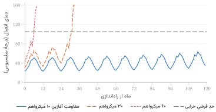
تفسیر. اتصالِ خوب (۱۰ میکرواهم) تابستانها کمی گرم میشود و در ده سال هیچگاه به حدِ خرابی نمیرسد؛ مقاومتش آهسته بالا میرود و پس از چهار و نیم سال هشدارِ گرمانگاری را در یک ماهِ پربار روشن میکند: زمانِ نگهداری. اتصالِ ۳۰ و ۶۰ میکرواهمی از روزِ اول بیش از ۱۰ کلوین گرماند؛ اولی در ماهِ ۳۱ و دومی در ماهِ ۶ از حدِ خرابی میگذرد (شکل 4.30). شکلِ منحنیها بازخوردِ مثبت را نشان میدهد: گرما رشدِ مقاومت را تند میکند و مقاومتِ بیشتر گرمای بیشتر میسازد، تا جایی که فرار رخ میدهد. سه درس: (۱) کیفیتِ نصب (تمیزیِ سطح، گشتاورِ درست، واشرِ مناسب، کابلشوی دوفلزی) مقاومتِ آغازین را تعیین میکند و بیشترین اثر را دارد؛ (۲) گرمانگاریِ راهاندازی زیرِ بار اتصالهای بد را پیش از خرابی پیدا میکند (فصلِ ۵۰)؛ (۳) گرمانگاری باید زیرِ جریانِ کافی انجام شود، وگرنه اتصالِ بد سرد به نظر میرسد. محدودیت: مدل آموزشی است؛ پارامترهایش برازششده به دادهٔ میدانی نیستند و فقط سازوکار را نشان میدهند.
4.7 گردشِ کارِ انتخابِ ماده و فرایند
- کارکرد و بار را بنویسید: قطعه چه میکند؟ چه بارهایی (مکانیکی، گرمایی، الکتریکی، شیمیایی، تابشی) و با چه تکرار و مدتی؟ حالتهای خرابیِ محتمل کداماند (تسلیم، کمانش، خستگی، خوردگی، خزش، شکستِ عایق، فرار گرمایی)؟
- محیط و عمر را تعیین کنید: دما، رطوبت، خورندگیِ جو و خاک، فرابنفش، عمرِ طرح و دسترسپذیری برای نگهداری.
- قیدهای سخت را فیلتر کنید: دمای کار، کلاسِ ولتاژ، سازگاری با مواد کناری، الزاماتِ ایمنی و استاندارد.
- با شاخص و ماتریس رتبهبندی کنید (بخش 4.4.1 و بخش 4.4.2)؛ وزنها و امتیازها را با دلیل ثبت و حساسیت را بسنجید.
- فرایند را همزمان انتخاب کنید: شکل، تیراژ، دقت، هزینه، و عیبهای ذاتیِ فرایند (جدول 4.3).
- رواداری و پرداخت را از کارکرد بگیرید، نه از عادت (بخش 4.5.2).
- برنامهٔ بازرسی و آزمون بنویسید: برای هر عیبِ مهم، روش، معیارِ پذیرش، مرحله، مسئول و سند (بخش 4.5.5).
- شاهد جمع کنید: گواهیِ ماده، گزارشِ آزمون، سوابقِ فرایند؛ و بدانید هر شاهد چه سطحی دارد (ادعا، آزمونِ مستقل، گواهیِ محموله).
- بازخورد بگیرید: خرابیهای بهرهبرداری (مثال 4.95) به گامهای ۱ و ۷ برمیگردند.
4.8 آزمایشگاهِ پایتون: شمارشِ چرخههای خستگی
پرونده: companion/ch04/lab_rainflow.py
هدف. بارِ واقعی سریزمانیِ نامنظمی است؛ قاعدهٔ ماینر چرخه میخواهد. روشِ جریانِ باران (به انگلیسی rainflow counting) سری را به چرخههایی با گسترههای مشخص میشکند، طوری که هر حلقهٔ تنش-کرنشِ بسته یک چرخه شمرده شود. برنامه نخست فقط نقطههای بازگشت (قلهها و درهها) را نگه میدارد، سپس با یک پشته سه نقطهٔ آخر را مقایسه میکند: اگر گسترهٔ تازه از گسترهٔ قبلی کمتر نباشد، گسترهٔ قبلی یک چرخهٔ کامل (یا نیمچرخه، اگر نقطهٔ آغاز را داشته باشد) است و از پشته برداشته میشود.
def rainflow(points):
"""Three-point rainflow count: list of (range, count), count 0.5 or 1."""
stack, cycles = [], []
for p in points:
stack.append(p)
while len(stack) >= 3:
x = abs(stack[-1] - stack[-2]) # newest range
y = abs(stack[-2] - stack[-3]) # previous range
if x < y:
break
if len(stack) == 3: # y holds the start point
cycles.append((y, 0.5))
stack.pop(0)
else: # y is a closed cycle
cycles.append((y, 1.0))
last = stack.pop()
stack.pop()
stack.pop()
stack.append(last)
for a, b in zip(stack[:-1], stack[1:]): # what is left: half cycles
cycles.append((abs(b - a), 0.5))
return cyclescheck on the standard textbook sequence -2 1 -3 5 -1 3 -4 4 -2:
range 3: 0.5, range 4: 1.5, range 6: 0.5, range 8: 1, range 9: 0.5
ten minutes of synthetic tower-base stress (MPa, 10 Hz, A-058):
6000 samples -> 1782 turning points -> 890 cycles
largest range 59.9 MPa; cycles above 20 MPa: 93.0
Miner damage in 10 min: rainflow 3.381e-06; swing by swing 2.294e-06
per 20 years if every 10 minutes were like this: 3.55
swing by swing misses the slow 300 s cycle hidden under the fast onesتفسیر. برنامه نخست با دنبالهٔ استانداردِ کتابهای درسی آزموده میشود و پاسخِ شناختهشده را میدهد؛ سپس روی ده دقیقه تنشِ ساختگیِ پای برج (تغییرِ آهستهٔ باد، تحریکِ \(3P\) و تلاطم) اجرا میشود. شمارشِ «تاب به تاب» آسیب را حدودِ یکسوم کمتر برآورد میکند، چون چرخهٔ بزرگ و آهستهٔ ۳۰۰ ثانیهای را که زیرِ نوسانهای تند پنهان است نمیبیند. اگر هر ده دقیقهٔ ۲۰ سال مثلِ این ده دقیقهٔ پرباد بود، آسیب از یک بیشتر میشد؛ بارِ واقعیِ طراحی از توزیعِ کاملِ شرایطِ باد ساخته میشود (فصلِ ۳۰).
تمرینهای آزمایشگاه. (۱) دامنهٔ تلاطم را نصف و صفر کنید و آسیب را بسنجید (تمرین 4.111). (۲) نمای \(m\) را ۵ کنید؛ سهمِ چرخههای کوچک چه میشود؟ (۳) یک آزمونِ واحد بنویسید که برای دنبالهٔ \(0, 10, 0, 10, 0\) دقیقاً دو چرخه با گسترهٔ ۱۰ بشمارد. (۴) آیا ترتیبِ بارها در قاعدهٔ ماینر اثری دارد؟ چرا این یک محدودیت است؟
4.8.1 آزمایشگاهِ ۲: دمای ماژول از توازنِ انرژی
پرونده: companion/ch04/lab_module.py
پرسشِ مهندسی. مدلِ سادهی معادلهٔ 4.9 از یک عدد (دمای کارِ اسمی) استفاده میکند و باد را نمیبیند. مدلِ توازنِ انرژی از اصولِ اولیه میآید: گرمای جذبشده (تابشِ جذبشده منهای برقِ تولیدی) برابرِ همرفت از دو رو و تابش به آسمان و زمین است؛ معادلهای غیرِخطی در دمای ماژول (توانِ چهارمِ تابش) که با روشِ نیوتن (بخش 3.5.2) حل میشود. اما ضریبِ همرفتِ کتابهای درسی برای صفحهٔ تخت است و پشتِ ماژولِ نصبشده جریانِ هوای آزاد ندارد. پس مدل را واسنجی میکنیم: ضریبی برای همرفت مییابیم که مدل در شرایطِ دمای کارِ اسمی همان ۴۵ درجهٔ برگهٔ داده را بدهد، سپس آن را با دادهٔ باد و دمای روزِ تابستان اجرا میکنیم.
def calibrate(noct_c=45.0):
"""Find the convection scale that reproduces the data-sheet NOCT."""
def miss(scale):
t = ph.module_temperature_balance(800.0, 20.0, 1.0, h_scale=scale)
return t - noct_c
return nm.bisection(miss, 0.2, 2.0, tol=1e-6).root
def wind_at_2m(v60, z0=0.225):
"""Log law from 60 m down to 2 m (neutral air)."""
return v60 * math.log(2.0 / z0) / math.log(60.0 / z0)energy balance, both faces, textbook convection h = 5.7 + 3.8 v (W/m2K):
at NOCT conditions (800 W/m2, 20 C, 1 m/s) it gives 36.0 C, not 45 C
calibrated convection scale 0.414 (bisection) reproduces 45.0 C
summer subset day, wind at 2 m from the 60 m speed: noon 2.2 m/s
noon cell temperature: NOCT model 66.6 C, energy balance 59.8 C
irradiance-weighted power change: NOCT -11.9 %, balance -9.7 %
night: the balance puts the module 4.2 K below the air (radiation to the sky)
noon with a steady 1 m/s wind: 64.2 C
noon with a steady 4 m/s wind: 55.2 C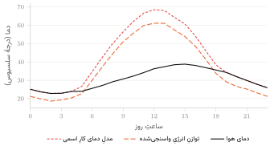
تفسیر. همرفتِ کتابِ درسی ماژول را ۹ درجه سردتر از برگهٔ داده نشان میدهد؛ واسنجی ضریبِ همرفت را به حدودِ ۴۱ درصد میرساند (پشتِ ماژول تهویهٔ ضعیفی دارد). با بادِ نیمروزِ این روز، مدلِ توازن حدودِ ۷ درجه سردتر از مدلِ ساده است و افتِ توانِ روزانه را 9.7 % بهجای 11.9 % میدهد؛ شبها هم ماژول با تابش به آسمان از هوا سردتر میشود (شکل 4.31). کدام درست است؟ هیچکدام را بیاندازهگیری نمیتوان گفت: این همان کارتِ مدل فصلِ ۳ است، با دامنهٔ اعتبار و نیازِ واسنجی با دادهٔ میدانی (فصلهای ۱۵ و ۳۷). تمرینها: (۱) گسیلندگی را 0.75 کنید؛ (۲) افتِ دمای آسمان را ۱۰ و ۳۰ کلوین بگیرید؛ (۳) تندیِ باد را بهجای قانونِ لگاریتمی با نسبتِ ثابتِ 0.4 از ۶۰ متر بگیرید؛ کدام فرض بیشترین اثر را دارد؟
4.8.2 آزمایشگاهِ ۳: شینه در داغترین روزِ سال
پرونده: companion/ch04/lab_transient.py
پرسشِ مهندسی. در مثال 4.94 فرض کردیم شینه در هر ساعت به حالتِ پایا میرسد. اما شینه ظرفیتِ گرمایی دارد (مثال 4.34). این فرض چقدر محافظهکارانه است؟ برنامه روزی از سال را که داغترین ساعتِ حالتِ پایا را دارد پیدا میکند و معادلهٔ گرمای شینه را با جریان و دمای اتاقِ ساعتی، با روشِ رونگه-کوتا و گامِ یک دقیقه، از نیمهشب تا نیمهشب حل میکند.
def make_rhs(current, t_room):
"""dT/dt of the bar; current and room temperature change each hour."""
def rhs(t, temp):
h = min(int(t // 3600), 23)
heat = current[h] ** 2 * R20 * (1 + ALPHA * (temp - 20))
cool = H * PERIM * (temp - t_room[h])
return (heat - cool) / C_BAR
return rhs
def simulate(current, t_room, dt=60.0):
"""Start from the steady state of hour 0, integrate 24 h with RK4."""
t0, _ = ph.conductor_temperature(current[0], R20, ALPHA, H, PERIM,
t_room[0])
return nm.rk4(make_rhs(current, t_room), t0, 0.0, 86400.0, dt)day 191 of the year (holds the hottest steady-state hour); main busbar
Cu 80 x 10 mm, thermal time constant 25.6 min
peak current 1833 A in hour 12
hour-by-hour steady state: maximum 106.3 C in hour 12
transient (RK4, 60 s steps): maximum 104.3 C at 13.00 h
the thermal mass shaves 2.0 K off the peak and delays it
hours with steady state above 90 C: 5; minutes of transient above 90 C: 285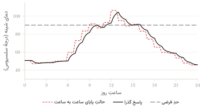
تفسیر. پاسخِ گذرا فقط دو درجه پایینتر از حالتِ پایای ساعتی است و حدودِ نیم ساعت دیرتر به قله میرسد (شکل 4.32). دلیل: ثابتِ زمانیِ ۲۶ دقیقهای از گامِ یکساعتهٔ داده کوتاهتر است، پس شینه در هر ساعت تقریباً به حالتِ پایا میرسد. درس: فرضِ «پایا در هر ساعت» برای این شینه تقریباً درست است و محافظهکاریِ کمی دارد؛ برای کابلِ دفنشده با ثابتِ زمانیِ چندساعته (مثال 3.78) چنین نیست. پاسخِ «کدام مدل کافی است؟» از مقایسهٔ ثابتِ زمانی با گامِ زمانیِ داده میآید. حدِ ۹۰ درجه در این روز حدودِ پنج ساعت شکسته میشود: شینهٔ تک برای شینهٔ اصلی کافی نیست، همان نتیجهٔ مثال 4.94.
تمرینهای آزمایشگاه. (۱) گامِ زمانیِ رونگه-کوتا را ۵ و ۶۰۰ ثانیه کنید و همگرایی را بسنجید (بخش 3.8.1). (۲) جرمِ شینه را با شینهٔ دوتایی جایگزین کنید (ثابتِ زمانی چه میشود؟). (۳) جریانِ هر ساعت را با یک نوسانِ دهدقیقهای ساختگی جایگزین کنید؛ کدام مدل حالا محافظهکارتر است؟
4.9 ساخت و تولیدِ صنعتی در این فصل
این فصل پایهٔ فصلهای ساختِ کتاب است. بخشِ پ (جدول 4.3) خانوادههای فرایند را با قطعههای نیروگاهِ P، عیبهای نوعی و بازرسی پیوند داد؛ بخشِ ت زبانِ نقشه، رواداری، توانِ فرایند و آزمونِ غیرمخرب را ساخت. فصلهای ۴۰ تا ۴۸ برای هر محصول (ماژول، پره و اجزای توربین، ترانسفورماتور، مبدل، باتری، کابل و تابلو، سازه و برج، ابزار دقیق) نقشهٔ فرایند، ساختارِ شکستِ محصول، کنترلهای فرایند، برنامهٔ بازرسی، آزمونهای کارخانه و ردیابی را میآورند. دو هشدارِ همیشگی اینجا هم صدق میکند: (۱) این متن سواد مهندسی است و جای روشهای اجراییِ تأییدشده، تجهیزاتِ صنعتی و کارکنانِ صلاحیتدار را نمیگیرد؛ (۲) کارِ گرم، فرایندهای فشار و خلأ، پرتونگاری و آزمونهای ولتاژِ بالا مجوز و روشِ ایمنیِ خودشان را دارند (فصلهای ۳۲ و ۴۰).
4.10 جعبهٔ استاندارد و انطباق
پرسش: مشخصاتِ ماده، رواداری و بازرسیِ قطعهها با چه زبانِ مشترکی نوشته و سنجیده میشوند؟ سندهای زیر در تاریخِ 2026-11-15 از نظرِ عنوان و ویرایش در فهرستِ رسمیِ ناشر یا نهادهای ملی وارسی و در دفترِ استانداردها ثبت شدهاند (STD-017 تا STD-023)؛ محتوای بندها نقل نمیشود و پذیرشِ کشوریشان (ایران، افغانستان، تاجیکستان) وارسی نشده است (فصلهای ۵۴ تا ۵۸).
- ISO 286-1:2010: نظامِ کدِ رواداریهای اندازههای خطی؛ پایهٔ رواداریها، انحرافها و انطباقها (بخش 4.5.2).
- ISO 1101:2017: رواداریهای هندسیِ شکل، جهت، موقعیت و لنگی (بخش 4.5.1).
- ISO 21920-2:2021: بافتِ سطح، نیمرخ؛ اصطلاحها، تعریفها و پارامترها (بخش 4.5.3).
- ISO 6892-1:2019: آزمونِ کششِ فلزها در دمای اتاق (بخش 4.3.1).
- ISO 9223:2012: خورندگیِ جو؛ ردهبندی، تعیین و برآورد (بخش 4.3.6).
- ISO 1461:2022: پوششهای گالوانیزهٔ گرم روی قطعههای آهنی و فولادیِ ساختهشده؛ مشخصات و روشهای آزمون.
- ISO 9712:2021: صلاحیت و گواهیدهیِ کارکنانِ آزمونِ غیرمخرب (بخش 4.5.5).
پیامدِ طراحی: مشخصاتِ خریدِ هر قطعه باید بگوید ماده با کدام استاندارد و رده، رواداری با کدام نظام، پوشش با کدام مشخصات و بازرسی با کدام روش و توسطِ چه کسی با کدام صلاحیت. شاهد: گواهینامهٔ ماده، گزارشهای آزمون و بازرسی، گواهیِ صلاحیتِ بازرس. تأییدکننده: مهندسِ مسئولِ طراحی و نمایندهٔ کیفیتِ مالک؛ آییننامههای سازه و برقِ حاکم و مقامِ صلاحیتدار در فصلهای ۳۰، ۳۸ و ۵۴ تا ۵۸ مشخص میشوند.
4.11 تحویلدادنیِ نیروگاهِ P
- گزارشِ دلایلِ انتخابِ ماده و فرایند و برنامهٔ بازرسی، PLP-GEN-REP-0001، بازنگریِ A (جدول 4.5): برای دو قطعهٔ نمونه، شمعِ سازهٔ خورشیدی و اتصالِ پیچیِ شینهٔ ۳۳ کیلوولت، با ماتریسِ انتخاب (مثال 4.67)، شاهدِ لازم (جدول 4.2) و برنامهٔ بازرسی.
- نقشهٔ آموزشیِ فلنج، PLP-MEC-DWG-0001، بازنگریِ A (شکل 4.24)، با وضعیتِ «فقط آموزشی».
- بهروزرسانیِ دفترِ مدلها PLP-GEN-REG-0001: چگالیِ هوا با تندیِ همارز (جایگزینِ «بدونِ اصلاح» در مدلِ غربالگریِ بادی؛ محدودیتِ L-2 فصلِ ۲ برطرف)، دمای ماژول با NOCT، دمای پایدارِ رسانا، تنشِ خمشیِ برج، آسیبِ ماینر با شمارشِ جریانِ باران.
- فرضها: A-046 ضریبِ رانشِ 0.8 و جرمِ روتور و ناسلِ ۳۵۰ تن؛ A-047 دورِ 10.5 rpm، نسبتِ گیربکسِ ۱۱۰ و بازدههای زنجیرهٔ انتقال؛ A-048 پرهٔ ۲۰ تنی با جرمِ کاهشی؛ A-049 تندبادِ 30 m/s و ضریبِ نیروی 1.2؛ A-050 هندسه و فولادِ برج؛ A-051 شینهٔ نمونه و \(h = 10\ \text{W/(m}^2\text{K)}\)؛ A-052 هندسه و ثابتهای دیالکتریکِ کابل؛ A-053 هستهٔ ترانسفورماتور؛ A-054 ضریبِ اوجِ اتصالِ کوتاه و فاصلهٔ شینهها؛ A-055 ترازِ توانِ صوتی؛ A-056 منحنیِ کشش و پیچِ نمونه؛ A-057 لولهٔ گشتاورِ ردیاب؛ A-058 دادهٔ خستگی، شکست، رهایش و خوردگی؛ A-059 خواصِ نمایشیِ مواد و امتیازهای انتخاب؛ A-060 قیمتها، هزینههای فرایند و دادهٔ کنترلِ فرایند؛ A-061 اتاقِ تابلو و حدِ دمای شینه؛ A-062 مدلِ رشدِ مقاومتِ تماس؛ A-063 مسیر و نفوذپذیریِ هستهٔ ترانسفورماتور؛ A-064 مقاومتِ درونیِ سلول و بازدهِ اینورتر برای خنککاری؛ A-065 انرژیِ فعالسازی و دمای مرجعِ پیریِ عایق؛ A-066 سیمان و گرمای آبگیریِ بتنِ فونداسیون؛ A-067 شدتهای نمایشیِ انرژیِ نهفته؛ A-068 رواداریهای زنجیرهٔ نصبِ سازهٔ خورشیدی؛ A-069 مقطعِ پره (وتر و ضریبهای بالابر و پسار)؛ A-070 مقاومتهای گرماییِ ماژولِ قدرت؛ A-071 جریانِ حفاظتِ کاتدی؛ A-072 پارامترهای وایبولِ استحکامِ شیشه؛ A-073 ضریبِ قاعدهٔ شورینوف؛ A-074 هندسه و چگالیِ جریانِ سیمپیچ؛ A-075 مرتبهٔ بزرگیِ مقاومتِ ویژهٔ مواد؛ A-076 هندسه و ضریبِ پسارِ برج؛ A-077 جریانِ خطای زمینِ پوششِ کابل؛ A-078 الگوی پیچِ فلنج و نوسانِ گشتاور؛ A-079 پارامترهای تزریقِ رزین؛ A-080 گسیلندگیها و تنظیمِ دوربینِ گرمانگار؛ A-081 جذبِ تابشِ غلافِ کابل؛ A-082 سهمِ فرابنفش و شدتِ محفظهٔ آزمون؛ A-083 ضریبِ اصطکاکِ سطحهای اتصال؛ A-084 نمای فرسایشِ بارانی؛ A-085 ترکیبِ شیمیاییِ دو ذوبِ فولاد؛ A-086 امتیازهای تحلیلِ خرابیِ فرایند؛ A-087 ابعاد، وزنها و گشتاورِ حدیِ فونداسیونِ نمونه؛ A-088 دادهٔ ساختگیِ نقشهبرداریِ فلنج. همه فرضیِ آموزشی.
- مجهولها: U-018 خورندگیِ واقعیِ جو و خاکِ ساختگاه (فصلِ ۲۹)؛ U-019 بارها و بسامدهای واقعیِ توربین و برج از سازنده (فصلهای ۱۱ و ۳۰)؛ U-020 ردهبندیِ واقعیِ تابلو و تهویهٔ اتاق (فصلهای ۲۴ و ۴۶).
- تصمیم D-008: «همهٔ محاسبههای انرژیِ بادیِ پرونده، چگالیِ هوای ساختگاه را با روشِ تندیِ همارز اعمال میکنند؛ و همهٔ اتصالهای پیچیِ قدرتِ ۳۳ کیلوولت و بالاتر در راهاندازی زیرِ بار گرمانگاری میشوند.»
| قطعه | حالتِ خرابیِ اصلی | کنترل در ساخت یا نصب | بازرسی و معیار | سند |
|---|---|---|---|---|
| شمعِ سازهٔ خورشیدی | خوردگیِ پوشش و کاهشِ مقطع | گالوانیزهٔ گرم با ضخامتِ مشخص؛ نگهداریِ بیآسیب | ضخامتسنجیِ پوشش در نمونهگیریِ مشخص؛ بازرسیِ چشمی پس از کوبش | گواهیِ پوشش؛ گزارشِ ضخامت |
| شمعِ سازهٔ خورشیدی | ابعاد و راستی | کنترلِ برش و سوراخکاری | اندازهگیریِ طول، سوراخها و راستی | گزارشِ ابعادی |
| اتصالِ پیچیِ شینه | مقاومتِ تماسِ زیاد و فرار گرمایی | تمیزکاریِ سطح، کابلشوی مناسب، گشتاورِ مشخص با آچارِ کالیبره | اندازهگیریِ مقاومتِ تماس؛ گرمانگاریِ زیرِ بار | فرمِ گشتاور؛ گزارشِ مقاومت و گرمانگاری |
| اتصالِ پیچیِ شینه | شل شدن در عمر | واشرِ نگهدارندهٔ پیشکشیدگی | گرمانگاریِ دورهای | گزارشِ نگهداری |
4.12 جمعبندی
- مکانیک: نمودارِ جسمِ آزاد و تعادلِ نیرو و گشتاور؛ رانشِ روتور \(\tfrac12\rho A v^{2} C_T\) حدودِ 900 kN و گشتاورِ پای برج حدودِ 90 MN·m؛ توان = گشتاور × سرعتِ زاویهای، پس دورِ کم یعنی گشتاورِ زیاد؛ بازدهها در زنجیره ضرب میشوند و تلفات گرما میشود.
- شارهها: چگالیِ هوا \(p/(R_\text{d}T)\)؛ ساختگاهِ ۱۲۰۰ متری ۱۵ درصد هوای رقیقتر و 8.5 % انرژیِ بادیِ کمتر دارد (با تندیِ همارز؛ ضربِ ساده اشتباه است)؛ حدِ بتز \(16/27\) در \(a = 1/3\)؛ برشِ باد شبها دو برابرِ نیمروز.
- گرما: رسانش، همرفت، تابش و مقاومتِ گرمایی؛ ماژولِ تابستانی ۳۰ درجه از هوا داغتر و ۱۵ درصد کمتوانتر؛ انبساطِ مهارشده تنشِ بزرگ میسازد؛ دمای رسانا با مقاومتِ وابسته به دما بازخوردِ مثبت دارد و شرطِ \(k\alpha_R < 1\) دارد.
- الکتریسیته و مغناطیس: میدانِ عایقِ کابل کنارِ رسانا بیشینه است؛ نیروی اتصالِ کوتاه با مجذورِ جریان؛ ولت بر دور \(4.44 f A B\) و اشباعِ هسته؛ تلفاتِ گردابی با مجذورِ ضخامتِ ورق.
- نور، ارتعاش و صدا: فوتونهای زیرِ گاف بیاستفادهاند و مازادِ انرژیِ بقیه گرما میشود (سقفِ ۴۴ درصدیِ مدلِ ساده)؛ بازتابِ شیشه پس از ۶۰ درجه تند میشود؛ برج باید میانِ \(1P\) و \(3P\) بنشیند؛ هر دو برابر شدنِ فاصله شش دسیبل.
- رفتارِ مواد: هوک، تسلیمِ ۰٫۲ درصد، خمشِ \(M/S\)؛ خستگی با منحنیِ تنش-عمر و قاعدهٔ ماینر (ده درصد تنش، سی و سه درصد آسیب)؛ ترکِ بحرانی با مجذورِ چقرمگی؛ رهایش و خزش با آرنیوس؛ خوردگی با فارادی و نسبتِ سطحِ آند و کاتد؛ ناسازگاریِ انبساط؛ تلفاتِ دیالکتریک با مجذورِ ولتاژ؛ برگهٔ داده با شرایطِ آزمون.
- انتخاب: شاخصهای ماده (\(E/\rho\)، \(E^{1/2}/\rho\)، \(\sigma^{2/3}/\rho\))؛ ماتریسِ وزندار با شاهد و آزمونِ حساسیت؛ خانوادههای فرایند با عیب و بازرسیِ خاصِ خود؛ نقطهٔ سربهسرِ تیراژ.
- از نیت تا شاهد: نقشه، رواداریِ ابعادی و هندسی، انطباق، زبری؛ \(C_p\) و \(C_{pk}\) و نمودارِ کنترل؛ روشهای آزمونِ غیرمخرب و احتمالِ آشکارسازی؛ برنامهٔ بازرسی و آزمون.
- نیروگاهِ P: یک توربین ۳۲ درصدِ انرژیِ باد را میگیرد؛ شینهٔ تکِ ۸۰ در ۱۰ میلیمتر برای شینهٔ اصلی کافی نیست؛ اتصالِ پیچیِ بد با بازخوردِ مثبتِ گرما و مقاومت میسوزد و گرمانگاریِ زیرِ بار آن را زود مییابد.
- بارهای چرخشی و آیرودینامیک: گرانشِ پره در هر دور یک چرخهٔ خستگی است (صد میلیون در عمر)؛ بالابرِ مقطع بیشتر رانش است و بخشِ کوچکی گشتاور؛ پسارِ کم هشت درصدِ نیروی گشتاورساز را میخورد؛ نوکِ پره هفده برابرِ میانه فرسایش میگیرد.
- ارتفاعِ ساختگاه: هوای رقیق انرژیِ بادی (۸٫۵ درصد)، خنککاری (۳۱ درصد توانِ فنِ بیشتر) و عایقِ هوایی (تا ۱۹ درصد) را کم میکند؛ ارتفاع یک ورودیِ طراحیِ مشترک است.
- گرما در زمان: ثابتِ زمانی تعیین میکند مدلِ پایا کافی است یا نه (شینه ۲۶ دقیقه، کابلِ دفنشده ساعتها)؛ گرمای خطا بیدررو و با \(I^{2}t\) است؛ پیری از قلهها پیروی میکند؛ خاک و آفتاب ظرفیتِ کابل را تعیین میکنند.
- اتصالها: پیشکشیدگی بارِ متغیرِ پیچ را شش برابر کم میکند و از دست رفتنش آسیب را صدها برابر؛ پیچش هنگامِ سفتکاری تنش را یکپنجم بالا میبرد؛ اصطکاکِ سطح و تمیزی جزئی از اتصالاند.
- بازرسی: ابزار باید رواداری را تشخیص دهد (نسبتِ چهار به یک)؛ موقعیت دایره است نه مربع؛ گرمانگاری روی فلزِ براق فریب میدهد؛ نمونهگیری کیفیت نمیسازد؛ خطرناکترین خطای محاسبه نتیجهٔ معقولنما دارد.
منابعِ این فصل. برای فیزیک و آیرودینامیکِ توربین (Burton و همکاران 2011; Manwell و همکاران 2009)، برای انتقالِ گرما (Bergman و همکاران 2011)، برای علمِ مواد (Callister و Rethwisch 2018)، برای انتخابِ ماده و شاخصها (Ashby 2017)، و برای فرایندهای ساخت (Kalpakjian و Schmid 2014) را ببینید. استانداردها در بخش 4.10 آمدهاند.
4.12.1 واژگانِ فصلِ ۴
| فارسی | انگلیسی | یادداشت |
|---|---|---|
| نمودارِ جسمِ آزاد | free-body diagram | |
| رانش / ضریبِ رانش | thrust / thrust coefficient | \(C_T\) |
| گشتاور / گشتاورِ واژگونی | torque / overturning moment | |
| ممانِ لختی / ثابتِ لختی | moment of inertia / inertia constant | \(I\)، \(H\) |
| فشارِ دینامیکی | dynamic pressure | \(q = \tfrac12\rho v^{2}\) |
| قانونِ گازِ کامل | ideal gas law | |
| تندیِ همارز | equivalent wind speed | اصلاحِ چگالی |
| نظریهٔ قرصِ محرک / حدِ بتز | actuator disc / Betz limit | \(16/27\) |
| ضریبِ القای محوری | axial induction factor | \(a\) |
| لایهٔ مرزیِ جو / برشِ باد | atmospheric boundary layer / wind shear | |
| طولِ زبری | roughness length | \(z_0\) |
| رسانش / همرفت / تابش | conduction / convection / radiation | |
| مقاومتِ گرمایی | thermal resistance | |
| دمای کارِ اسمیِ سلول | nominal operating cell temperature | NOCT |
| فرارِ گرمایی | thermal runaway | |
| استقامتِ دیالکتریک / ضریبِ تلفات | dielectric strength / loss factor | \(\tan\delta\) |
| تخلیهٔ جزئی | partial discharge | |
| اشباعِ هسته / جریانِ گردابی | core saturation / eddy current | |
| گافِ انرژی / فوتون | band gap / photon | \(E_g\) |
| لایهٔ ضدبازتاب | anti-reflection coating | |
| تنش / کرنش / مدولِ کشسانی | stress / strain / elastic modulus | \(\sigma\)، \(\varepsilon\)، \(E\) |
| تنشِ تسلیم / استحکامِ کششی | yield strength / tensile strength | |
| ممانِ دومِ سطح / مدولِ مقطع | second moment of area / section modulus | \(I\)، \(S\) |
| خستگی / منحنیِ تنش-عمر | fatigue / S-N curve | |
| قاعدهٔ پالمگرن-ماینر | Palmgren-Miner rule | \(D\) |
| چقرمگیِ شکست | fracture toughness | \(K_{IC}\) |
| خزش / رهایشِ تنش | creep / stress relaxation | |
| خوردگیِ گالوانیک | galvanic corrosion | |
| گالوانیزهٔ گرم | hot-dip galvanizing | |
| شاخصِ ماده | material index | |
| ماتریسِ تصمیمِ وزندار | weighted decision matrix | |
| گرمای ورودیِ جوش | weld heat input | |
| نقطهٔ سربهسر | break-even point | |
| رواداری / انطباق | tolerance / fit | |
| رواداریِ هندسی / مبنا | geometrical tolerance / datum | |
| زبریِ سطح | surface roughness | \(R_a\)، \(R_q\) |
| توانِ فرایند | process capability | \(C_p\)، \(C_{pk}\) |
| نمودارِ کنترل | control chart | |
| آزمونِ غیرمخرب | non-destructive testing | |
| احتمالِ آشکارسازی | probability of detection | \(a_{90}\) |
| شمارشِ جریانِ باران | rainflow counting | |
| برنامهٔ بازرسی و آزمون | inspection and test plan | |
| نیروی گریز از مرکز | centrifugal force | |
| مدارِ مغناطیسی / رلوکتانس | magnetic circuit / reluctance | |
| ظرفیتِ ویژهٔ نظری / مقاومتِ درونی | theoretical specific capacity / internal resistance | |
| کاهشِ ظرفیت با ارتفاع | altitude derating | |
| تنشِ معادلِ فون میزس | von Mises equivalent stress | |
| کمانش / طولِ مؤثر | buckling / effective length | |
| قاعدهٔ آمیزهها | rule of mixtures | |
| پیریِ عایق / انرژیِ فعالسازی | insulation ageing / activation energy | |
| نیمهرسانای گافِ پهن | wide-band-gap semiconductor | |
| گرمای آبگیری / بتنِ حجیم | heat of hydration / mass concrete | |
| انرژیِ نهفته | embodied energy | |
| نمونهگیریِ پذیرش / منحنیِ مشخصهٔ عملیاتی | acceptance sampling / OC curve | |
| بالابر / پسار / زاویهٔ حمله | lift / drag / angle of attack | |
| جرمِ هوا / تابشِ مستقیمِ عمود | air mass / direct normal irradiance | DNI |
| اثرِ پوستی / عمقِ پوستی | skin effect / skin depth | \(\delta\) |
| سرعتِ همگام / لغزش | synchronous speed / slip | |
| دمای پیوند / چاهکِ گرمایی | junction temperature / heat sink | |
| ضریبِ تمرکزِ تنش | stress concentration factor | \(K_t\) |
| حفاظتِ کاتدی / آندِ فداشونده | cathodic protection / sacrificial anode | |
| شیشهٔ سکوریت / مدولِ وایبول | tempered glass / Weibull modulus | |
| قاعدهٔ شورینوف / حفرهٔ انقباضی | Chvorinov’s rule / shrinkage porosity | |
| موقعیتِ واقعی | true position | |
| ضریبِ بارِ اتصال | joint load factor | \(\Phi\) |
| گرم شدنِ بیدررو در اتصالِ کوتاه | adiabatic short-circuit heating | \(I^{2}t\) |
| قانونِ دارسی / تزریقِ رزین | Darcy’s law / resin infusion | |
| گرمانگاری / گسیلندگی | thermography / emissivity | \(\varepsilon\) |
| فرسایشِ بارانی | rain erosion | |
| همارزِ کربن / شمارهٔ ذوب | carbon equivalent / heat number | CE |
| تحلیلِ حالتها و اثرهای خرابی | failure mode and effects analysis | FMEA |
| شناوری / خروج از مرکزی | buoyancy / eccentricity |
4.13 ارزیابیِ پلکانی
4.13.1 پلهٔ ۱: مبانی
تمرین 4.1 10.5 rpm را به رادیان بر ثانیه تبدیل و تندیِ نوکِ پرهٔ 75 m را حساب کنید.
تمرین 4.2 انرژیِ جنبشیِ جرمِ ۲ کیلوگرمی با تندیِ 3 m/s و انرژیِ پتانسیلِ ۱۰۰۰ کیلوگرم در ارتفاعِ ۱۰۰ متر را بر حسبِ ژول و کیلوواتساعت بیابید.
تمرین 4.3 چگالیِ هوای خشک در 900 hPa و 10 °C چیست؟
تمرین 4.4 چگالیِ توانِ باد با چگالیِ 1.05 kg/m³ و تندیِ 8 m/s چیست؟
تمرین 4.5 لولهای فولادیِ ۱۰ متری با ۶۰ کلوین گرم شدن چقدر بلند میشود؟
تمرین 4.6 انرژیِ فوتونِ 1000 nm و طولِ موجِ متناظر با گافِ 1.12 eV را بیابید.
تمرین 4.7 میلهٔ فولادیِ ۲ متری زیرِ تنشِ 200 MPa چقدر کش میآید؟
تمرین 4.8 بازتابِ تابشِ عمود از شیشه (\(n = 1.5\)) و آب (\(n = 1.33\)) را بیابید.
تمرین 4.9 چگالیِ جریانِ خوردگیِ 0.01 A/m² سالانه چند میکرومتر فولاد میخورد؟
تمرین 4.10 تنش، کرنش، تسلیم، خستگی، خزش و خوردگی را هر کدام در یک جمله تعریف و برای هر کدام یک قطعهٔ نیروگاهی مثال بزنید.
تمرین 4.11 نیروی گریز از مرکزِ جرمِ یک کیلوگرمی در شعاعِ یک متر با 60 rpm چیست؟
تمرین 4.12 جریانِ مغناطیسکنندهٔ هستهای با 1.5 T، مسیرِ ۲ متری، نفوذپذیریِ نسبیِ ۵۰۰۰ و ۲۰۰ دور (بیدرز) چیست؟
تمرین 4.13 ظرفیتِ ویژهٔ نظریِ مادهای با جرمِ مولیِ 100 g/mol و دو الکترون چیست؟
تمرین 4.14 عمقِ پوستیِ مس در 400 Hz چیست؟
تمرین 4.15 طولِ موجِ قلهٔ تابشِ جسمی در 500 °C را بیابید.
تمرین 4.16 تنشِ لبهٔ سوراخِ گرد در ورقِ پهنی با تنشِ اسمیِ 50 MPa چیست؟
تمرین 4.17 سوراخی با \(\Delta x = 0.2\) و \(\Delta y = 0.1\) میلیمتر در رواداریِ موقعیتِ 0.5 mm پذیرفته میشود؟
تمرین 4.18 سرعتِ همگامِ ماشینِ ۶ قطبی در شبکهٔ 60 Hz چیست؟
تمرین 4.19 پوششِ رویِ 100 µm چند گرم بر مترمربع است؟
تمرین 4.20 زمانِ رفتوبرگشتِ ۱۰ میکروثانیه در فولاد چه ضخامتی است؟
تمرین 4.21 مقاومتِ یک متر رسانای 2.5 mm² از مس و از فولادِ ساختمانی چیست؟
تمرین 4.22 همارزِ کربنِ فولادی با کربنِ ۰٫۲۰ و منگنزِ ۱٫۲۰ درصد (بیعنصرِ دیگر) چیست؟
تمرین 4.23 شناوریِ ۱۰۰ مترمکعب حجمِ زیرِ آب چند مگانیوتن است؟
تمرین 4.24 برای پایهٔ مربعیِ ۲۴ متری، حدِ خروج از مرکزی برای فشرده ماندنِ کلِ کف (\(B/6\)) چیست؟
4.13.2 پلهٔ ۲: تحلیل
تمرین 4.25 \(C_p\) قرصِ محرک را در \(a = 0.2\) و \(a = 0.4\) حساب کنید. چرا هر دو کمتر از \(16/27\) است؟
تمرین 4.26 تندیِ میانگینِ 7.10 m/s در 100 m را با نماهای 0.171 و 0.12 به 150 m برونیابی کنید.
تمرین 4.27 دمای پایدارِ شینهٔ مثال 4.11 را در 1800 A بیابید.
تمرین 4.28 میدانِ عایقِ کابلِ 132 kV با شعاعهای ۱۵ و ۳۳ میلیمتر را در دو سطحِ عایق بیابید.
تمرین 4.29 نیرو بر مترِ دو رسانای موازی با جریانِ اوجِ 40 kA و فاصلهٔ 0.5 m چیست؟
تمرین 4.30 سیمپیچِ 400 V روی هستهای با سطحِ 0.01 m² و چگالیِ شارِ 1.5 T در 50 Hz چند دور لازم دارد؟
تمرین 4.31 بسامدِ اولِ دکلِ لولهایِ فولادیِ ۲۰ متری (قطرِ 0.5 m، ضخامتِ 10 mm) بیجرمِ بالا را بیابید.
تمرین 4.32 ترازِ فشارِ صوتیِ منبعِ 105 dB(A) در ۲ کیلومتر، و دوازده منبعِ برابر در یک کیلومتر را بیابید.
تمرین 4.33 برای جزئیاتِ مثال 4.45، عمر در گسترههای ۴۰ و ۸۰ مگاپاسکال چیست؟
تمرین 4.34 ترکِ بحرانیِ لبهای با \(K_{IC} = 40\ \text{MPa}\sqrt{\text{m}}\) و تنشِ 150 MPa چیست؟
تمرین 4.35 تنشِ معادلِ فون میزس برای کششِ 300 MPa و برشِ 100 MPa چیست؟
تمرین 4.36 بارِ کمانشِ نبشیِ مهاربندِ مثال 4.53 با طولِ 1.5 m و دو سرِ مفصلی چیست؟
تمرین 4.37 مدولِ طولی و عرضیِ لایه با الیافِ 72 GPa، رزینِ 3 GPa و کسرِ الیافِ ۶۰ درصد چیست؟
تمرین 4.38 با انرژیِ فعالسازیِ 80 kJ/mol، نزدیکِ 105 °C آهنگِ پیری هر چند کلوین دو برابر میشود؟
تمرین 4.39 جرمِ هوا و تابشِ مستقیمِ مدلِ معادلهٔ 4.19 در ارتفاعِ خورشیدِ ۴۵ درجه چیست؟
تمرین 4.40 پایهای با بسامدِ طبیعیِ ۵۰ هرتز و میراییِ 0.05 صدای ۱۰۰ هرتزی را چقدر جدا میکند؟
تمرین 4.41 رسانای مسیِ 95 mm² با 10 kA به مدتِ 0.5 s از 90 °C به چه دمایی میرسد؟
تمرین 4.42 بادِ نسبی و زاویهٔ ورودِ مقطعِ مثال 4.24 را در شعاعِ ۲۵ متر بیابید. چرا پره نزدیکِ ریشه پیچش بیشتری دارد؟
تمرین 4.43 اگر مقاومتِ چاهک به هوا در مثال 4.28 با گرد و غبار ۳۰ درصد زیاد شود، دمای پیوند در هوای ۵۰ درجه چیست؟
تمرین 4.44 راکتانسِ خطِ هواییِ مثال 4.31 را با فاصلهٔ افقیِ دو متر حساب کنید.
تمرین 4.45 ثابتِ زمانیِ گرماییِ شینهٔ دوتایی (دو شینهٔ ۸۰ در ۱۰ با فاصله) چیست؟
تمرین 4.46 اگر تندیِ نوکِ پره 100 m/s باشد، فرسایشِ نوک چند برابرِ مثال 4.64 است؟
تمرین 4.47 مثال 4.41 را با پایهٔ ۲۲ متری (همان وزنها) در حالتِ کاریِ خشک تکرار کنید.
تمرین 4.48 ولتاژ و جریانِ سینوسیِ همفاز با اوجِ 325 V و 10 A: توانِ میانگینِ واقعی و حاصلضربِ نادرستِ اوجها چیست؟
تمرین 4.49 اگر ذوبِ B در مثال 4.89 کرومِ ۰٫۳۰ و مولیبدنِ ۰٫۲۰ درصد داشت، همارزِ کربن چه میشد؟
4.13.3 پلهٔ ۳: کاربرد در نیروگاهِ P
تمرین 4.50 اگر توپیِ توربینها در ارتفاعِ ۲۱۰۰ متر با دمای میانگینِ 5 °C بود (جوِ استاندارد)، چگالی و انرژیِ سالانهٔ مزرعه با همان باد چه میشد؟
تمرین 4.51 مثال 4.9 را برای روزِ زمستانیِ بستهٔ داده تکرار کنید. نتیجه را تفسیر کنید.
تمرین 4.52 رانش در 13 m/s با \(C_T = 0.7\)، گشتاورِ پای برج و تنشِ خمشی در مقطعِ مثال 4.43 را بیابید.
تمرین 4.53 مثال 4.94 را برای شینهٔ تکِ مسیِ ۱۰۰ در ۱۰ میلیمتر تکرار کنید.
تمرین 4.54 پوششِ گالوانیزهٔ 115 µm با آهنگهای ۲ و ۴ میکرومتر در سال چند سال دوام دارد؟
تمرین 4.55 در مثال 4.95، اگر ضریبِ دفعِ گرما به 2.0 W/K برسد (تهویهٔ بهتر)، اتصالِ ۳۰ میکرواهمی کِی خراب میشود؟
تمرین 4.56 جریانِ شارژ و توانِ راکتیوِ فیدرِ پنجکیلومتریِ کابلِ مثال 4.12 چیست؟
تمرین 4.57 با نمای برشِ شبانهٔ 0.25، نسبتِ تندیِ همارزِ روتور به تندیِ توپی چیست؟
تمرین 4.58 اثرِ رطوبتِ ۶۰ درصدی بر چگالیِ هوا در 35 °C کنارِ دریا چیست؟
تمرین 4.59 بازتاب و عبورِ نسبیِ شیشهٔ ماژول در زاویهٔ تابشِ ۷۵ درجه چیست؟
تمرین 4.60 اینورترِ 3 MW با بازدهِ 98.5 % در ساختگاهِ نیروگاهِ P چه تلفات و چه جریانِ هوایی (۱۵ کلوین گرم شدن) دارد؟
تمرین 4.61 کابلِ مثال 4.58 را در عمقِ یک متر و خاکی با مقاومتِ ویژهٔ گرماییِ 2.0 K·m/W بسنجید.
تمرین 4.62 عمرِ معادلِ مصرفشدهٔ عایقِ شینهٔ تکِ مسیِ ۱۰۰ در ۱۰ میلیمتر (تمرین 4.53) را در یک سال با معادلهٔ 4.37 بیابید.
تمرین 4.63 احتمالِ شکستِ شیشهٔ معمولی و سکوریتِ مثال 4.60 در 45 MPa چیست؟
تمرین 4.64 برنامهٔ نمونهگیریِ ۳۲ قطعه با پذیرش تا یک معیوب، انباشتههای یک و پنج درصدی را با چه احتمالی میپذیرد؟
تمرین 4.65 در مثال 4.29 اگر خانه ۱۲۰۰ متر غربِ ردیفِ میانی باشد، ترازِ کل چیست؟
تمرین 4.66 اگر غلافِ کابلِ مثال 4.38 روشن باشد (جذبِ 0.3)، گرمای آفتاب چقدر است؟
تمرین 4.67 مقاومتِ لغزشِ اتصالی با چهار پیچِ پیشکشیده تا 200 kN و ضریبِ اصطکاکِ 0.3 چیست؟
تمرین 4.68 چگالیِ نسبیِ هوا در 870 hPa و 40 °C چیست؟
تمرین 4.69 روتراشیِ مثال 4.76 را با پیشرویِ 0.2 mm/rev تکرار کنید: زمان و زبری؟
تمرین 4.70 برای جریانِ حفاظتیِ 0.2 A در ۲۵ سال، با فرضهای مثال 4.59، چند کیلوگرم روی لازم است؟
تمرین 4.71 سیمپیچِ مثال 4.78 را با چگالیِ جریانِ 2.5 A/mm² حساب کنید: سطحِ مقطع، تلفات و جرمِ مس.
تمرین 4.72 آزمایشگاهِ ۳ را برای شینهٔ دوتایی (دو شینهٔ ۸۰ در ۱۰) در همان روز تکرار کنید. بیشینهٔ دما چیست؟
تمرین 4.73 فرسایشِ مقطعِ ۷۰ متری چند برابرِ نوکِ ۷۵ متری است؟ «ده درصدِ بیرونیِ پره» چه معنایی پیدا میکند؟
تمرین 4.74 در مثال 4.90 اگر کشفِ حالتِ گرمانگاری به ۲ برسد، عددِ اولویت چیست؟
تمرین 4.75 اتصالِ مسِ براقِ مثال 4.36 را در اتاقی 10 °C بسنجید. خطر بیشتر میشود یا کمتر؟
4.13.4 پلهٔ ۴: طراحی و وارسی
تمرین 4.76 برجِ مثال 4.17 با قطرِ 4.5 m چه ضخامتی لازم دارد تا بسامدِ اولش 0.25 Hz شود؟ با دوبخشی (بخش 3.5.2) حل کنید.
تمرین 4.77 در مثال 4.42، با گشتاورِ ثابت و ضریبِ مهرهٔ 0.12 تا 0.18، بازهٔ پیشکشیدگی چیست؟ چه معیارِ پذیرشی پیشنهاد میکنید؟
تمرین 4.78 در ماتریسِ شمعِ مثال 4.67، ده درصد از وزنِ «عمرِ خوردگی» را به «هزینه» بدهید. امتیازها و برنده چه میشوند؟
تمرین 4.79 اگر قالبِ مثال 4.70 چهل هزار واحد بود، نقطهٔ سربهسر کجا بود؟
تمرین 4.80 برای سوراخِ 600.000 تا 600.070 mm، حدهای محوری را بیابید که تداخلِ 0.020 تا 0.100 mm بدهد. رواداریِ محور چیست و چه پیامدی دارد؟
تمرین 4.81 در مثال 4.82 با \(\sigma = 13\ \text{kN}\)، میانگین چقدر از مرکز دور شود تا \(C_{pk} = 1\) شود؟
تمرین 4.82 در مثال 4.45 همهٔ تنشها را چند درصد کم کنیم تا آسیب نصف شود (به 0.5 برسد)؟
تمرین 4.83 برای روشِ بازرسیای با \(a_{50} = 1.0\ \text{mm}\) و پهنای \(0.3\)، مقدارِ \(a_{90}\) چیست؟
تمرین 4.84 قابِ آلومینیومی روی شیشه در ۸۰ کلوین تغییرِ دما چه اختلافِ طولی بر متر دارد؟ طراحی با آن چه میکند؟
تمرین 4.85 جریانِ فرارِ مدلِ خطی برای شینهٔ آلومینیومیِ ۱۰۰ در ۱۰ میلیمتر با \(h = 10\) چیست؟
تمرین 4.86 مثال 4.52 را با ضریبِ اصطکاکِ رزوهٔ 0.16 تکرار کنید. چه نتیجهای دربارهٔ روانکاریِ پیچ میگیرید؟
تمرین 4.87 اگر قطعههای فشردهٔ مثال 4.62 فقط سه برابرِ پیچ سفت باشند، ضریبِ بار و اثرِ از دست رفتنِ پیشکشیدگی چیست؟
تمرین 4.88 در مثال 4.79 خطهای ورودی هر 1.2 m گذاشته شدهاند (جریان از دو سو). زمانِ پرشدن چیست؟
تمرین 4.89 مثال 4.32 را برای طوفانِ ۵۰ساله با ضریبِ پسارِ 1.0 (برجِ یخزده یا زبر) تکرار کنید.
تمرین 4.90 برای رواداریِ 0.05 mm، میکرومترِ مثال 4.84 چه نسبتی میدهد؟
تمرین 4.91 در مثال 4.86 اگر رواداریِ شمع به ±۱۰ میلیمتر برسد، بدترین حالت و جمعِ ریشهٔ مربعی چه میشوند؟
تمرین 4.92 اتصالِ مسِ اکسیدشده (گسیلندگیِ 0.6) در 60 °C و اتاقِ 25 °C را با تنظیمِ 0.6 و 0.95 دوربین بسنجید.
تمرین 4.93 کابلِ مثال 4.58 را در عمقِ 0.6 m و خاکی با مقاومتِ ویژهٔ 1.2 K·m/W بسنجید.
تمرین 4.94 در مثال 4.62 اگر گشتاورِ پای برج \(\pm 30\) مگانیوتنمتر نوسان کند، نوسانِ تنشِ پیچ با و بیپیشکشیدگی چیست؟
تمرین 4.95 ساقِ جوشِ گوشهایِ مثال 4.63 را طوری بیابید که تنشِ گلوگاه 100 MPa شود.
تمرین 4.96 با عمرِ کاریِ دو ساعتهٔ رزین، بیشترین طولِ جریان در مثال 4.79 چیست؟
تمرین 4.97 در مثال 4.90 اگر رخدادِ «پیشکشیدگیِ کم» به ۷ برسد (ابزارِ کالیبرهنشده)، رتبهبندی چه میشود؟
تمرین 4.98 در مثال 4.41، با همان وزنها، کمترین عرضِ پایه برای فشرده ماندنِ کلِ کف در حالتِ حدیِ خشک چیست؟
تمرین 4.99 برای اثباتِ ۲۵ سال دوزِ فرابنفشِ ساختگاه در محفظهٔ مثال 4.39 چند ساعت لازم است؟ چه نتیجهای دربارهٔ آزمونهای واقعی میگیرید؟
تمرین 4.100 کمترین سطحِ مقطعِ پوششِ مسی برای 2 kA به مدتِ یک ثانیه از ۷۰ تا ۲۵۰ درجه چیست؟
تمرین 4.101 تختیِ مثال 4.92 را فقط با ۸ نقطهٔ یکدرمیان حساب کنید. نتیجه دربارهٔ تعدادِ نقطهها چه میگوید؟
تمرین 4.102 در مثال 4.41 (خشک) بزرگترین گشتاوری که کلِ کف را فشرده نگه میدارد چیست؟
تمرین 4.103 پرسشِ نخستِ خودآزماییِ بخش 4.2.38 را حل کنید.
تمرین 4.104 نسبتِ ثابتِ زمانیِ گرمایی به گامِ دادهٔ ساعتی را برای شینه و کابلِ دفنشده (سه ساعت) بیابید و بگویید برای کدام مدلِ پایای ساعتی کافی است.
4.13.5 پلهٔ ۵: تسلط
تمرین 4.105 در بازرسیِ پنجساله، ترکی در جوشِ فلنجِ یک برج پیدا شده است. برنامهٔ بررسیِ علتِ خرابی بنویسید: چه دادهای، چه آزمونی، چه فرضیههایی و چه تصمیمِ فوریای؟
تمرین 4.106 برای شمعِ سازهٔ خورشیدی در خاکِ شور، دلایلِ انتخابِ ماده و پوشش و برنامهٔ بازرسیِ کامل را بنویسید.
تمرین 4.107 شینهٔ اصلیِ ۳۳ کیلوولت را میانِ مسِ دوتایی و آلومینیومِ دوتایی انتخاب کنید: دما، جرم، هزینه، اتصالها، خزش، خوردگی و بازرسی را با عددهای مثال 4.94 بسنجید.
تمرین 4.108 یک برگهٔ دادهٔ ساختگی برای یک پلیمرِ عایق بنویسید که پنج دامِ بخش 4.3.9 را داشته باشد و راهحلِ هر کدام را بگویید.
تمرین 4.109 برای اتصالِ فلنجیِ برج، برنامهٔ بازرسی و آزمون (جوش، پیچ، پوشش) بنویسید: روش، مرحله، معیار، مسئول، صلاحیت و سند.
تمرین 4.110 در مثال 4.4، بهبودِ یک درصدیِ کدام مرحله ارزانترین راهِ یک درصد انرژیِ بیشتر است؟ استدلال کنید.
تمرین 4.111 در آزمایشگاهِ بخش 4.8، دامنهٔ تلاطم را نصف و صفر کنید. آسیب چه میشود و از این چه نتیجهای دربارهٔ منبعِ آسیب میگیرید؟
تمرین 4.112 در مثال 4.95، انرژیِ فعالسازی را ۵۰ و ۹۰ کیلوژول بر مول بگیرید. ماهِ خرابیِ اتصالِ ۳۰ میکرواهمی چه میشود؟ این حساسیت دربارهٔ اعتمادپذیریِ مدل چه میگوید؟
تمرین 4.113 طرحِ «نرم-سفت» و «سفت-سفت» برج را مقایسه کنید: جرم، هزینه، خطرِ تشدید و پیامد برای کنترلِ توربین.
تمرین 4.114 برای مدلِ دمای پایدارِ رسانا (معادلهٔ 4.11) کارتِ مدلِ کامل (جدول 3.3) بنویسید.
تمرین 4.115 برای ترانسفورماتورِ اصلی در ساختگاهِ ۱۲۰۰ متری یک «یادداشتِ اثرِ ارتفاع» بنویسید: خنککاری، عایقِ هوایی، تلفات و پیری را با عددهای این فصل به هم پیوند دهید و بگویید کدامها را سازنده باید تأیید کند.
تمرین 4.116 رسانای مسیِ ۲۰۰۰ میلیمترمربعی را با چهار قطعهٔ ۵۰۰ میلیمترمربعیِ عایقشده از هم مقایسه کنید. چه چیزی را این مدل نمیبیند؟
تمرین 4.117 پوششِ مسیِ 35 mm² با 2 kA خطای زمین در چند ثانیه از ۷۰ به ۲۵۰ درجه میرسد؟ چه الزامی برای حفاظت میسازد؟
تمرین 4.118 بخشی از یک قطعهٔ ریختگی نسبتِ حجم به سطحِ 7.5 cm دارد. زمانِ انجماد را بیابید و برنامهٔ بازرسیِ این بخش را بنویسید.
تمرین 4.119 سازندهای میگوید پشتپوشِ ماژولش ۶۰۰۰ ساعت آزمونِ فرابنفش را گذرانده است. این چند سالِ دوزِ ساختگاهِ نیروگاهِ P است و چه پرسشهایی از سازنده میپرسید؟
تمرین 4.120 مثال 4.73 را با شدتِ انرژیِ فولادِ 35 MJ/kg تکرار کنید. نتیجه چقدر به این فرض حساس است؟
تمرین 4.121 گرمانگاریِ هوایی یک ماژولِ خورشیدی با یک سلولِ ۳۰ درجه داغتر از بقیه نشان میدهد. با مفاهیمِ این فصل (توازنِ انرژی، ترک، خستگیِ لحیم، گسیلندگی) فرضیهها و برنامهٔ بررسی را بنویسید.
تمرین 4.122 برای انتخابِ تندیِ نوکِ پره، آیرودینامیک، صدا (بخش 4.2.15) و فرسایش را با هم بسنجید. تندیِ نوکِ 75 m/s بهجای 82.5 فرسایش را چقدر کم میکند و چه بهایی دارد؟
تمرین 4.123 جرمِ هوای مثال 4.25 را با نسبتِ فشارِ ساختگاه اصلاح کنید و تابشِ مستقیمِ نیمروز را دوباره بیابید. مدل به دادهٔ بسته نزدیکتر میشود یا دورتر؟ چرا؟
تمرین 4.124 نسبتِ مقاومتِ متناوب به مستقیمِ رسانای گردِ آلومینیومیِ ۱۰۰۰ میلیمترمربعی را بیابید و با مسِ همسطح مقایسه کنید.
تمرین 4.125 رسانای آلومینیومیِ 400 mm² با 31.5 kA برای یک ثانیه از ۹۰ درجه به چه دمایی میرسد؟ کمترین سطحِ مقطع برای ماندن زیرِ ۲۵۰ درجه چیست؟
تمرین 4.126 با نتیجههای مثال 4.94، مثال 4.95، آزمایشگاهِ ۳ و مثال 4.90، برنامهٔ بازرسی و آزمونِ شینهٔ اصلیِ ۳۳ کیلوولت را بنویسید.
تمرین 4.127 بازبینِ یک محاسبه میبیند که مدولِ مقطعِ برج با \(I/D\) بهجای \(I/(D/2)\) حساب شده است. تنشِ گزارششده و تنشِ درست چیست؟ این خطا محافظهکارانه است یا خطرناک، و با کدام وارسی پیدا میشود؟
تمرین 4.128 برای اینورترهای نیروگاهِ P یک «یادداشتِ اثرِ ارتفاع» بنویسید که خنککاری (مثال 4.23)، دمای پیوند (مثال 4.28) و عایقِ هوایی (مثال 4.37) را با عدد به هم پیوند دهد و پرسشهای لازم از سازنده را فهرست کند.
تمرین 4.129 برای کوبشِ شمعهای سازهٔ خورشیدی یک تحلیلِ حالتهای خرابیِ فرایند (پنج حالت، با امتیاز و اقدام) بنویسید.
4.14 پاسخنامه و راهحلها
عددها را برنامهٔ companion/ch04/solutions.py تولید کرده است (خروجی در پایانِ بخش). برای پرسشهای طراحی و تسلط معیارهای ارزیابی آمده است.
حل. تمرین 4.1. 1.0996 rad/s و 82.5 m/s (P01).
حل. تمرین 4.2. 9 J؛ 0.981 MJ = 0.272 kWh (P02).
حل. تمرین 4.3. 1.107 kg/m³ (P03).
حل. تمرین 4.4. 268.8 W/m² (P04).
حل. تمرین 4.5. 7.2 mm (P05).
حل. تمرین 4.6. 1.24 eV؛ 1107 nm (P06).
حل. تمرین 4.7. 1.905 mm (P07).
حل. تمرین 4.8. 0.040 و 0.020 (P08).
حل. تمرین 4.9. 11.6 µm در سال (P09).
حل. تمرین 4.10. معیارها: تعریف با یکا و نمونه (مثلاً خستگی در جوشِ برج، خزش در کابلشوی آلومینیومی، خوردگی در شمعِ گالوانیزه).
حل. تمرین 4.11. 39.5 N (P51).
حل. تمرین 4.12. 2.39 A اوج (P52).
حل. تمرین 4.13. 536 mAh/g (P53).
حل. تمرین 4.14. 3.30 mm (P54)؛ نصفِ مقدارِ ۱۰۰ هرتز، چون با جذرِ بسامد کم میشود.
حل. تمرین 4.15. 3.75 µm (P55).
حل. تمرین 4.16. 150 MPa (P56).
حل. تمرین 4.17. قطرِ موقعیتِ 0.447 mm؛ پذیرفته (P57).
حل. تمرین 4.18. 1200 rpm (P86).
حل. تمرین 4.19. 714 g/m² (P87).
حل. تمرین 4.20. 29.6 mm (P88).
حل. تمرین 4.21. مس 6.88 mΩ، فولاد حدودِ 68 mΩ (P89).
حل. تمرین 4.22. 0.40 (P90).
حل. تمرین 4.23. 0.98 MN (P111).
حل. تمرین 4.24. 4.0 m (P112).
حل. تمرین 4.25. 0.512 و 0.576 (P11)؛ بیشینه فقط در \(a = 1/3\) است.
حل. تمرین 4.26. 7.61 و 7.45 m/s (P12)؛ انتخابِ نما دو درصد تفاوت در تندی و حدودِ شش درصد در توان میدهد.
حل. تمرین 4.27. 89.2 °C (P13)، درست زیرِ حدِ ۹۰ درجهٔ فرضی.
حل. تمرین 4.28. 6.44 و 2.93 kV/mm (P14).
حل. تمرین 4.29. 640 N/m (P15).
حل. تمرین 4.30. ۱۲۰ دور (P16).
حل. تمرین 4.31. 1.25 Hz (P17).
حل. تمرین 4.32. 28.0 و 44.8 dB(A) (P18).
حل. تمرین 4.33. \(1.12 \times 10^{7}\) و \(1.4 \times 10^{6}\) چرخه (P19).
حل. تمرین 4.34. 18.0 mm (P20).
حل. تمرین 4.35. 346 MPa (P58).
حل. تمرین 4.36. 42.4 kN (P59)؛ هنوز یکچهارمِ بارِ تسلیم.
حل. تمرین 4.37. 44.4 و 7.1 GPa (P60).
حل. تمرین 4.38. حدودِ 10.6 K (P61)؛ انرژیِ فعالسازیِ کمتر، حساسیتِ کمتر به دما.
حل. تمرین 4.39. جرمِ هوای 1.414 و 862 W/m² (P62).
حل. تمرین 4.40. 0.339، یعنی فقط −9.4 dB (P63)؛ پایهٔ نرمتر لازم است.
حل. تمرین 4.41. حدودِ 127 °C (P64).
حل. تمرین 4.42. بادِ نسبیِ 28.3 m/s و زاویهٔ ورودِ 13.6° (P91)؛ نزدیکِ ریشه زاویهٔ ورود بزرگتر است، پس مقطع باید بیشتر بچرخد تا زاویهٔ حمله بهینه بماند.
حل. تمرین 4.43. حدودِ 149 °C (P92)، تقریباً روی حدِ ۱۵۰ درجه.
حل. تمرین 4.44. حدودِ 0.370 Ω/km (P93)؛ دو برابر کردنِ فاصله راکتانس را فقط ۱۴ درصد زیاد میکند (لگاریتم).
حل. تمرین 4.45. همان 25.6 دقیقه (P94)؛ جرم و سطحِ خنککننده هر دو دو برابر شدهاند.
حل. تمرین 4.46. 3.84 برابر (P95).
حل. تمرین 4.47. ضریبِ اطمینانِ 4.54 و خروج از مرکزیِ 2.42 m در برابرِ حدِ 3.67 m (P113).
حل. تمرین 4.48. 1625 W در برابرِ 3250 W (P114).
حل. تمرین 4.49. 0.447 (P115)؛ عنصرهای آلیاژیِ کم هم همارزِ کربن را به اندازهٔ ذوبِ A بالا میبرند.
حل. تمرین 4.50. فشارِ 785 hPa، چگالیِ 0.983، انرژیِ 169.8 GWh یا −11.8 % (P21).
حل. تمرین 4.51. بیشینهٔ دمای سلول 28.6 °C و تغییرِ وزندار +0.9 % (P22): در زمستان سرما ماژول را کمی پرتوانتر از برگهٔ داده میکند.
حل. تمرین 4.52. رانشِ 1098 kN، گشتاورِ 109.8 MN·m، تنشِ خمشیِ 143 MPa (P23).
حل. تمرین 4.53. بیشینهٔ 85.6 °C و هیچ ساعتی بالای حد (P24)؛ با حاشیهٔ کم.
حل. تمرین 4.54. 57.5 و 28.8 سال (P25).
حل. تمرین 4.55. ماهِ ۷۵ بهجای ماهِ ۳۱ (P26)؛ تهویهٔ بهتر خرابی را عقب میاندازد اما حذف نمیکند.
حل. تمرین 4.56. 6.51 A و حدودِ 372 kvar (P27).
حل. تمرین 4.57. 0.9952 (P28)؛ اثر بر انرژی کم است، بر بارِ متناوبِ پره زیاد.
حل. تمرین 4.58. 1.1455 به 1.1311 kg/m³، حدودِ −1.3 % (P29).
حل. تمرین 4.59. بازتابِ 0.253 و عبورِ نسبیِ 0.778 (P30).
حل. تمرین 4.60. تلفاتِ 45.7 kW و هوای 2.89 m³/s (P65).
حل. تمرین 4.61. مقاومتِ 1.39 K·m/W و افزایشِ حدودِ 57 K (P66)؛ عمقِ بیشتر کمی بدتر است، خاکِ خشک بسیار بدتر.
حل. تمرین 4.62. حدودِ ۹۹ ساعتِ معادل در سال (P67)، یکسومِ شینهٔ ۸۰ در ۱۰.
حل. تمرین 4.63. 0.380 و \(2.2 \times 10^{-4}\) (P68).
حل. تمرین 4.64. 0.959 و 0.520 (P69)؛ انباشتهٔ بدِ پنج درصدی نیمی از مواقع پذیرفته میشود.
حل. تمرین 4.65. حدودِ 38.4 dB(A) (P70)؛ دو دسیبل کمتر با ۴۰۰ متر فاصلهٔ بیشتر.
حل. تمرین 4.66. 15 W/m، ۳۷ درصدِ گرمای ژول (P71)؛ رنگِ روشن نیمی از گرمای آفتاب را حذف میکند.
حل. تمرین 4.67. 240 kN (P96).
حل. تمرین 4.68. 0.804 (P97).
حل. تمرین 4.69. حدودِ 5.2 دقیقه برای هر گذر و زبریِ یکچهارم (P98).
حل. تمرین 4.70. حدودِ ۶۶ کیلوگرم (P99).
حل. تمرین 4.71. 404 mm²، تلفاتِ 69 kW و مسِ 4.75 t (P100).
حل. تمرین 4.72. بیشینهٔ 64.0 °C (P116)، با حاشیهٔ زیاد زیرِ حد.
حل. تمرین 4.73. 0.617 (P117)؛ فقط پنج متر آنسوتر، فرسایش ۶۰ درصد بیشتر است: محافظ باید بخشِ بیرونی را کامل بپوشاند.
حل. تمرین 4.74. 64 (P118).
حل. تمرین 4.75. حدودِ 15.1 °C (P119)؛ در اتاقِ سرد، اتصالِ داغ حتی «سردتر» دیده میشود: خطر بیشتر است.
حل. تمرین 4.76. حدودِ 56.8 mm پس از ۳۰ گامِ دوبخشی (P31)؛ برجِ سنگینتر و گرانتر.
حل. تمرین 4.77. گشتاورِ 2.56 kN·m و پیشکشیدگیِ 396 تا 593 kN (P32). معیار: کنترلِ مستقیمِ کشش یا روشِ سفتکاریِ تأییدشده با ضریبِ اصطکاکِ اندازهگیریشده و نمونهگیری.
حل. تمرین 4.78. 3.95، 4.00، 3.00 (P33): برنده همان است اما با اختلافِ ناچیز؛ تصمیم با دادهٔ خورندگیِ خاک قطعی شود.
حل. تمرین 4.79. حدودِ ۲۳۰۰ قطعه (P34).
حل. تمرین 4.80. محورِ 600.090 تا 600.100 mm با رواداریِ ۱۰ میکرومتر (P35): ساختِ دقیق و بازرسیِ دقیق لازم است؛ شاید بهتر باشد بازهٔ تداخل بازبینی شود.
حل. تمرین 4.81. 8.5 kN (P36).
حل. تمرین 4.82. ضریبِ 0.771، یعنی حدودِ ۲۳ درصد کاهشِ تنش (P37).
حل. تمرین 4.83. 1.93 mm (P38).
حل. تمرین 4.84. 1.12 mm بر متر (P39)؛ قاب با درزِ لاستیکی یا چسبِ انعطافپذیر این حرکت را جذب میکند.
حل. تمرین 4.85. حدودِ 4400 A (P40)؛ عددی برای حدِ اعتبارِ مدل، نه جریانِ مجاز.
حل. تمرین 4.86. گشتاورِ رزوهٔ 1776 N·m و تنشِ معادلِ 746 MPa، ۹۰ درصدِ گواه (P72): پیچِ خشک یا زنگزده هنگامِ سفت شدن به تسلیم نزدیک میشود؛ روانکاریِ مشخصشده بخشی از روشِ نصب است.
حل. تمرین 4.87. ضریبِ بارِ 0.25؛ از دست رفتنِ پیشکشیدگی آسیب را ۶۴ برابر میکند (P73).
حل. تمرین 4.88. حدودِ ۲۱ دقیقه (P74)؛ با حاشیهٔ زیاد پیش از سفت شدنِ رزین.
حل. تمرین 4.89. پسارِ 253 kN و گشتاورِ 13.8 MN·m (P75).
حل. تمرین 4.90. 6.25 (P76)؛ کافی.
حل. تمرین 4.91. 16.5 و 10.7 mm (P77).
حل. تمرین 4.92. با تنظیمِ درست 60.0 °C و با تنظیمِ 0.95 حدودِ 48.4 °C (P78): ۱۲ درجه کمخوانی.
حل. تمرین 4.93. مقاومتِ 0.74 K·m/W و افزایشِ حدودِ 30 K (P101).
حل. تمرین 4.94. 182 kN بر پیچ؛ نوسانِ 37.2 MPa با پیشکشیدگی و 223 MPa بیآن (P102).
حل. تمرین 4.95. ساقِ 3.5 mm (P103)؛ در عمل کمینهٔ ساق به ضخامتِ ورقها هم بستگی دارد.
حل. تمرین 4.96. حدودِ 1.44 m (P104)؛ پس ورودیها حداکثر حدودِ 2.9 m از هم (جریان از دو سو).
حل. تمرین 4.97. عددِ اولویتِ 224 (P105)، همرتبه با حالتِ گرمانگاری: کالیبراسیونِ ابزار در اولویت قرار میگیرد.
حل. تمرین 4.98. حدودِ 24.3 m (P120)؛ در واقع پایهٔ بزرگتر وزنِ بیشتری هم دارد، پس عدد کمی کمتر است.
حل. تمرین 4.99. حدودِ 40,600 ساعت، نزدیک به پنج سال (P121): آزمونها عمرِ کامل را اثبات نمیکنند، فقط از سطحِ مشخصی مقاومت را میسنجند؛ سابقهٔ میدانی و آزمونهای ترکیبی مکملاند.
حل. تمرین 4.100. حدودِ 13.0 mm² (P122)؛ پوششِ ۳۵ میلیمتری حاشیهٔ زیادی دارد (مثال 4.35).
حل. تمرین 4.101. 0.54 mm (P126)؛ برای این سطحِ موجِ دوتایی، ۸ نقطه کافی است؛ موجهای کوتاهتر نقطههای بیشتری میخواهند.
حل. تمرین 4.102. نیروی قائمِ 37.1 MN و گشتاورِ حدودِ 124 MN·m (P127).
حل. تمرین 4.103. 3.0 (P128).
حل. تمرین 4.104. شینه 0.43 و کابلِ دفنشده 3 (P129): برای شینه مدلِ پایای ساعتی کافی است، برای کابل نه.
حل. تمرین 4.105. معیارها: ایمنسازیِ فوری (کاهشِ بار یا توقف با تصمیمِ مهندسِ مسئول)؛ اندازه و جهتِ ترک با روشِ مناسب (جدول 4.4)؛ سوابقِ ساخت و بازرسیِ جوش؛ فرضیههای خستگی، عیبِ جوش، چقرمگیِ کم؛ برآوردِ رشدِ ترک تا بحرانی؛ تصمیمِ تعمیر یا جایگزینی با تأییدِ سازنده.
حل. تمرین 4.106. معیارها: خورندگیِ اندازهگیریشدهٔ خاک و جو؛ ضخامتِ پوشش و کاهشِ مقطعِ مجاز در عمرِ طرح؛ گزینهها و ماتریس با شاهد؛ برنامهٔ بازرسی (ضخامتسنجی، چشمی پس از کوبش، پایشِ دورهای)؛ استانداردهای بخش 4.10.
حل. تمرین 4.107. معیارها: هر دو دوتایی زیرِ حد (حدودِ 64 و 65 °C)؛ جرمِ حدودِ 14.3 در برابرِ 5.4 kg/m؛ اتصالهای آلومینیومی نیاز به آمادهسازی و کابلشوی مناسب و گرمانگاری دارند؛ تصمیمِ مستند با شاهد.
حل. تمرین 4.108. معیارها: مقدارِ نوعی بهجای حداقل، دمای آزمونِ نامعلوم، یکای غیرِمتریک، خواصِ مادهٔ تازه بیاطلاعاتِ پیری، ادعای سازنده بدونِ گواهیِ مستقل؛ و راهحلِ هر کدام.
حل. تمرین 4.109. معیارها: برای جوش (چشمی، فراصوتی، صلاحیتِ بازرس)، پیچ (روشِ سفتکاری، نمونهگیری، ابزارِ کالیبره)، پوشش (ضخامت، چسبندگی)؛ نقطههای توقف؛ سندها و مسئولان.
حل. تمرین 4.110. معیارها: تبدیلِ ضربی یعنی هر درصد در هر مرحله تقریباً یک درصد خروجی؛ هزینهٔ بهبود در مرحلههای الکتریکی معمولاً کمتر از روتور است، اما بزرگترین جای بهبود در کنترل و کاهشِ توقفهاست.
حل. تمرین 4.111. با نصفِ تلاطم 0.69 و بیتلاطم 0.57 آسیبِ مرجع (P47): بیش از نیمِ آسیب از چرخهٔ آهسته و تحریکِ \(3P\) است.
حل. تمرین 4.112. ماهِ ۵۴ با 50 kJ/mol و ماهِ ۲۰ با 90 kJ/mol (P48): پیشبینیِ زمانِ خرابی به پارامتری بسیار حساس است که دادهای برایش نداریم؛ مدل سازوکار را نشان میدهد، نه زمان را.
حل. تمرین 4.113. معیارها: نرم-سفت سبکتر و ارزانتر اما با گذرِ \(3P\) از بسامدِ برج در دورهای پایین؛ سفت-سفت سنگینتر و بیگذر؛ نقشِ کنترل در پرهیز از دورهای بحرانی.
حل. تمرین 4.114. معیارها: هدف، متغیرها و یکاها، معادله و فرضها (\(h\) ثابت، حالتِ پایا، بینزدیکی)، دامنهٔ اعتبار (پیش از فرار)، وارسیِ تحلیلی و عددی، عدمِ قطعیت در \(h\)، مالک و بازنگری.
حل. تمرین 4.115. معیارها: چگالیِ هوای کمتر (مثال 4.23) و خنککاریِ ضعیفتر، عایقِ هوایی ضعیفتر (مثال 4.37)، پیریِ تندتر در دمای بیشتر (مثال 4.56)؛ درخواستِ تأییدِ سازنده برای کاهشِ ظرفیت، فاصلههای عایقی و آزمونها.
حل. تمرین 4.116. نسبتِ 1.612 برای رسانای توپر و 1.066 برای هر قطعهٔ ۵۰۰ میلیمتری (P80). مدل اثرِ مجاورتِ قطعهها و فازهای کناری را نمیبیند؛ قطعهها باید در طول جابهجا شوند تا هر کدام همهجای مقطع را ببیند.
حل. تمرین 4.117. حدودِ 7.3 s (P81): حفاظتِ خطای زمین باید خیلی زودتر عمل کند و نقطهٔ صفر جریانِ خطا را محدود کند.
حل. تمرین 4.118. حدودِ ۱۴۱ دقیقه (P82)؛ معیارها: محلِ تغذیه، بازرسیِ فراصوتی یا پرتونگاری در این بخش، معیارِ پذیرشِ حفره.
حل. تمرین 4.119. حدودِ 3.7 سالِ دوز (P83). پرسشها: طیف و دمای محفظه، رطوبت، آزمونهای ترکیبی، اندازهگیریِ خواص پس از آزمون، و سابقهٔ میدانی در اقلیمِ مشابه.
حل. تمرین 4.120. حدودِ 38,600 GJ و بازگشتِ 7.7 ماه (P84)؛ فولاد بیشترین سهم را دارد و نتیجه به آن حساس است.
حل. تمرین 4.121. معیارها: فرضیهها (ترکِ سلول، اتصالِ لحیمیِ خسته، سایه، دیودِ معیوب)، خطای گسیلندگی و زاویه در گرمانگاریِ هوایی، آزمونهای تأییدی (منحنیِ جریان-ولتاژ، تصویربرداریِ الکترولومینسانس) و تصمیمِ ایمنی (جداسازی) (فصلهای ۴۱ و ۵۲).
حل. تمرین 4.122. فرسایش حدودِ نصف میشود (0.51 برابر، P106) و صدا کم میشود، اما گشتاور برای همان توان بیشتر میشود (معادلهٔ 4.2) و زنجیرهٔ انتقال سنگینتر؛ معیارها: هر سه اثر با عدد و منبع.
حل. تمرین 4.123. جرمِ هوای اصلاحشده 0.886 و تابشِ 974 W/m² در برابرِ 942 (P107): مدل از دادهٔ بسته (882) دورتر میشود؛ پس دادهٔ ساختگی جوِ کدرتری (غبار، بخار) دارد که مدلِ ساده نمیبیند.
حل. تمرین 4.124. 1.096 (P108) در برابرِ 1.228 برای مسِ همسطح (مثال 4.26): عمقِ پوستیِ آلومینیوم بیشتر است.
حل. تمرین 4.125. حدودِ 194 °C؛ کمینهٔ سطح حدودِ 333 mm² (P109).
حل. تمرین 4.126. معیارها: انتخابِ شینهٔ دوتایی با دلیل (مثال 4.94 و آزمایشگاهِ ۳)؛ کنترلهای نصبِ اتصال (جدول 4.5)؛ گرمانگاریِ راهاندازی زیرِ بار با برچسبهای گسیلندگیِ معلوم؛ گرمانگاریِ دورهای؛ معیارِ هشدار و اقدام؛ سوابق.
حل. تمرین 4.127. گزارش 234 MPa بهجای 117 MPa (P123): محافظهکارانه، اما میتواند به برجی بیدلیل سنگین برسد؛ و همان خطا در جهتِ مخالف (مثلاً \(2I/D\) با قطرِ اشتباه) خطرناک است. وارسی با حالتِ حدیِ لولهٔ جدارنازک (\(S \approx \pi r^{2} t\)).
حل. تمرین 4.128. معیارها: حجمِ هوا ۱۴ درصد و توانِ فن ۳۱ درصد بیشتر، دمای پیوند چند درجه بالاتر، استقامتِ هوا تا ۱۹ درصد کمتر؛ پرسشها: منحنیِ کاهشِ ظرفیت با دما و ارتفاع، ردهبندیِ عایقی برای ارتفاع، و شاهدِ آزمون.
حل. تمرین 4.129. معیارها: حالتها (موقعیتِ نادرست، کجی، آسیبِ پوشش در کوبش، عمقِ ناکافی، برخورد با سنگ)، امتیازِ شدت-رخداد-کشف با دلیل، اقدامها (کنترلِ موقعیت با نقشهبرداری، بازرسیِ پوشش پس از کوبش، آزمونِ بارگذاریِ نمونه) و بازنگریِ امتیازها.
خروجیِ برنامهٔ پاسخنامه.
P01: 10.5 rpm = 1.0996 rad/s; tip speed 82.5 m/s
P02: KE = 9 J; PE = 0.981 MJ = 0.272 kWh
P03: rho(900 hPa, 10 C) = 1.107 kg/m3
P04: 1/2 x 1.05 x 8^3 = 268.8 W/m2
P05: steel 10 m, 60 K: 7.2 mm
P06: 1000 nm: 1.240 eV; 1.12 eV: 1107 nm
P07: 200 MPa / 210 GPa x 2 m = 1.905 mm
P08: n 1.5: 0.040; n 1.33: 0.0201
P09: steel at 0.01 A/m2: 11.6 um/yr
P11: Cp(0.2) = 0.512; Cp(0.4) = 0.576
P12: alpha 0.171: 7.61 m/s; alpha 0.12: 7.45 m/s
P13: Cu 80 x 10 at 1800 A: 89.2 C (k alpha 0.152)
P14: E at 15 mm = 6.44 kV/mm; at 33 mm 2.93 kV/mm
P15: 40 kA, 0.5 m: 640 N/m
P16: N = 400 / (4.44 x 50 x 0.01 x 1.5) = 120 turns
P17: tube 0.5 m x 10 mm, 20 m: f1 = 1.25 Hz
P18: 2 km: 28.0 dB(A); 12 equal at 1 km: 44.8 dB(A)
P19: 40 MPa: 1.12e+07 cycles; 80 MPa: 1.4e+06
P20: a_c = 18.0 mm
P21: 2100 m hub, 5 C: p 785 hPa, rho 0.983; energy 169.8 GWh (-11.8 %)
P22: winter day: max cell 28.6 C; irradiance-weighted change +0.9 %
P23: thrust 1098 kN; moment 109.8 MN m; sigma_b 143 MPa
P24: Cu 100 x 10: T max 85.6 C, hours above 90 C 0
P25: 115 um at 2 um/yr: 57.5 yr; at 4 um/yr: 28.8 yr
P27: 5 km: I_c = 6.51 A; Q = sqrt3 x 33 kV x I_c = 372 kvar
P28: alpha 0.25: rotor-equivalent / hub = 0.9952
P29: 35 C sea level: dry 1.1455, 60 % rh 1.1311 (-1.26 %)
P30: 75 deg: reflectance 0.253, transmission relative to normal 0.778
P26: h A = 2.0 W/K: 30 micro-ohm joint exceeds 105 C in month 75
P31: D 4.5 m, f1 = 0.25 Hz needs t = 56.8 mm (30 bisection steps)
P32: torque 2.56 kN m; K 0.12 .. 0.18 -> preload 396 .. 593 kN
P33: weights 0.30/0.25/0.35/0.10: HDG 3.95, thicker HDG 4.00, stainless 3.00
P34: tool 40 000: break-even 2,299 parts
P35: shaft 600.090 .. 600.100 mm gives interference 0.020 .. 0.100 mm
(tolerance 10 um)
P36: sigma 13 kN, half tolerance 47.5 kN: Cpk = 1 when the mean has moved 47.5
- 3 x 13 = 8.5 kN from the centre
P37: stress factor for D = 0.5 from 1.09: (0.5/1.09)^(1/3) = 0.771
P38: a50 1.0, s 0.3: a90 = 1.93 mm
P39: Al frame on glass, 80 K: 1.12 mm per m
P40: Al 100 x 10, h 10: runaway above 4,400 A (linear model)
P47: turbulence x 0.5: damage 0.69 of reference; turbulence x 0.0: damage 0.57
of reference
P48: Ea 50 kJ/mol: 30 micro-ohm joint fails in month 54
P48: Ea 90 kJ/mol: 30 micro-ohm joint fails in month 20
P51: 1 kg, 1 m, 60 rpm: m omega^2 r = 39.5 N
P52: B 1.5 T, 2 m iron, mu_r 5000, 200 turns: i = 2.39 A peak
P53: M 100 g/mol, n 2: 536 mAh/g
P54: copper at 400 Hz: skin depth 3.30 mm
P55: 500 C: Wien peak 3.75 um
P56: Kt 3 x 50 MPa = 150 MPa at the hole edge
P57: dx 0.2, dy 0.1: true position 0.447 mm (accept)
P58: sigma 300, tau 100: von Mises 346 MPa
P59: angle brace, 1.5 m pinned: 42.4 kN
P60: V_f 0.6: E along 44.4 GPa, across 7.1 GPa
P61: Ea 80 kJ/mol near 105 C: rate doubles every 10.6 K
P62: 45 deg: air mass 1.414, model DNI 862 W/m2
P63: f_n 50 Hz at 100 Hz: transmissibility 0.339 (-9.4 dB)
P64: Cu 95 mm2, 10 kA, 0.5 s from 90 C: 127 C
P65: 3 MW inverter: losses 45.7 kW, air 2.89 m3/s at 1200 m
P66: rho_soil 2.0, depth 1.0 m: R_th 1.39 K m/W, rise 57 K
P67: Cu 100 x 10: 99 equivalent hours at 90 C per year
P68: 45 MPa: annealed 0.380, tempered 2.2e-04
P69: plan n 32, c 1: P(accept) 0.959 at 1 %, 0.520 at 5 %
P70: house 1200 m west: total 38.4 dB(A)
P71: absorptance 0.3: 15 W/m = 37 % of the Joule loss
P72: thread friction 0.16: thread torque 1776 N m, von Mises 746 MPa = 90% of
proof
P73: k_c = 3 k_b: load factor 0.25; losing preload multiplies damage by 64
P74: inlets 1.2 m apart (0.6 m each way): 21 min
P75: C_d 1.0 in the 50-year wind: drag 253 kN, moment 13.8 MN m
P76: tolerance 0.05 mm, micrometer U 0.004: TUR 6.25
P77: pile +-10: worst 16.5 mm, RSS 10.7 mm
P78: 60 C joint, eps 0.6: set 0.6 reads 60.0 C, set 0.95 reads 48.4 C
P80: 2000 mm2 solid: R_ac/R_dc 1.612; 500 mm2 segment 1.066 (isolated
segments)
P81: 35 mm2 Cu screen, 2 kA, 70 to 250 C: 7.3 s
P82: V/A 7.5 cm: 141 min to solidify
P83: 6000 h chamber = 3.7 site-years of UV dose
P84: steel 35 MJ/kg: 38,575 GJ, payback 7.7 months
P86: 6 poles at 60 Hz: 1200 rpm
P87: 100 um zinc: 714 g/m2
P88: 10 microseconds in steel: 29.6 mm
P89: 1 m of 2.5 mm2: copper 6.88 milliohm, structural steel 68 milliohm
P90: C 0.20, Mn 1.20: CE 0.40
P91: r 25 m: W 28.3 m/s, inflow angle 13.6 deg
P92: R_ha x 1.3 at 50 C: junction 149 C
P93: 2 m flat spacing: X 0.370 ohm/km
P94: 2 x (80 x 10): tau 25.6 min (mass and surface both double)
P95: tip 100 m/s vs 82.5 m/s: erosion x 3.84
P96: 4 bolts, 200 kN, mu 0.3: slip resistance 240 kN
P97: 870 hPa, 40 C: delta 0.804
P98: feed 0.2 mm/rev: 5.2 min per pass; roughness x 0.25
P99: 0.2 A for 25 years: 66 kg of zinc
P100: 2.5 A/mm2: conductor 404 mm2, loss 69 kW, copper 4.75 t
P101: depth 0.6 m, rho 1.2: R_th 0.74 K m/W, rise 30 K
P102: +-30 MN m: 182 kN per bolt; stress swing 37.2 MPa preloaded, 223 MPa if
loose
P103: leg for 100 MPa: s = F / (0.707 L sigma) = 3.5 mm
P104: 2 h pot life: longest flow length 1.44 m
P105: low preload with occurrence 7: RPN 224 (ties with the thermography mode)
P106: tip 75 m/s instead of 82.5: erosion x 0.51
P107: pressure-corrected air mass 0.886: DNI 974 W/m2 (uncorrected 942)
P108: Al 1000 mm2 round: R_ac/R_dc 1.096
P109: Al 400 mm2, 31.5 kA 1 s: 194 C; minimum area for 250 C 333 mm2
P111: 100 m3 under water: uplift 0.98 MN
P112: base 24 m: B/6 = 4.0 m
P113: base 22 m, operating, dry: FS 4.54, e 2.42 m (B/6 = 3.67 m)
P114: peak 325 V and 10 A in phase: true mean power 1625 W, wrong product 3250
W
P115: heat B with Cr 0.30 and Mo 0.20: CE 0.447
P116: Cu 2 x (80 x 10) on day 191: transient maximum 64.0 C
P117: r 70 m vs tip 75 m: erosion x 0.617
P118: thermography detection 2: RPN 64
P119: bright copper (0.05) at 80 C in a 10 C room, set 0.95: reads 15.1 C
P120: extreme case dry: e 4.05 m -> base B >= 6 e = 24.3 m (weights unchanged)
P121: 25 site-years of UV at 60 W/m2: 40,566 h
P122: Cu screen for 2 kA 1 s, 70 to 250 C: at least 13.0 mm2
P123: S = I / D instead of I / (D/2): stress 234 MPa instead of 117 MPa
P126: 8 of the 16 points: flatness 0.54 mm
P127: N 37.1 MN: extreme moment for e = B/6 = 3.33 m: 124 MN m
P128: FS of question 1 in the self-check: 30 x 9 / 90 = 3.0
P129: time constant / data step: busbar 0.43; buried cable 3 h -> 3